Links
Stepik:Проектирование архитектуры и интеграций (API / брокеры) сервисов stepic
Description
- Введение и HTTP
- JSON
- RPC / JSON-RPC
- Swagger и OpenAPI
- SOAP API
- GraphQL
- gRPC
- REST
- Алгоритм проектирования данных
- Безопасность
- Версионирование
- Эффективное API
- Применение REST API
- Преимущества и недостатки REST API
- REST API, SOAP, GraphQL или gRPC
- Синхронные и асинхронные запросы
- Эффективность API
- Теорема CAP
- Low coupling и High cohesion
- Задание на знание Long Polling HTTP API
- Сбор требований и моделирование интеграции в UML
- Обзор процесса проектирования интеграции
- Сбор требований
- Понимание пользовательских историй (User Story) и бизнес-процессов
- Выделение функциональных требований
- Нефункциональные требования (качество интеграции)
- Проектирование потоков данных
- Описание Use Case (сценарий интеграции) или несколько Use Case
- UML проектирование на основе сценариев
- Алгоритм проектирования интеграции
- cURL
- Шаблон документации веб-сервиса
- Паттерны API
- Брокеры сообщений
- Push и Pull
Введение и HTTP
SDK - набор определенных средств для разработки. Набор средств, который содержит примеры кода, средства отладки и подпограммы, которые могут ускорить разработку программы
HTTP запрос включает в себя:
- Строку запроса
- Метод
- (GET, POST, PUT, DELET)
- URL запросов
- Заголовки
- Инфа о клиенте, тип клиента, тип баразуре, язык
- Тело
- Например данные для создание нового ресурса на сервере
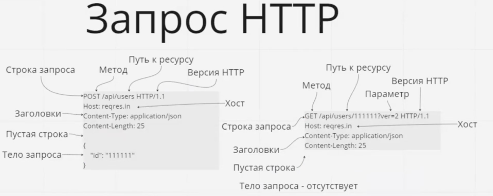
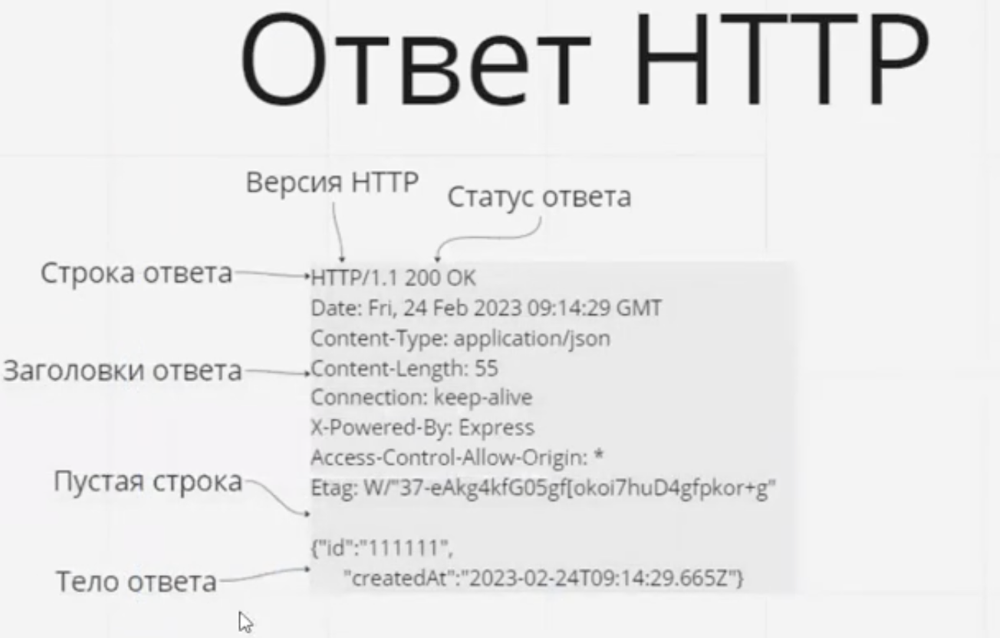
Технический стандарт (Request for Comments), который описывает протокол HTTP версии 1.1
- Например данные для создание нового ресурса на сервере
JSON
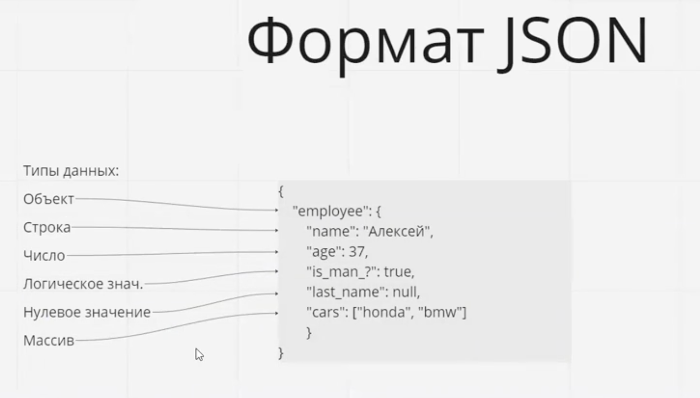
JSON (JavaScript Object Notation) — стандартный текстовый формат для хранения и передачи структурированных данных. Он основан на синтаксисе объекта в JavaScript, но не привязан к нему. Работу с ним поддерживают многие современные языки программирования: Python, Java и другие.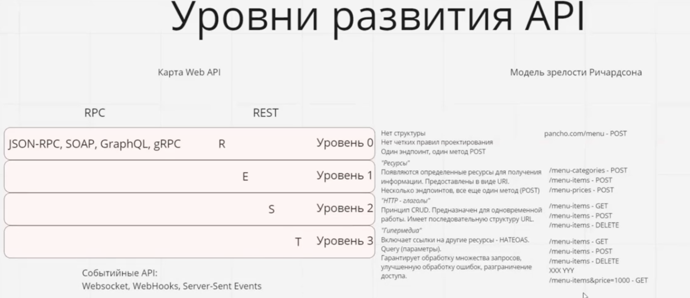
API на 3-м уровне считается REST-full APIинструменты_api https://jsonlint.com Сайт JSONLint— это онлайн-инструмент для проверки, валидации и форматирования JSON-кода. Он полезен тем, что позволяет: - Проверить JSON на синтаксические ошибки (валидировать JSON), чтобы убедиться, что формат данных правильный и совместимый с парсерами. - Отформатировать (привести в удобочитаемый вид с отступами) JSON-код для облегчения чтения и понимания. - Быстро вставить код JSON, набрать или ввести URL с JSON и получить мгновенную обратную связь о корректности структуры. - Использовать в качестве простого редактора и проверяющего инструмента при работе с данными в формате JSON
RPC / JSON-RPC
RPC - Remote Procedure Call. Запрос API в стиле RPC может инициировать запрос на сервере определенных процедур и функций JSON-RPC - протокол удаленного вызова процедур/функций сервера
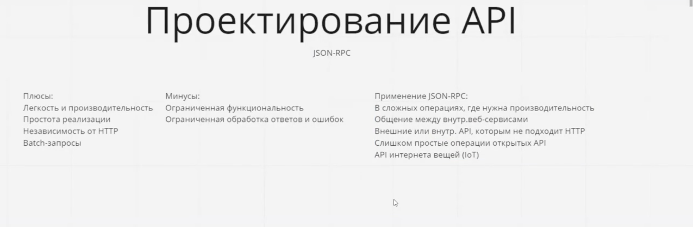
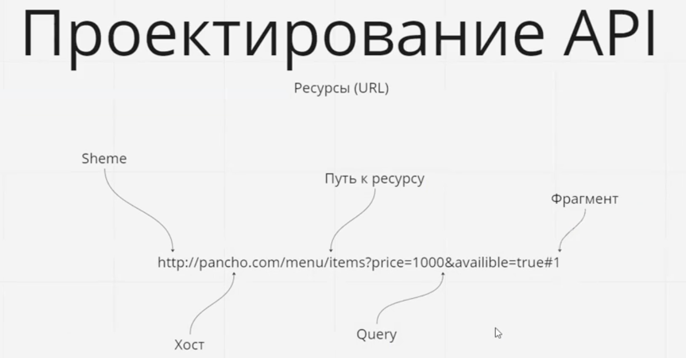
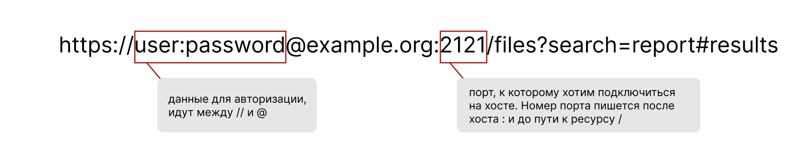
<схема>://<логин>:<пароль>@<хост>:<порт>/<URL‐путь к ресурсу>?<параметры>#<якорь> (если много параметров, то они соединяются через &, например: параметр1=значение1&параметр22=значение22)| Элемент | Значение | Примеры | Обязательность | Множественность |
|---|---|---|---|---|
| Схема | Протокол для доступа к ресурсу | http, https, ftp | Обязательный | Один |
| Логин | Имя пользователя для аутентификации | username | Необязательный | Один |
| Пароль | Пароль для аутентификации | password | Необязательный | Один |
| Хост | Доменное имя или IP-адрес сервера | example.com, 192.0.2.1 | Обязательный | Один |
| Порт | Номер порта для доступа к ресурсу | 80, 443, 8080 | Необязательный | Один |
| URL-путь к ресурсу | Иерархическая структура для указания пути к конкретному ресурсу на сервере | /dir/file.html/dir/file | Может отсутствовать. Например, в URL: https://www.example.com/. Это значит, что мы обращаемся к корневому ресурсу на сервере (допустим, к главной странице, где расположены уже ссылки на другие ресурсы). | Один |
| Параметры | Дополнительная информация, передаваемая серверу в виде пар “ключ=значение” | query=search, page=2 | Необязательный | Много |
| Якорь | Идентификатор фрагмента на веб-странице для прокрутки до указанного места. Например, указатель на определённую главу в статье на википедии. Позволяет вам быстро перемещаться по статье прямо из содержания. | #section1, #footer | Необязательный | Один |
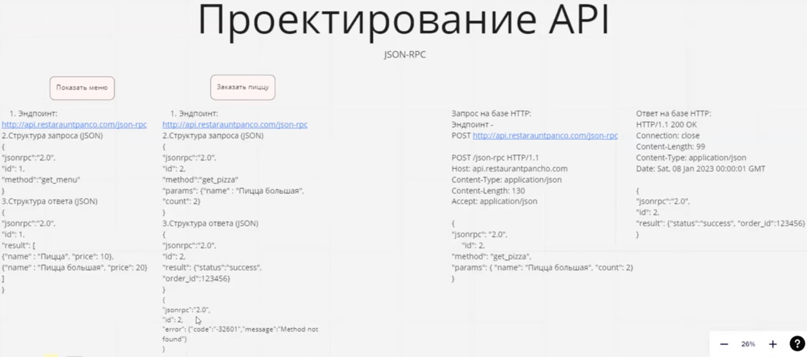
Использовать коды ошибок в ответе нужно правильно. Стандартный набор для JSON-RPC выглядит так:| HTTP-код | JSON-RPC код(внутри тела ответа) | Причина |
|---|---|---|
| 500 | -32700 | Ошибка разбора |
| 400 | -32600 | Неверный запрос |
| 404 | -32601 | Метод не найден |
| 500 | -32602 | Неверные параметры |
| 500 | -32603 | Внутренняя ошибка |
| 500 | -32099..-32000 | Ошибка сервера |
инструменты_api https://reqbin.com/ Полезен как онлайн-инструмент для тестирования и отладки API, в частности REST и SOAP API. Он позволяет: - Быстро отправлять HTTP-запросы (POST, GET, PUT, HEAD и др.) к API прямо из браузера, не требуя установки дополнительного программного обеспечения. - Просматривать и валидировать ответы сервера в форматах JSON, XML, HTML и CSS с подсветкой синтаксиса и выявлением ошибок.
инструменты_api https://www.javainuse.com/bytesizejson Данный инструмент на сайте https://www.javainuse.com — это онлайн-калькулятор для определения размера JSON-строки в байтах. Он полезен для: - Быстрого подсчёта, сколько именно байт занимает JSON-объект или строка в формате JSON. - Помогает оптимизировать данные, например, при передаче по сети или хранении, чтобы знать фактический размер JSON. - Можно вставить JSON-текст, и инструмент вычислит размер с учётом всех символов, включая пробелы или без них (если предусмотрена опция игнорирования пробелов). - Особенно полезен для разработчиков, работающих с API, сериализацией данных и ограничениями на размер сообщений.
инструменты_api https://open-rpc.org OpenRPC — это спецификация и экосистема для описания, документирования и взаимодействия с JSON-RPC 2.0 API. Она служит аналогом OpenAPI, но для протокола JSON-RPC, который обеспечивает удалённый вызов процедур (RPC) через JSON. Основные возможности и назначение OpenRPC: - Позволяет формализовать описание JSON-RPC API с помощью машинно-читаемой спецификации, включая методы, параметры, типы данных, возвращаемые значения и ошибки. - Упрощает автоматическую генерацию документации, клиентских библиотек и серверных заглушек на основе описания. - Делает JSON-RPC API более прозрачными и стандартизированными, облегчая интеграцию между сервисами.
инструменты_api https://spec.open-rpc.org это официальный ресурс спецификации OpenRPC, которая задаёт стандартное язык-независимое описание интерфейса для JSON-RPC 2.0 API.
инструменты_api https://playground.open-rpc.org Это онлайн-инструмент (playground) для работы со спецификацией OpenRPC. Он позволяет разработчикам: - Редактировать, валидировать и визуализировать OpenRPC документы в реальном времени через удобный веб-интерфейс. - Быстро создавать и модифицировать описания JSON-RPC API, сразу видя, как меняется итоговая документация. - Проверять существующие OpenRPC спецификации на корректность и полноту. - Использовать примеры схем, подгружать OpenRPC документы по URL или непосредственно вставлять JSON в редактор. - Экспериментировать с настройками отображения и взаимодействия для удобства разработки. - Быть удобным порталом для быстрой итерации и прототипирования при создании и поддержке JSON-RPC API на базе OpenRPC.
инструменты_api https://inspector.open-rpc.org Это инструмент OpenRPC Inspector, предназначенный для создания, редактирования и выполнения JSON-RPC запросов к сервисам, описанным спецификацией OpenRPC. Основные функции и назначение OpenRPC Inspector: - Позволяет формировать JSON-RPC запросы вручную или с помощью автозаполнения на основе OpenRPC документа (спецификации API). - Подключается к указанному URL JSON-RPC сервера и выполняет тестовые вызовы методов API. - Отображает результаты выполнения запросов в удобном формате, помогает отлаживать и тестировать JSON-RPC сервисы. - Может использоваться как отдельный веб-инструмент или интегрироваться в проекты. - Поддерживает конфигурацию параметров запроса и протоколов транспорта (HTTP, WebSocket и др.). - Способствует удобному исследованию и изучению возможностей OpenRPC API. Таким образом playground помогает ускорить и упростить процесс создания, тестирования и отладки спецификаций OpenRPC и связанных с ними AP
Swagger и OpenAPI
Swagger (сейчас известный как OpenAPI Specification) — это инструмент для проектирования, документирования и использования REST API (на самом деле можно еще async api). Он предлагает стандартизированный подход к описанию ваших API, включая url адреса, параметры запросов, тела запросов, форматы ответов, статусы ответов и многое другое.
Swagger Core
- Кто использует: Разработчики.
- Для чего: Swagger Core используется для генерации спецификаций Swagger (OpenAPI) из исходного кода приложения. Это особенно полезно, когда вы разрабатываете API и хотите автоматически создавать спецификацию, основанную на вашем коде, вместо того чтобы писать её вручную. Swagger Core поддерживает множество языков программирования и фреймворков.
- После того как разработчики завершили написание кода для нового API или внесли изменения в существующий API, они могут использовать Swagger Core для автоматического обновления спецификации Swagger, что упрощает поддержку актуальной документации API.
Swagger Editor
- Кто использует: Проектировщики API и разработчики.
- Для чего: Swagger Editor — это интерактивная среда для редактирования спецификаций OpenAPI. Она позволяет легко создавать и тестировать описание API, предоставляя мгновенную обратную связь и визуальное представление API. Swagger Editor поддерживает как YAML, так и JSON форматы.
- Проектировщик API может использовать Swagger Editor для создания новой спецификации API или модификации существующей. Редактор помогает визуализировать структуру API и автоматически проверяет спецификацию на наличие ошибок, что обеспечивает создание корректного и полного описания API.
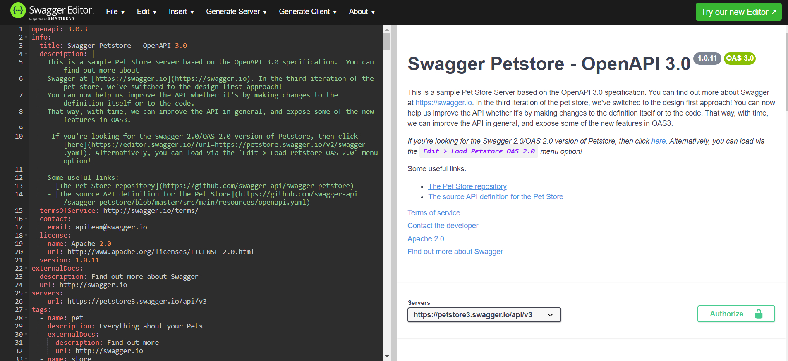
Swagger UI
- Кто использует: Разработчики, проектировщики API и внешние пользователи API.
- Для чего: Swagger UI предоставляет визуальное представление спецификации Swagger, позволяя интерактивно исследовать API и отправлять запросы к нему. Это делает Swagger UI идеальным инструментом для демонстрации и тестирования API.
- После того как спецификация API готова и веб-сервис с API развернут, Swagger UI может быть настроен для демонстрации возможностей API внешним пользователям или другим разработчикам. Они могут использовать Swagger UI для отправки запросов к API, изучения структуры ответов и тестирования различных параметров запросов без необходимости писать код для тестирования.
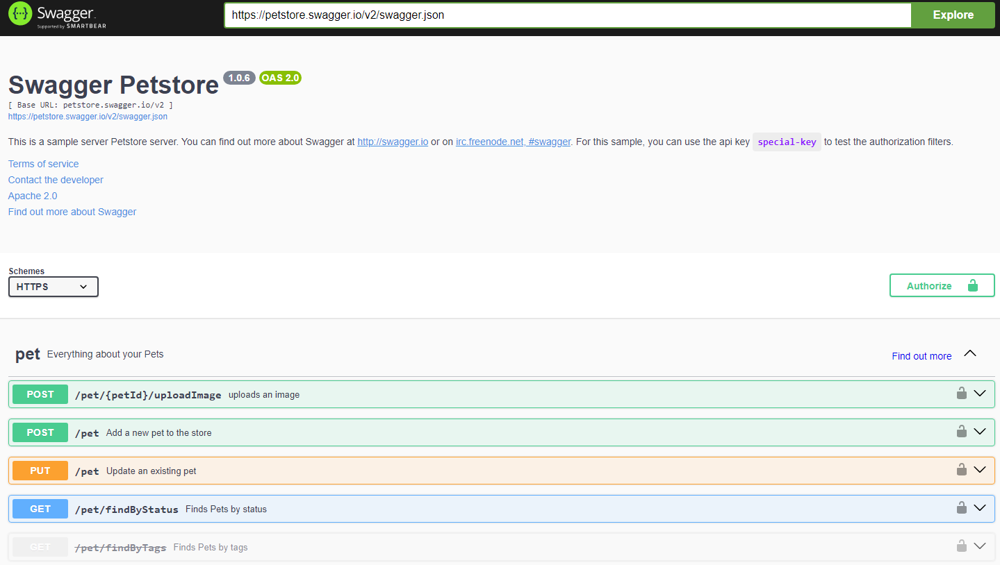
Swagger Codegen
- Кто использует: Разработчики и внешние пользователи API.
- Для чего: Swagger Codegen используется для автоматической генерации кода клиентских библиотек API, серверных заглушек API на основе спецификации Swagger. Он поддерживает множество языков программирования и фреймворков, что значительно ускоряет процесс разработки.
- Когда спецификация API готова, разработчики могут:
- передать внешним пользователям эту документацию API (в виде YAML или JSON файла). А внешние пользователи API, используя Swagger Codegen могут моментально получить код, в котором будет написано использование(вызов) этого API. Этот код могут называть клиентскими библиотеками SDK. Либо сами разработчики могут внутри компании использовать Swagger Codegen для генерации этого же кода, если API будут использовать внутри компании.
- использую Swagger Codegen моментально получить код бэкенд API, на основе опять же документации API (в виде YAML или JSON файла). В этом коде, конечно же будет только API, а не скрытая под ним логика (то есть это API не будет ничего делать, оно будет отдавать заранее определённые ответы в документации, например 200 OK при правильном вызове). Это называют серверными заглушками API, и это ускоряет начальные этапы разработки серверной части API. Потому что остаётся дописать только логику, и параллельно уже другие команды могут пробовать вызывать ваше API и настраивать интеграцию с вами. инструменты_api https://platform.openai.com/docs/supported-countries OpenAPI — это формальная спецификация для описания RESTful API, которая позволяет стандартизированным и машиночитаемым способом описать структуру, поведение и интерфейсы веб-сервисов. Основное назначение OpenAPI:
- Документировать API в виде файлов YAML или JSON, описывая конечные точки (endpoint), методы HTTP (GET, POST и др.), параметры запросов, типы данных, схемы ответов, коды ошибок и схемы безопасности.
- Автоматически генерировать документацию, клиентские SDK (библиотеки для работы с API), серверный каркас, тестовые сценарии.
- Улучшать взаимодействие между командами разработчиков, тестировщиков и интеграторов благодаря унифицированному описанию API.
- Обеспечивать автоматическую проверку и валидацию запросов и ответов, что повышает качество и надежность сервисов.
- Облегчать интеграцию, настройку API-шлюзов и управление жизненным циклом API.
SOAP API
SOAP (Simple Object Access Protocol) SOAP — это протокол обмена сообщениями в виде XML, который помогает доставлять системные сообщения от одного сервера к другому. SOAP может работать через ряд распространённых протоколов, таких как HTTP, SMTP, TCP или UDP
XML
Extensible Markup Language — расширяемый язык разметки. Это текстовый формат, предназначенный для представления структурированных данных. Он позволяет организовать информацию в иерархической структуре, доступной как для человека, так и для компьютера
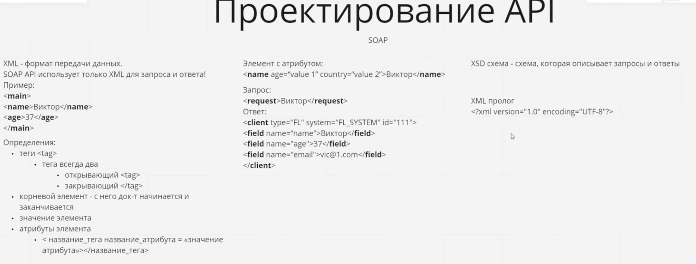
XSD - XML Shema Definition.
Документ, определяющий структуру, содержание и типы данных XML-документа. Определяет элементы и атрибуты, которые могут быть использованы в XML-документе. Устанавливает правила комбинирования и использования этих элементов и атрибутов. Схемы XSD обычно используются, чтобы проверить XML-документы и обеспечить их соответствие определенной структуре и набору правил или отклонить в случае несоответствия.
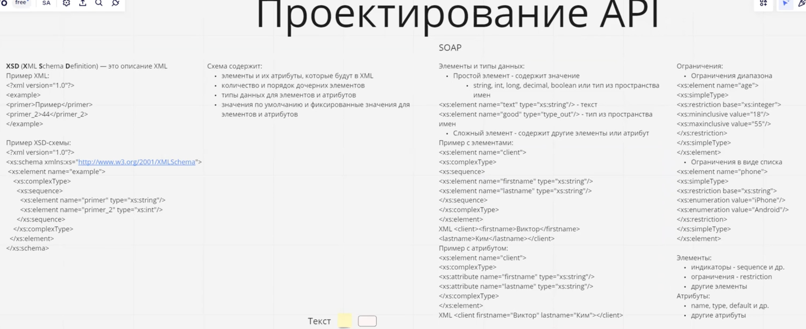
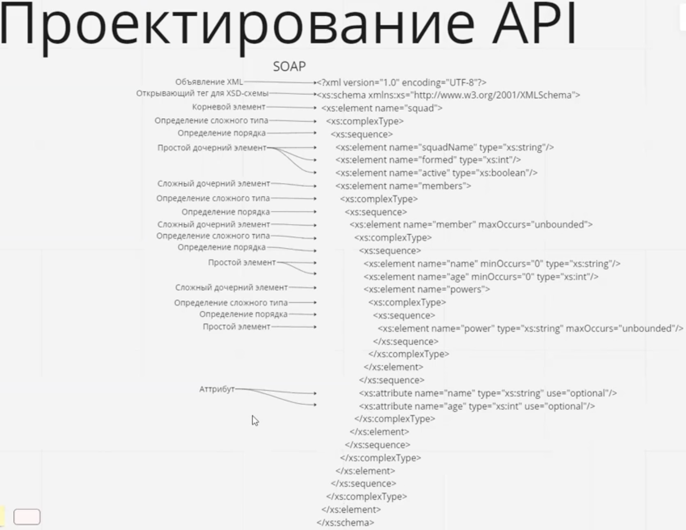
Чтобы не жестко ограничивать порядок элементов, нужно вместо xs:sequence использовать xs:all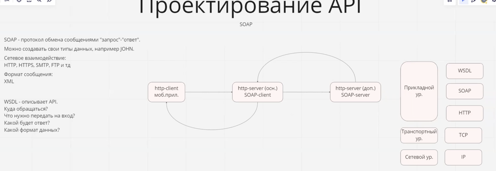
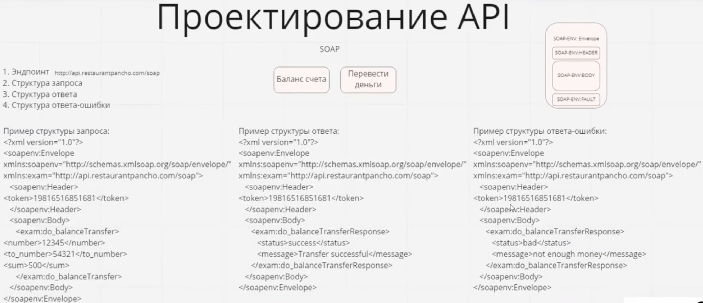
Приемущества и недостатки SOAP
WSDL
WSDL (Web Services Description Language) — язык описания веб-сервисов на основе XML. Он предоставляет стандартизированный формат для определения структуры и поведения веб-сервисов, позволяя клиентам понять, как взаимодействовать с сервисом
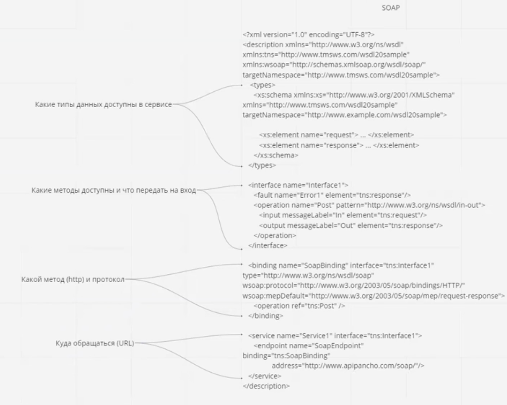
XSD — это язык, который описывает структуру XML-документов. С его помощью можно определить, например:- список разрешённых элементов в XML-документе и их описание;
- порядок элементов;
- какое содержимое могут содержать элементы (например, строку или дату);
- могут ли элементы содержать другие (дочерние) элементы. XSD используется для проверки корректности XML-документов, полученных по электронной почте, при передаче файлов или через веб-сервисы. WSDL — это язык на основе XML, который используется для описания веб-сервисов. В WSDL-документе содержится информация о местонахождении сервиса и доступных методах (операциях). Для каждого метода определяются параметры отправляемого и получаемого сообщения. Таким образом, WSDL фокусируется на интерфейсе сервиса, а XSD — на формате данных.
types (описание данных) ↓ message (определение входных/выходных методов) ↓ portType (интерфейс: какие есть операции) ↓ binding (как эти операции реализуются через SOAP/HTTP) ↓ service (где именно доступен сервис)
- types: описан Task и TaskID.
- messages: GetTaskRequest (TaskID), TaskResponse (Task).
- portType: абстрактная операция GetTask(input, output, fault).
- binding: как GetTask будет упакован в SOAP:
- HTTP + SOAP
- document/literal
- SOAPAction = http://www.example.com/taskmanagement/GetTask
- Fault = NotFoundError.
GraphQL
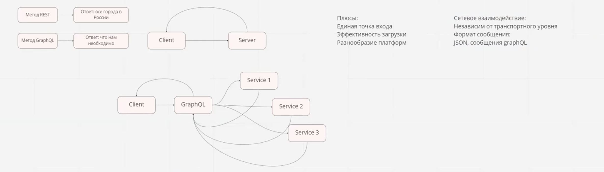
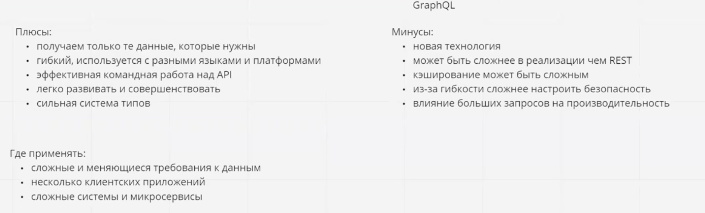
Определяются JSON подобным способом.Остается один вопрос - как система понимает, откуда брать данные по тому или иному полю в GraphQL? Для этого используются резольверы. Resolver или распознаватели — функция, которая возвращает данные для определённого поля. Эту функцию пишут разработчики и она извлекает данные из различных источников, включая REST API, базы данных и другие источники. Представьте, что у нас есть схема GraphQL с типом “Клиент”, который включает поля “имя” и “возраст”. Когда клиент отправляет запрос на объект “Клиент”, серверу GraphQL необходимо знать, как получить данные для полей “имя” и “возраст”. Здесь на помощь приходят резольверы. Каждое поле в схеме имеет связанную с ним функцию resolver, которая отвечает за получение данных для этого поля. Например, мы можем определить функцию resolver для поля “имя”, которая получает имя человека из базы данных, а “возраст” будем получать по API. Подробнее останавливаться на этом не будем, просто договоримся, что благодаря резольверам можно гибко получать данные для запрашиваемых полей из разных API или разных БД или других источников.
В GraphQL, в отличие от REST API, не используются коды состояния HTTP для обозначения успеха или неудачи запроса. Вместо этого GraphQL использует один код состояния HTTP, 200 OK, для всех ответов, независимо от того, содержат они ошибки или нет. Это по стандарту используется и во всех API RPC-стилей. Успех или неудача запроса определяется наличием ошибок в объекте ответа.
gRPC
gRPC (Google Remote Procedure Call) — система удалённого вызова процедур (RPC) с открытым исходным кодом, разработанная компанией Google в 2015 году. Позволяет приложениям, работающим на разных машинах, вызывать функции друг друга, будто они локальные
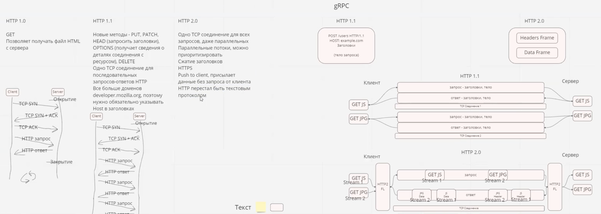
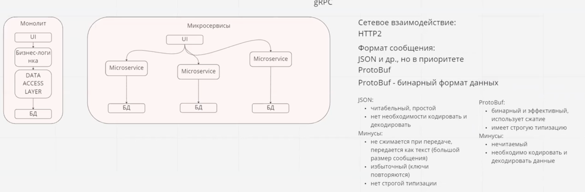
gRPC хороший выбор высокопроизводительные API и высокочатсотные запросы в структуре микросервисов, где нужно создать АПИ которые должны работать с несколькими работы (из-за protoBuf). Для сценариев двунаправленных запросов данныхREST
REST - это архитектурный стиль взаимодействия веб-приложения в сети (не протокол, не технология). Как именно выстраивать взаимодействие между компонентами (frontend и backend) для эффективной работы. Его приемущества:
- Простота
- Гибкость
- Производительность
- Надежность (максимально использует возможности https) REST API стал таким популярным в основном потому, что он хорошо согласуется с архитектурой интернета. По схожим принципам построена архитектура глобальных WWW сетей. Он обеспечивает простой, стандартизированный и масштабируемый способ создания веб-сервисов. Его простота и использование знакомых методов HTTP и встроенных механизмов кеширования делают его легким для изучения и внедрения разработчиками. В результате REST стал популярным выбором разработчиков при проектировании API для современных веб-приложений. Концепции REST:
- Клиент-серверная архитектура
- Отсутствие состояния (stateless)
- Кеширование
- Единообразие интерфейса (HATEOS)
- Архитектура из множества компонентов
- Код по запросу (необязательное ограничение)
Концепция stateless
Концепция stateless(отсутствие состояния) - сервер не должен хранить никакую информацию о том, что хочет клиент.
Хотя RESTful API разработаны для работы без статических данных, могут возникать ситуации, когда необходимо управление состоянием, например, аутентификация пользователя, отслеживание сессии или персонализация. В этих случаях cookies могут использоваться для хранения минимального количества информации о состоянии на стороне клиента, позволяя серверу извлекать эту информацию при необходимости. При использовании файлов cookie в RESTful API сервер обычно хранит в файле cookie уникальный идентификатор (идентификатор сессии или маркер). Затем клиент отправляет cookie вместе с каждым запросом. Сервер может использовать идентификатор для поиска соответствующего состояния клиента в своем хранилище данных, например, в базе данных или кэше. Хотя в этом случае сервер хранит часть состояния (идентификатор сессии или маркер), основная цель — свести управление состоянием к минимуму и позволить клиенту обрабатывать большую часть информации, связанной с состоянием. Этот подход все еще придерживается принципа «stateless» REST, поскольку каждый запрос содержит всю необходимую информацию для обработки сервером, не полагаясь на то, что сервер будет помнить состояние клиента. В целом, несмотря на то, что RESTful API стремятся быть без статических данных, могут возникать ситуации, когда необходимо управлять состоянием. Использование cookies может помочь поддерживать минимальное количество состояния на стороне клиента и при этом придерживаться принципа отсутствия состояния в RESTful API.
Данная концепция позволяет легко масштабировать приложения. Если у нас используется несколько серверов, один из которых упал, то клиент делает точно такой же запрос, но только к другому серверу. Сервер даст корректный ответ т.к. клиент предоставил ему полный запрос и серверу ничего не нужно запрашивать у упавшего сервера (например логин/пароль)
Давайте поймём разницу между Stateful и Stateless API Stateful API: - Сервер запоминает состояние клиента при нескольких запросах. Он хранит информацию о клиенте, такую как предпочтения пользователя, прошлые действия или другие данные, относящиеся к взаимодействию клиента с веб-службой. - Преимущества: - Персонализация. Поскольку сервер хранит состояние клиента, он может обеспечить персонализированный пользовательский опыт, основанный на прошлых взаимодействиях клиента. - Более простая навигация. Пользователи могут легко перемещаться между различными частями веб-приложения без необходимости каждый раз заново вводить данные или проходить аутентификацию. - Недостатки: - Проблемы масштабируемости. Хранение состояния клиента на сервере потребляет ресурсы и может стать узким местом при увеличении числа клиентов. - Сложность. Управление состоянием клиента на сервере усложняет приложение и делает его более сложным в обслуживании и устранении неполадок. - Пример из реального мира: работа с файлами по FTP протоколу — каждое действие клиента регистрируется сервером в состояние и сохраняется на сервере. Stateless API - В API без состояния сервер не хранит никакой информации о состоянии клиента между запросами. Каждый запрос должен содержать всю необходимую информацию, чтобы сервер мог его обработать. - Преимущества - Масштабируемость. API без статических данных более масштабируемы, так как серверу не нужно хранить и управлять состоянием клиента, освобождая ресурсы. - Простота. Отсутствие управления состоянием на сервере упрощает приложение и облегчает его обслуживание и устранение неполадок. - Недостатки: - Меньшая персонализация. API без состояния не обеспечивают такого же уровня персонализации, как API с состоянием, поскольку сервер не запоминает прошлые взаимодействия клиента. - Повышенная сложность на стороне клиента. Клиент должен управлять своим состоянием и включать всю необходимую информацию в каждый запрос, что может увеличить сложность на стороне клиента. - Пример из реального мира: API REST, широко используемые в веб-сервисах, как правило, не имеют состояния по своей конструкции. Они полагаются на то, что клиент предоставляет всю необходимую информацию в каждом запросе, позволяя серверу сосредоточиться на обработке запроса без сохранения состояния клиента.
Кеширование
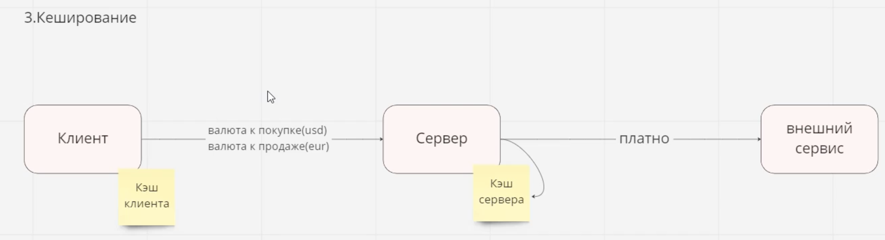
Данная концепция обязывает сервер при каждом запросе к нему отдавать в пометке к нему - можно кешировать или нет.Кэширование — это техника, используемая для хранения и повторного использования результатов предыдущих вычислений или запросов в веб-интерфейсах. Она позволяет значительно повысить производительность и скорость отклика веб-приложений. Можно кешировать на стороне клиента, на стороне сервера, на стороне промежуточного сервера между клиентом и целевым сервером. Например, используют CDN для быстрой доставки контента в разных регионах.
Однако кэширование также создает некоторые проблемы. Давайте обсудим преимущества и трудности использования кэширования в веб-интерфейсах API.
Преимущества
- Улучшенная производительность. Кэширование уменьшает задержку последующих запросов, сохраняя данные ответа и предоставляя их непосредственно клиенту, минуя необходимость выполнения трудоемких операций, таких как запросы к базе данных или сложные вычисления.
- Снижение нагрузки на сервер. Поскольку кэшированные ответы могут быть переданы непосредственно клиенту, нагрузка на сервер снижается, что позволяет ему обрабатывать больше запросов и работать более эффективно.
- Лучший пользовательский опыт. Более быстрое время отклика благодаря кэшированию приводит к более плавной и работе пользователей.
- Снижение потребления полосы пропускания. При обслуживании кэшированных ответов объем данных, передаваемых между клиентом и сервером, уменьшается, что может привести к снижению потребления пропускной способности и расходов.
Трудности
- Согласованность данных. Одной из основных проблем кэширования является поддержание согласованности данных между кэшем и базовым хранилищем данных. Когда данные обновляются или удаляются, кэш должен быть аннулирован или обновлен, чтобы отразить изменения. Это может быть сложным в управлении.
- Признание кэша недействительным. Принятие решения о том, когда и как аннулировать или обновлять кэш, может оказаться сложной задачей. Выбор правильной стратегии, такой как истечение срока действия на основе времени, аннулирование на основе событий или их комбинация, имеет решающее значение для обеспечения получения клиентами актуальных данных.
- Ограничения на хранение и размер кэша. В зависимости от используемого механизма кэширования могут существовать ограничения на размер кэша или объем данных, которые можно хранить. Управление этими ограничениями требует тщательного планирования и распределения ресурсов.
- Повышенная сложность. Реализация кэширования повышает сложность проектирования и разработки веб-интерфейса. При создании и поддержке API разработчики должны учитывать различные факторы, такие как хранение кэша, стратегии аннулирования и согласованность данных.
HATEOAS
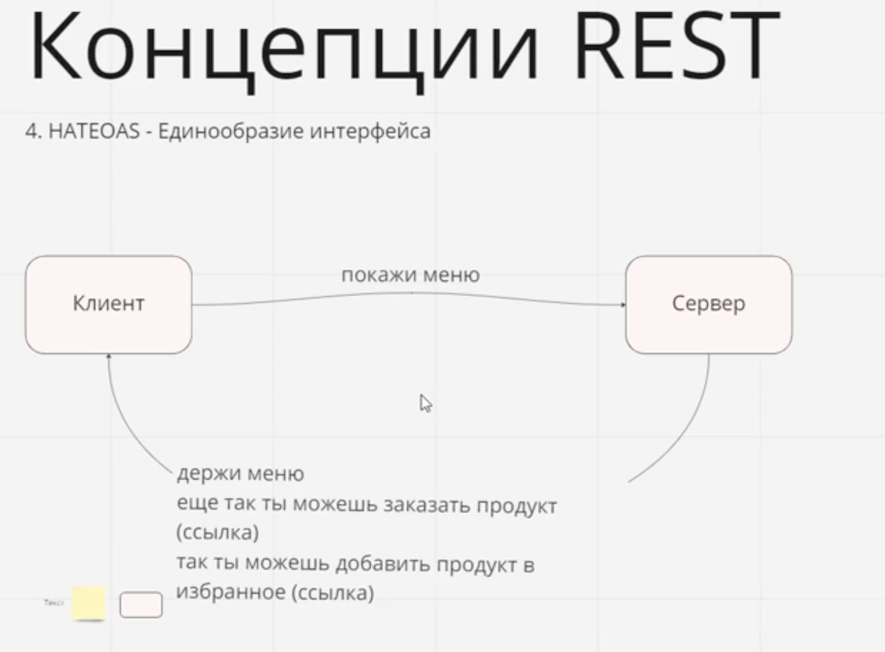
Клиент жестко не привязывается к реализации методов сервера и может сам гибко перемещаться по интерфейсу приложенияАрхитектура из множества компонентов
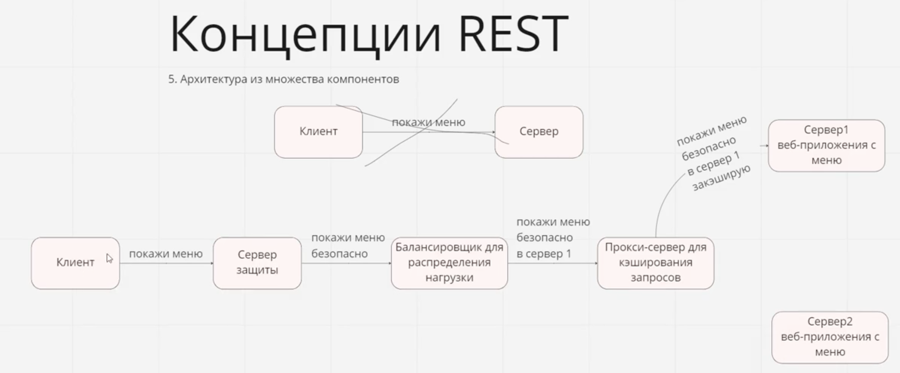
Обзорно рассмотрим возможные компоненты слоев архитектуры в сети:- Серверы сети доставки контента (CDN) ускоряют доставку контента, например, изображений и видео, за счет хранения копий контента в разных точках мира.
- Балансировщик нагрузки. Распределяет входящие запросы между несколькими серверами, чтобы избежать перегрузки одного сервера и обеспечить более быстрое время отклика.
- Прокси-сервер. Действует как промежуточное звено между клиентом и другим сервером, пересылая между ними запросы и ответы.
- Обратный прокси-сервер. Принимает запросы от клиентов от имени других серверов, помогая защитить серверы и повысить производительность.
- Frontend-сервер. Предоставляет данные и ресурсы, необходимые для пользовательского интерфейса, такие как HTML, CSS и файлы JavaScript.
- Кэширующий сервер. Временно хранит копии часто запрашиваемых данных, чтобы уменьшить необходимость многократного получения данных из первоисточника, что повышает производительность.
- Бэкэнд-сервер. Обрабатывает основную бизнес-логику приложения, обрабатывает запросы и взаимодействует с базами данных или другими службами.
- Сервер базы данных. Хранит, управляет и извлекает данные, используемые приложением.
- Дополнительный сервер с программами для мониторинга состояния других серверов/ журналирования запросов и т.д.: Предназначен для отслеживания производительности, здоровья и состояния других серверов в системе, а также записи запросов и событий для анализа и устранения неполадок.
Первое ,что нужно сделать при проектировании REST API — спроектировать ресурсы. То есть решить, какие ресурсы должны быть доступны в нашем API. Далее — назначить URL-адреса этим ресурсам. Вы просто исследуете будущие процессы и функции, которые должны быть в вашем приложении. Выделяете объекты (существительные) и назначаете им URL адреса.
Ресурсы и методы
Ресурсы
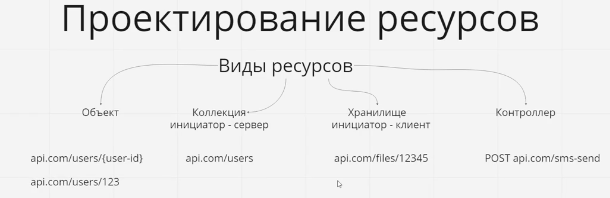
Все ресурсы - это существительные. Особенность коллекции в том, что то как именно сервер выстроил структуру своих ресурсов. Клиент этим никак не управляет. Хранилище - похоже на коллекции, но ими управляет клиент, а не сервер. Контроллер - похож на RPC-стиль и запускают внешнюю активность. Используется не очень частоМетоды
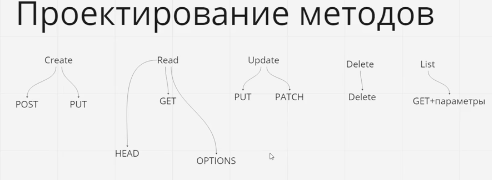
Все методы - это глаголы- POST — отправка данных на сервер для создания новых ресурсов или выполнения операций, не идемпотентен.
- PUT — полное обновление или создание ресурса по заданному URI, идемпотентен.
- PATCH — частичное обновление ресурса.
- DELETE — удаление ресурса.
- HEAD — получение только заголовков ответа без тела.
- OPTIONS — запрос поддерживаемых сервером методов для ресурса.
- TRACE — диагностика маршрута запроса.
- CONNECT — устанавливает туннель для защищенного соединения (например, через прокси).
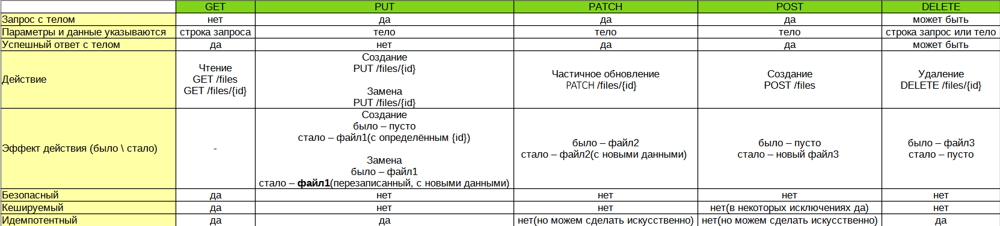
GET
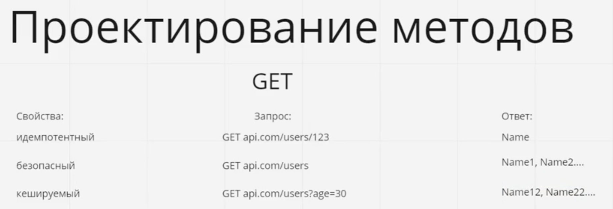
У метода GET нет тела - параметры добавляются сразу в строку запросаPUT
PUT не генерируется на стороне сервера и поэтому применим только для типа ресурсов Хранилище, но не Коллекции. Обычно PUT используется для замены/обновления, а для создания используется POST, где нет ограничения на типы Ресурсов и можно использовать не только Файлы, но и Коллекции. PUT используется для:
- создания ресурса, если клиент может предоставить id для этого ресурса (например, положить файл в хранилище с нужным ему id), Для создания новых экземпляров ресурса предпочтительнее использование POST запроса. В данном случае при создании экземпляра будет предоставлен корректный идентификатор в возвращённых данных об экземпляре (ведь клиент может ошибиться).
- перезаписи ресурса на новый ресурс с новыми данными (например, перезаписать json, добавив туда cat = 2) Стандартно мы говорим о ПЕРЕЗАПИСИ файла, то есть замене на новый, а не просто добавлении данных. В этом случае вы должны указать в запросе все данные полностью: оригинальные + новая добавленная часть. Важно. Будьте внимательны с использованием данного подхода. Если с обновлением API вы добавили обязательные поля по умолчанию, то при вызове PUT для обновления они будут добавлены также в файл, вместе с вашими новыми данными. Но вы свободны в реализации методов «под капотом». Можно использовать частичное добавление данных как в методе PATCH — тело запроса будет содержать только обновляемую часть, полной перезаписи нет. Новые поля по умолчанию не будут добавлены.
PATCH
POST
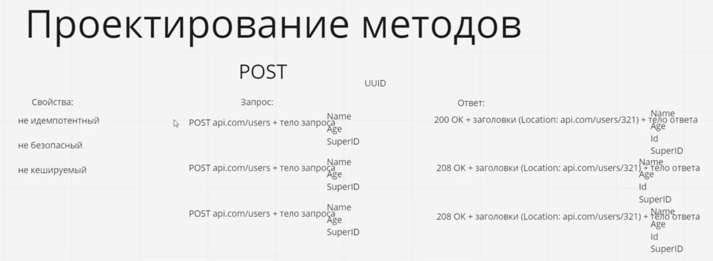
POST генерируется на стороне сервера и поэтому применим как коллекциями, так и с хранилищами (в отличие от PUT, который используется только с хранилищами) SuperID - искусственный ключ идемпотентности Для генерации SuperID как правило применяется UUID.- Тело запроса должно содержать данные, по которым создается новый ресурс. В итоге создается новый ресурс - как будто новый файл. Сервер сам назначает ресурсу ID.
- В теле ответа обычно возвращают либо весь созданный ресурс, включая метаданные об ID ресурса и т. д., либо только метаданные об ID ресурса и т. д..
- Не забывайте про заголовок Location в ответе
- С помощью отдельного ключа (SuperID) мы можем искусственно сделать POST идемпотентным (как и PATCH)
- Если используем ресурс вида контроллер, просто вызываем POST /controller. В теле запроса передаём данные клиента или всё, что необходимо для выполнения действия над другим ресурсом. Например, мы хотим чтобы контроллер отправил смс ресурсу sms/123 — пользователю 123
инструменты_api Генератор UUID можете посмотреть тут: https://www.uuidgenerator.net/
DELETE
Часто делают, что при вызове метода DELETE добавляется поля isDeleted и присваевается определенное значение и они, например, удаляется из клиентского интерфейса, но при этом остается в БД для сохранения исторических данных. У данного метода может быть тело запроса, а может и не быть. Вы сами можете это решать. Всё зависит от того, насколько объёмные параметры нужно передать для удаления в запросе и т. д.
Суть использования разных методов — единое понимание поставщиков и потребителей апи в том, какую операцию вызвать, чтобы получить результат. То есть, DELETE вызываем действительно для удаления файла (клиент его не увидит), но реализацию «под капотом» делаем любую — либо реально удаляем, либо изменяем файл, поставив метку isDelete=true, либо перемещаем ресурс в другое место….
Важно понимание конечного результата, а не конкретная реализация. Все понимают, что вызов метода DELETE сделает так, что файл удалится у клиента в интерфейсе — и этого достаточно.
HEAD
Опциональный метод.
Используется чтобы не тратить время и ресурсы на загрузку всего объекта методом GET
Метод HEAD — это тоже самое, что GET, но он запрашивает ТОЛЬКО заголовки, ему не интересно тело.
Также можно запрашивать коллекции, например HEAD /users.
HEAD используется в «условных» запросах, мы обсудим их механику позже
OPTIONS
Позволяет понять какие методы можно использовать При использование OPTIONS со * - получим данные не по определенному объекту, а по всему серверу.
- потребитель может использовать метод OPTIONS для исследования API поставщика
- некоторые источники говорят, что успешный ответ может иметь тело, но на практике это почти не реализуется
Запросы к спискам ресурсов
Фильтрация
GET api.com/cars?color=white&size=small
Сортировка
GET api.com/cars?color=white&size=small&sort=+price or GET api.com/cars?color=white&size=small&sort=asc.price GET api.com/cars?color=white&size=small&sort=asc.price,-state сортировка сначала по возрастанию цены и по убыванию состояния
- в сортировке вместо +- иногда используют отдельное поле - sortOrder: string (необязательно, по умолчанию: “asc”). Поле может принимать значения ASC или DESC (от Ascending и Descending, по возрастанию и по убыванию). Например …..sortBy=createdAt&sortOrder=desc
- если несколько параметров, можно так ………..sort=createdAt:desc&price:asc
Пагинация
Пагинация — это способ разделения большого объема информации на несколько небольших страниц с целью удобства просмотра и навигации. Вместо одной длинной страницы с сотнями элементов (например, товаров, статей, изображений) контент разбивается на части — по 10-20 элементов на страницу. Пользователь может переходить между страницами с помощью нумерованных ссылок или кнопок «Вперед/Назад»
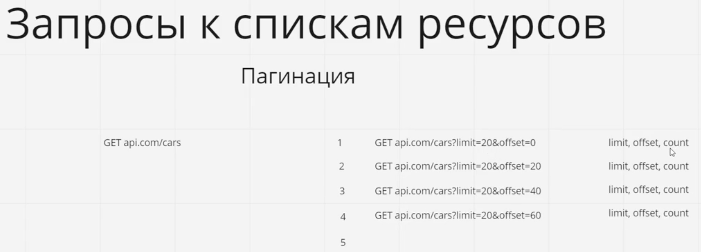
Count - показывает сколько всего записей в этой коллекции Есть более сложные механики пагинации, например курсорная.Этот подход можно применить, когда объем данных (общее количество автомобилей) становится очень большим, или когда автомобили в базе данных часто обновляются.
В самом базовом сценарии курсор может представлять собой внутренний идентификатор последней записи на странице. Затем клиент может запросить следующую страницу, используя api.com/cars?cursor=10&limit=10, где cursor=10 означает, что мы находимся на позиции 10 в результатах.
(Но лучше скрывать курсор и избегать прямого использования внутреннего идентификатора записи. В идеале это должно быть зашифрованное значение, которое не имеет никакого значения для клиента.)
Поиск
GET api.com/cars?q=honda+bmw
Обычно для поиска используют отдельный ендпоинт с методом POST.
Например, когда список счетов может быть отфильтрован по фамилии клиента с помощью запроса типа GET /accounts?LastName=Ivan, это создает проблему безопасности. Фамилия является конфиденциальной информацией, и параметр запроса LastName будет записан в каждом журнале HTTP по всей сети между клиентом и поставщиком услуг. Более безопасным является запрос POST /accounts/search с параметрами поиска, включенными в тело запроса.
При разработке REST HTTP API важно избегать размещения конфиденциальных данных в параметрах запроса, поскольку они:
- видны в истории браузера (вирус на компьютере может прочитать эти данные локально)
- видны всем промежуточным серверам.
Ограничение ответа
GET api.com/cars/123?fields=price,size,color
Алгоритм проектирования данных
Нужен ли нам данный параметр для использования?
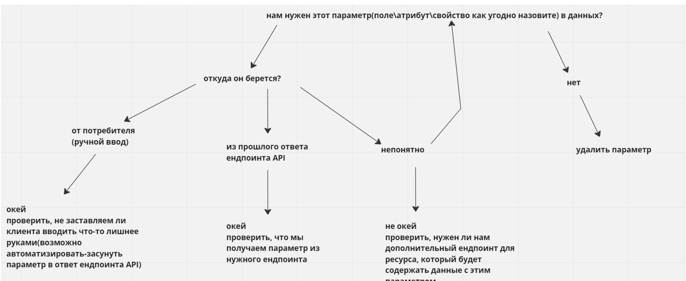
Что делать с конфиденциальными данными в JSON? Есть такие варианты:
- удалить параметры из API, сделав подстановку данных на уровне логики сервиса, а не интерфейса API,
- обрезать конф.данные или замаскировать их символами ***** в API,
- заменить данные на другую сущность. Например, вместо показа реального конфиденциального числового рейтинга клиента, можно назначить статусы и показывать их (good (рейтинг от 3 до 5), to close (от 1 до 3) и т.д.)
- шифрование значения
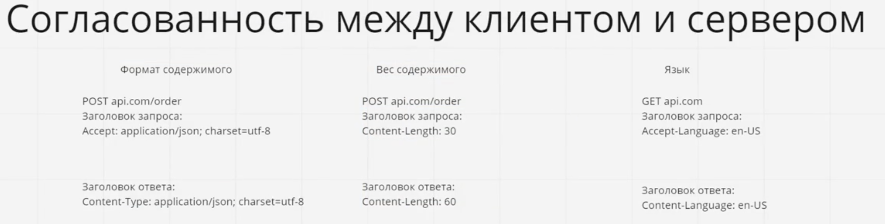
Заголовки Content-Length, Content-Type и Content-Language используются и при запросе с телом (если оно есть). То есть заголовки могут быть и в запросе, и в ответе (они всегда могут быть там, где есть тело). Заголовки используются только для лучшего понимания между клиентом и сервером! Они не предназначены для параметров и конфиденциальных данных. Помещайте все параметры в тело запроса (или в строку, если это GET), а конфиденциальные данные убирайте. Все заголовки и их возможные значения можно найти в открытых ресурсах. Не нужно ничего придумывать с нуля, просто грамотно используйте существующие (читайте документацию HTTP).Подробнее про форматы содержимого, которые указываются в заголовках - Accept(запроса) и Content-Type(везде где есть тело). Если говорить строго, то мы отображаем нужные нам форматы содержимого в виде MIME-типов.
- MIME-типы (Multipurpose Internet Mail Extensions) – это стандарт, разработанный для определения типов контента, которые передаются по сети в рамках протокола HTTP и других протоколов, таких как электронная почта.
- MIME-типы играют важную роль в обеспечении корректного обмена данными между клиентом и сервером, позволяя им правильно интерпретировать и отображать полученный контент.
- MIME-тип состоит из двух частей: типа и подтипа, разделенных косой чертой (/). Тип указывает на основную категорию контента (например, “text”, “image” или “application”), а подтип определяет конкретный формат данных (например, “html”, “jpeg” или “json”). Ниже приведены некоторые распространенные примеры MIME-типов:
text/html: HTML-документыtext/css: файлы таблиц стилей CSStext/plain: обычный текстimage/jpeg: изображения в формате JPEGimage/png: изображения в формате PNGapplication/json: данные в формате JSONapplication/pdf: документы PDFapplication/javascript: файлы с кодом на языке JavaScript Когда клиент отправляет HTTP-запрос, он может указать MIME-типы, которые он способен обработать и предпочитает получить в качестве ответа от сервера, с помощью заголовкаAccept. В свою очередь, сервер возвращает контент с соответствующим заголовкомContent-Type, указывающим MIME-тип отправляемых данных. Это позволяет клиенту корректно обработать и отображать контент, предотвращая возможные проблемы совместимости. Например, при запросе веб-страницы клиент может отправить следующий заголовокAccept:Accept: text/html,application/xmlЭто означает, что клиент предпочитает получить контент в форматах HTML, XML. Важно правильно определить и указывать MIME-типы при работе с HTTP, чтобы обеспечить корректное взаимодействие между клиентом и сервером и гарантировать отображение контента в соответствии с его типом и форматом.
HATEOAS
Hypertext As The Engine Of Application State
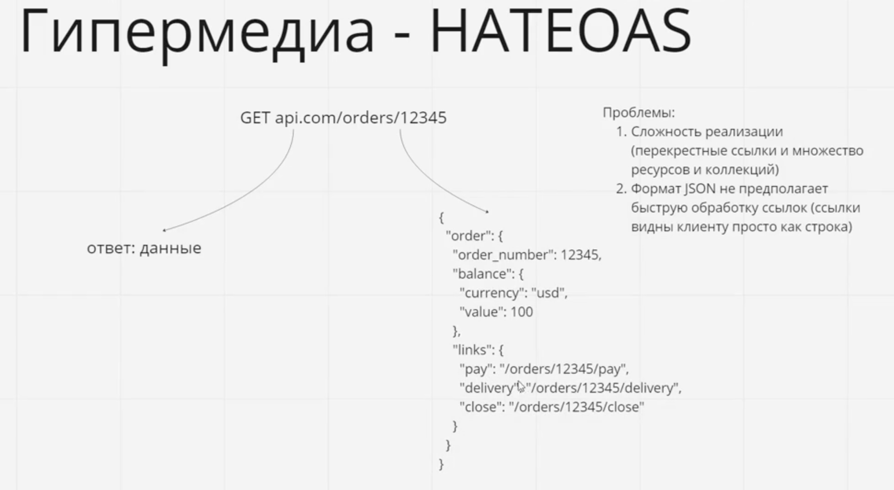
Безопасность
Хеширование
процесс преобразования входных данных любого размера в строку фиксированной длины (хеш). Этот процесс необратим, то есть вы не можете восстановить исходные данные из хеша.
Шифрование
процесс преобразования информации в зашифрованный вид с помощью алгоритма шифрования и ключа, который делает содержимое недоступным для неавторизованных лиц. Шифрование обратимо, то есть информацию можно расшифровать обратно в исходное состояние, но только с использованием соответствующего ключа.
Кодирование
процесс преобразования данных из одной формы в другую, обычно с целью передачи или хранения данных в определённом формате. Кодирование обратимо, и основная цель — сохранение формата данных, а не их секретность.
- Хеширование используется для проверки целостности данных и не позволяет восстановить исходное сообщение. Хеши уникальны для каждого набора данных.
- Шифрование предназначено для защиты конфиденциальности данных, позволяя их восстановление только при наличии соответствующего ключа.
- Кодирование обеспечивает совместимость данных между различными системами или компонентами, позволяя легко преобразовывать данные обратно в их исходный формат.
Шифрование
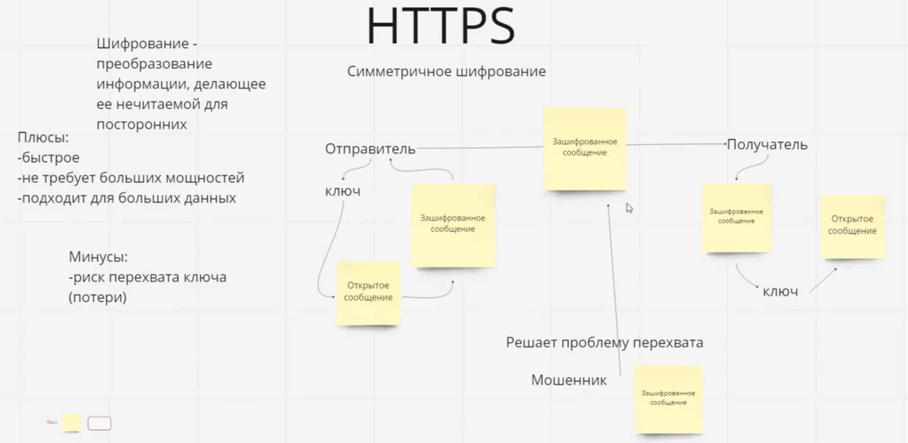
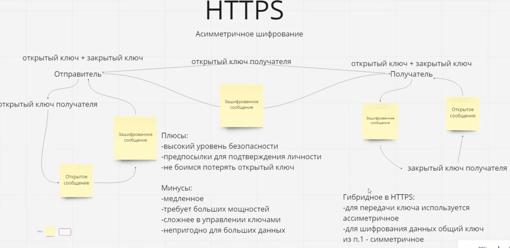
Как работает гибридное шифрование в HTTPS:- Открытый ключ получателя генерируется на основе закрытого ключа получателя и может быть передан хоть всему интернету. После передачи открытый ключ используется только для шифрования - для дешифрования может быть использован только закрытый ключ
- Асимметричное шифрование для обмена ключами: Когда вы заходите на сайт, использующий HTTPS, ваш браузер и сервер начинают процесс рукопожатия TLS (Transport Layer Security). В рамках этого процесса сначала используется асимметричное шифрование для безопасного обмена симметричными ключами. Ваш браузер получает открытый ключ сервера, содержащийся в сертификате безопасности, проверяет его подлинность, а затем использует этот ключ для шифрования и отправки серверу сгенерированного симметричного ключа.
- Симметричное шифрование для передачи данных: После того как симметричный ключ безопасно передан и получен обеими сторонами, вся последующая передача данных между браузером и сервером происходит с использованием симметричного шифрования. Это обеспечивает высокую скорость и эффективность, поскольку симметричное шифрование требует меньше вычислительных ресурсов по сравнению с асимметричным.
Электронная подпись
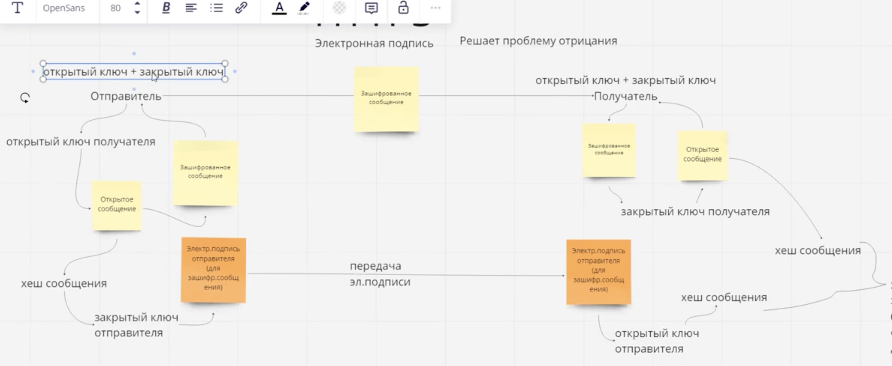
Электронная подпись решает проблему отрицания (отправитель отрицает отправку сообщения)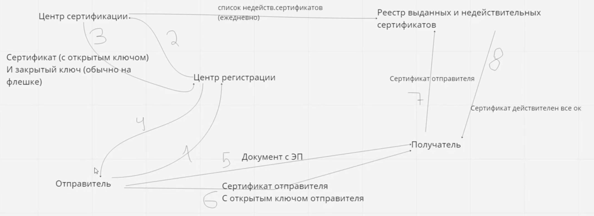
Давайте рассмотрим весь процесс создания, отправки и проверки документа, подписанного квалифицированной электронной подписью (КЭП), от начала до конца, используя в качестве примера программу “КриптоПро CSP” для работы с электронной подписью. Подготовка документа бухгалтером А Бухгалтер А подготавливает документ, который необходимо отправить бухгалтеру Б. Это может быть любой тип документа, требующий подтверждения подлинности и целостности, например, финансовый отчет. Создание электронной подписи 1. Генерация хеш-суммы: Бухгалтер А использует программу “КриптоПро CSP” для генерации хеш-суммы из документа. Хеш-сумма — это уникальная последовательность символов, получаемая в результате преобразования исходного текста документа специальным алгоритмом. 2. Подписание хеш-суммы: Затем бухгалтер А использует свой закрытый ключ, хранящийся на защищенном носителе (например, на специальном токене), чтобы зашифровать хеш-сумму, превращая ее в электронную подпись. Это действие также выполняется с помощью “КриптоПро CSP”. Отправка документа и подписи бухгалтеру Б Бухгалтер А отправляет электронный документ вместе с файлом электронной подписи бухгалтеру Б. Проверка документа бухгалтером Б 3. Получение и проверка сертификата подписи: При получении документа и подписи бухгалтер Б сначала проверяет сертификат подписи, который содержит открытый ключ бухгалтера А и подтверждает его личность. Для этого бухгалтер Б может использовать “КриптоПро CSP”, который позволяет проверить, выдан ли сертификат доверенным удостоверяющим центром и не истек ли срок его действия, и что документ действительно от бухгалтера А. 4. Расшифровка и проверка хеш-суммы: Далее бухгалтер Б использует открытый ключ из сертификата для расшифровки электронной подписи и получения из нее исходной хеш-суммы. После этого “КриптоПро CSP” генерирует новую хеш-сумму из полученного документа и сравнивает ее с расшифрованной хеш-суммой из подписи. 5. Подтверждение подлинности и целостности: Если хеш-суммы совпадают, это подтверждает, что документ не был изменен после подписания и подпись действительно принадлежит бухгалтеру А. Это гарантирует целостность и подлинность документа.TLS
Шифрование TLS 1.2 Transport Layer Security
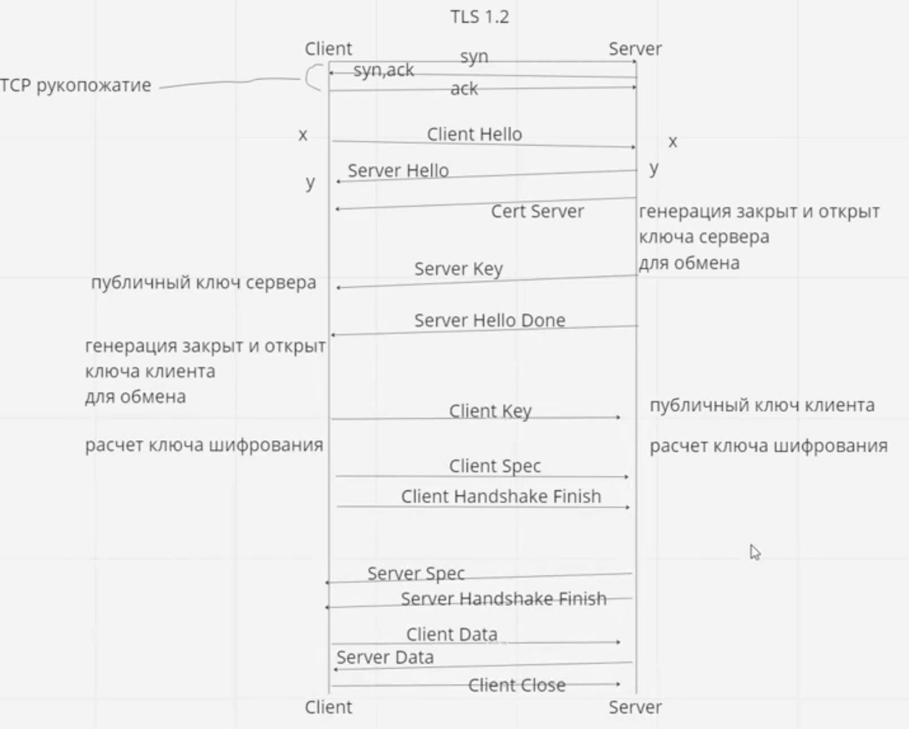
Сервер на своей стороне с помощью определенного алгоритма на основе случайных числе x и y генерирует открытый ключ, который отправляется клиенту и закрытый ключ сервера. Тоже самое делает клиент на своей стороне. Далее клиенты и сервер используют x, y, переденный открытый ключ второй стороны и свой закрытый ключ и получают ключи шифрования (за счет магии математики ключи шифрования на обоих сторонах получатся одинаковыми). В конце клиент отправляет в Client Handshake Finish хеш всех переданных до этого сообщений, чтобы сервер убедился, что никакой подмены не было и он до сих пор общается с клиентом.Шифрование TLS 1.3
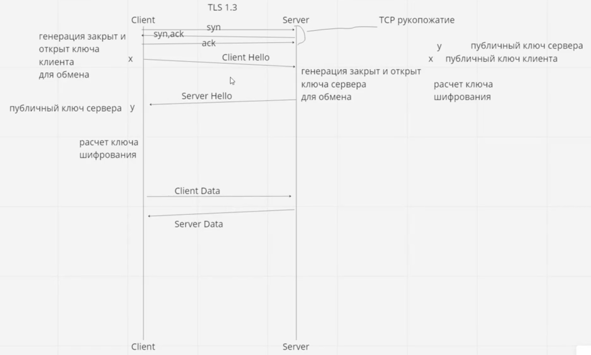
Аутентификация и авторизация
Идентификация - аутентификация - авторизация
Basic
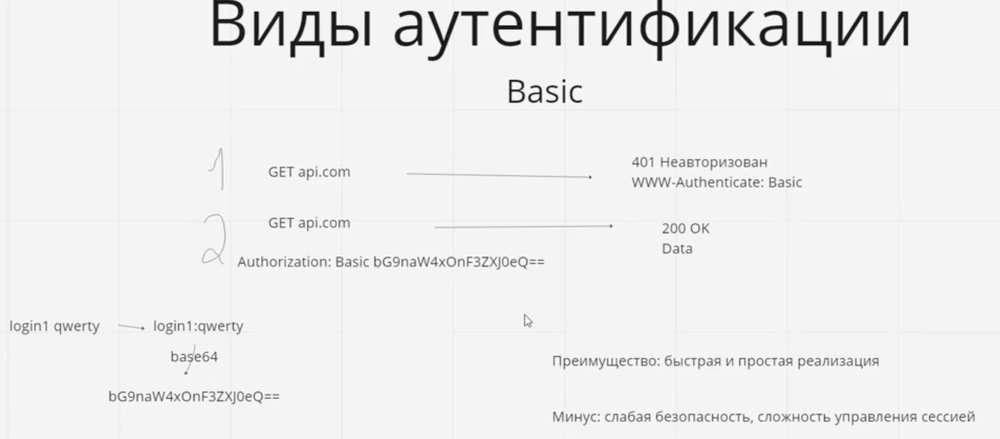
В случае basic auth логин и пароль просто кодируется с использованием base64API-Key
Используется в основном для тестирования (можно получить для работы с внешними сервисами - там получаешь API-ключ для тестирования, который сервис генерит уникально для каждого пользователя). Может быть передан в значении заголовка
Cookie
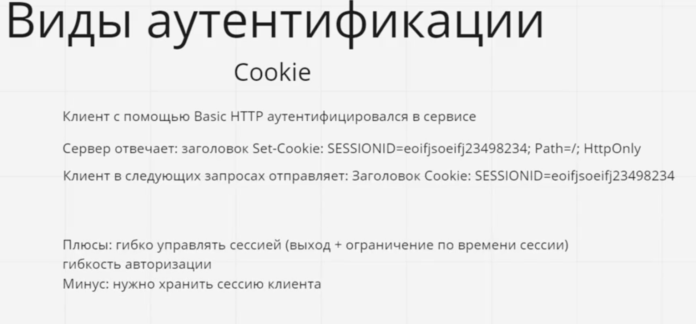
Сертификаты mTLS
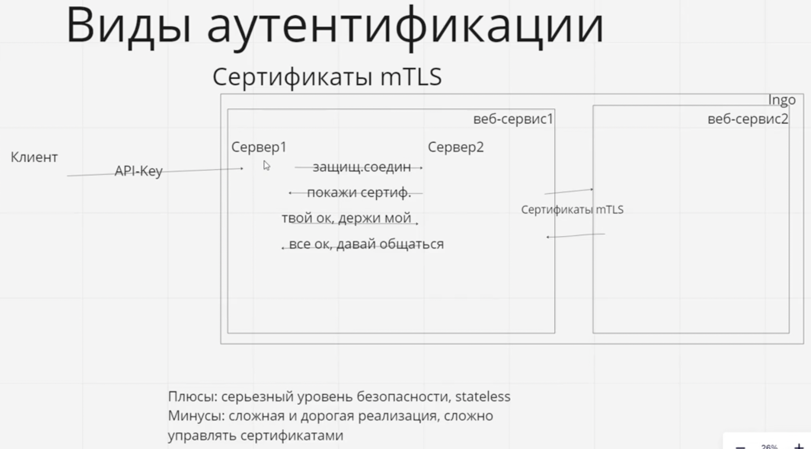
Клиенту выдавать mTLS сертификат - накладно, поэтому выдают серверам, которые должны безопасно общаться между собой.Сертификат mTLS выглядит, как и обычный сертификат TLS. Он также содержит такую информацию, как:
Субъект — кому выдан сертификат. Это может быть человек, организация или устройство.
Эмитент — центр сертификации (ЦС), который проверил и выдал сертификат.
Срок действия — дата выдачи и дата истечения срока действия сертификата.
Открытый ключ — ключ, связанный с субъектом сертификата, используемый для шифрования и цифровой подписи.
Алгоритм подписи — криптографический алгоритм, используемый для подписи сертификата эмитентом.
Серийный номер — уникальный номер, присваиваемый эмитентом для отличия сертификата от других.
Расширения — дополнительная информация о сертификате и его использовании, например, альтернативные имена субъектов (SAN) или ограничения на использование ключей.
Вот пример того, как может выглядеть сертификат в виде обычного текста (формат PEM, это текст в base64):
-----BEGIN CERTIFICATE-----
MIIDXTCCAkWgAwIBAgIJAJC1HiIAZAiIMA0GCSqGSIb3DQEBCwUAMEUxCzAJBgNV
BAYTAkFVMRMwEQYDVQQIDApTb21lLVN0YXRlMSEwHwYDVQQKDBhJbnRlcm5ldCBX
aWRnaXRzIFB0eSBMdGQwHhcNMTcwMzEwMTg1OTM3WhcNMTgwMzEwMTg1OTM3WjBF
……………………….
-----END CERTIFICATE-----
Bearer Token
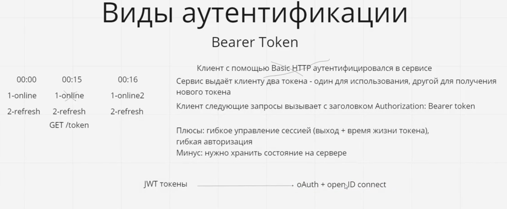
JWT Token
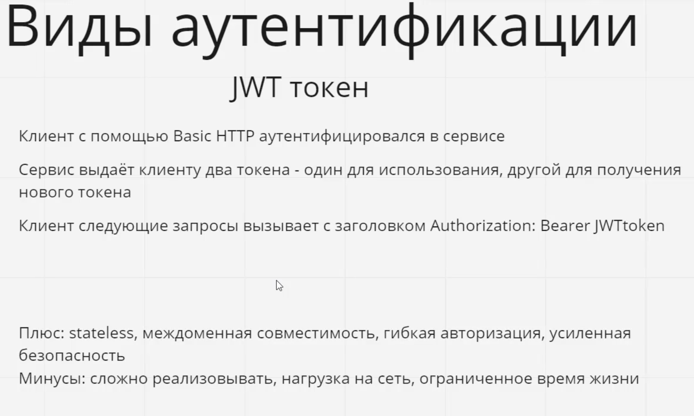
В JWT закладывается много информации по которой можно получать всю необходимую информацию по сессии (кому, когда выдан серт) и не хранить это информацию на сервере (тем самым обеспечивая принцип stateless).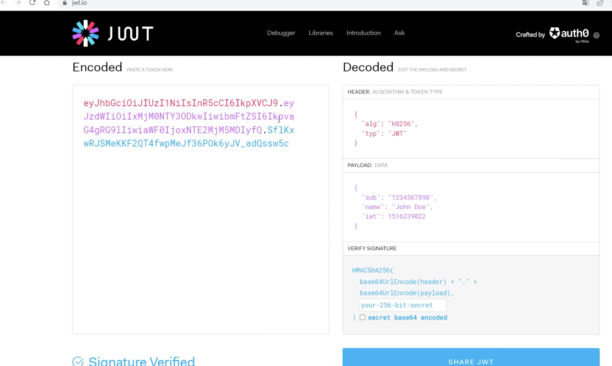
Если появляется новый сервис (сервис 2) - в нем не нужно с нуля прорабатывать всю логику аутентификации и авторизации. Можно просто поделиться закрытым ключом, которым сервис (сервис 1) подписывает JWT token, прежде чем его выдает.
инструменты_api https://www.jwt.io/
RBAC/ABAC
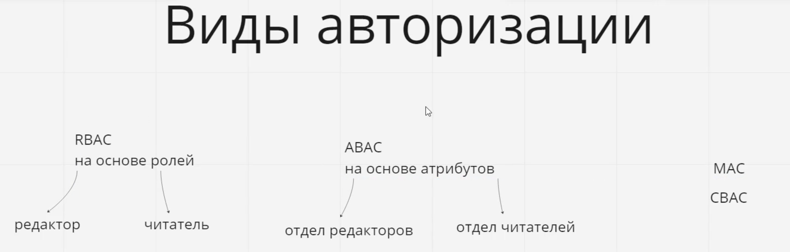
oAuth и OpenIDconnect + SSO
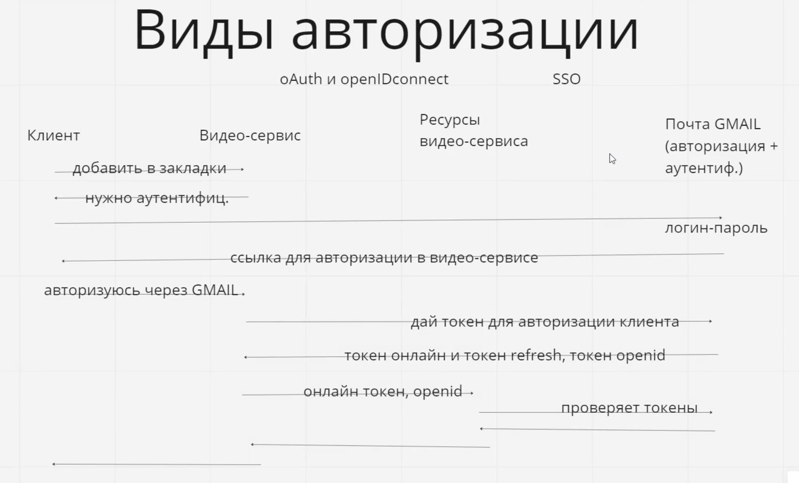
Токены online и refresh (которые выдаются при работе с oauth2) - это JWT токены.Многие уже использовали oauth2, не зная об этом. На многих сайтах (например adidas) есть возможность входа через Google. Но почему мы говорим, что oauth2 — это только протокол авторизации? Потому что никакой аутентификации на сайте adidas не происходит. Вы аутентифицируетесь один раз — в Google, а он уже выдает права на действия с вашим аккаунтом сайту adidas. Иногда это происходит и без вашего участия, например, если adidas будет добавлять информацию о покупках, которые вы сделали в оффлайн магазине.
По сути происходит делегирование авторизации, oauth2 и описывает этот протокол делегирования.
OpenIDconnect предназначен для аутентификации — чтобы понять, что конкретный пользователь является тем, кем представляется. Например, с помощью OpenID Adidas понимает, что зашедший пользователь — именно вы с аккаунтом Google. OpenIDconnect наряду с токенами online и refresh выдает токен openid (которые отвечает за аутентификацию).
SSO работает также как и oAuth только внутри компании
Меры безопасности
Общие правила
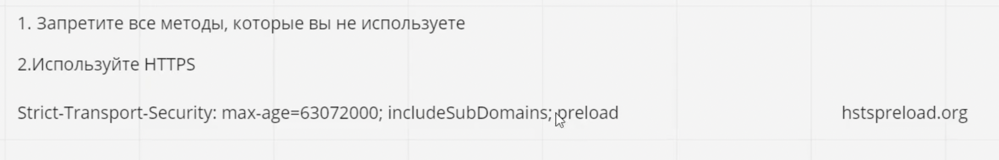
Правила endpoint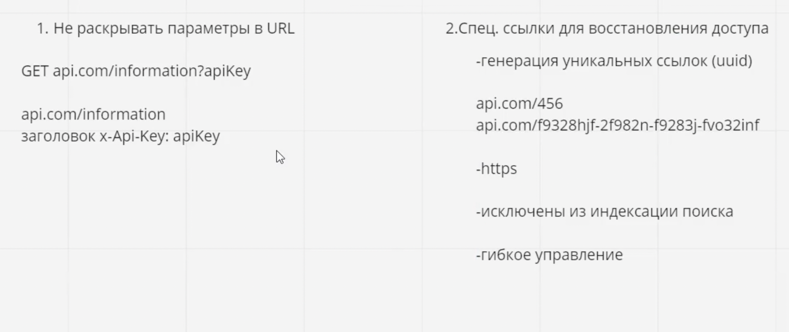
Cookie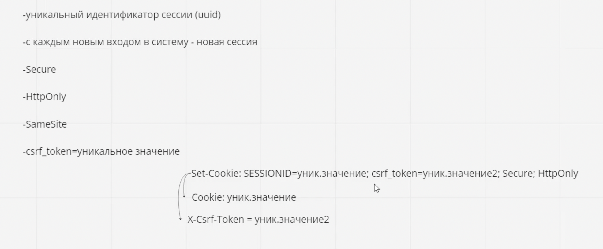
Java-script на клиенте получает значение csrf-token и он будет отправлять это значение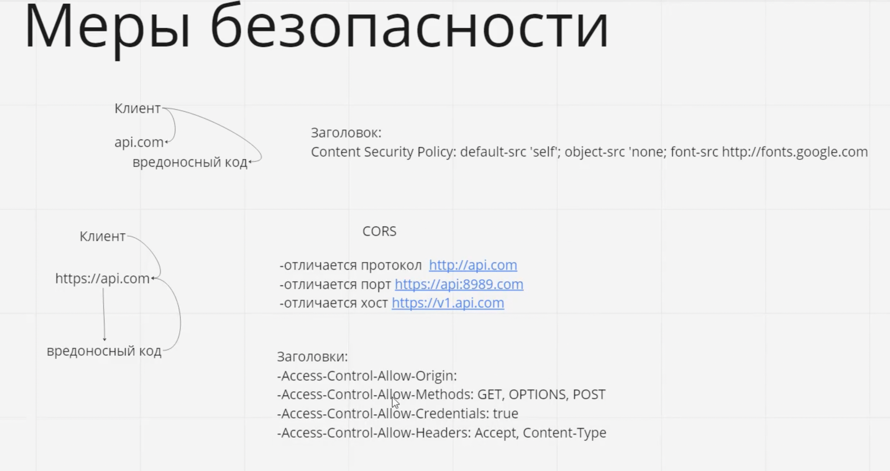
| Вопрос | Ответ |
|---|---|
| основная цель протоколирования запросов и ответов веб-сервиса | Мониторинг, отладка и обеспечение безопасности приложения |
| Какой заголовок HTTP можно использовать для предотвращения атак межсайтового скриптинга (XSS) в веб-приложении | Content-Security-Policy |
| Какой HTTP-заголовок используется для защиты веб-приложения от атак clickjacking (гарантирует, что их контент не будет встроен в другие сайты \ фреймы) | X-Frame-Options |
| Какой HTTP-заголовок позволяет серверу указать, каким источникам разрешен доступ к его ресурсам | Access-Control-Allow-Origin |
| Какой HTTP-заголовок можно использовать, чтобы заставить веб-браузер отправлять запросы только по HTTPS | Strict-Transport-Security |
| Что является лучшей практикой для хранения конфиденциальной информации в файлах журналов | Избегать хранения конфиденциальной информации в файлах журналов |
| Какой заголовок HTTP можно использовать, чтобы указывать браузеру принимать только типы данных, объявленные сервером, что снижает риск атак с подделыванием типов данных | X-Content-Type-Options |
Версионирование
Почему версионирование важно?
-
Поддержание обратной совместимости Одна из основных причин внедрения версионности в дизайн REST API — поддержание обратной совместимости. Мы не сразу обновляем API, а постепенно, чтобы клиентам не приходилось изменять код в своих приложениях-потребителях. При внесении изменений в API очень важно, чтобы существующие клиенты могли продолжать работать без сбоев.
Версионность позволяет разработчикам вносить обновления и улучшения в API, сохраняя поддержку старых версий. А клиенты получают возможность перейти на новую версию в своем собственном темпе. -
Облегчение четкой коммуникации Версионность помогает установить четкую связь между поставщиком API и клиентами, которые используют API. Четко указывая используемую версию API, клиенты могут легко понять, какие возможности и функциональность можно ожидать от API. Такая ясность помогает избежать путаницы и недопонимания между поставщиком API и его клиентами.
Что в принципе может меняться в нашем API?
- ендпоинты — нужно добавить новый или удалить старые, или поменять url существующего
- некритичные изменения
- добавление новых ендпоинтов
- критичные изменения
- изменение ендпоинтов
- удаление ендпоинтов
- некритичные изменения
- входные данные для API запросов — нужно добавить новые поля или удалить старые, или поменять существующие
- некритичные изменения
- добавление новых необязательных полей в входные данные
- критичные изменения
- добавление новых обязательных полей в входные данные
- изменение полей в входных данных
- удаление полей в входных данных
- некритичные изменения
- выходные данные от API запросов — нужно добавить новые поля или удалить старые, или поменять существующие
- некритичные изменения
- добавление новых полей в выходные данные
- критичные изменения
- изменение полей в выходных данных
- удаление полей в выходных данных
- некритичные изменения
- коды статуса и данные при ошибках
- критичные изменения
- изменение кодов ошибок
- изменение кодов статусов
- критичные изменения
- прочие изменения безопасности, согласованности формата данных и т. д. Одна из лучших стандартных практик — держать активными не более двух версий API для клиентов. Одна из них будет обратно-совместимой, то есть клиенты, перейдя на неё, смогут избежать сбоев и проблем. Другая версия — следующая, которая содержит критичные изменения. В таком случае клиенты должны сначала изменить свой код, а потом перейти на неё. Иначе будут сбои и проблемы.
Конкретнее на примере — начнём с того, что у вас есть версия API 1.0.
- Вы добавили некритичные изменения (добавление новых ендпоинтов, добавление новых необязательных полей в входные данные и добавление новых полей в выходные данные). После, по правилам семантичности версий, увеличили цифру в версии API — 1.1. Клиенты могут переходить на эту версию API без проблем, так как нет критичных изменений.(заметьте, у вас пока две активные версии API — 1.0 и 1.1.)
- Далее вы добавили некритичные изменения и уведомляете клиентов о выпуске API 1.2 и скором отключении 1.0.
- Таким образом, через некоторое время клиенты переходят на 1.1 (или сразу на 1.2), и у вас только две активные версии API — 1.1 и 1.2. (1.0 вы отключили)
- Далее вы решили добавить критичные изменения (изменение или удаление ендпоинтов, изменение или удаление полей данных, ИЗМЕНЕНИЯ В ОТВЕТАХ ОШИБКАХ И КОДОВ СТАТУСОВ). Вы готовы выпускать версию API 2.0 и уведомляете клиентов о выпуске 2.0 и скором отключении 1.1, и просите перейти всех на активные API (1.2 или сразу на 2.0)
- и т. д. по такому же принципу Таким образом, вы создаете фундамент для критичных изменений из релизов API с некритичными изменениями. У клиентов есть время адаптироваться и подключиться к вашим новым версиям API. Для некритичных изменений им не нужно сильно менять код, а для критичных — нужно. Запомните
Но как потребителям выбрать версию для использования? Как понять поставщику, какую версию мы предоставляем? Есть три стандартных варианта отображения версии API:
- В URL ендпоинта - api.com/v2/…
- В отдельном заголовке - Api-version:2
- В заголовке предоставления контента - Accept: application/json; version=2 Самый распространённый и лёгкий в реализации вариант - первый, рекомендуем использовать его.
Эффективное API
Сжатие и keep-alive
-
Для API на базе протокола HTTP есть вариант оптимизации, при котором не нужно менять проектирование API — сжатие. С помощью специальных заголовков можно управлять тем, как сервер будет сжимать данные до отправки их по сети. Пример заголовка в запросе клиента: Accept-Encoding: gzip, deflate, br (указываем, что принимаем сжатие с разными видами технологий).
Пример заголовка в ответе от сервера: Content-Encoding: gzip (сервер выбрал технологию сжатия и применил её, уменьшив вес тела ответа) -
Также эффективно использовать постоянное соединение HTTP. Но, как мы с вами разбирали, оно по умолчанию используется в http 1.1, поэтому ничего дополнительно делать не нужно(не нужно использовать Connection: keep-alive как в 1.0 HTTP).
BATCH запросы
BATCH, пакетные запросы, в REST API относятся к практике объединения нескольких запросов API в один запрос. Такой подход дает ряд преимуществ, особенно в ситуациях, когда минимизация количества запросов, снижение задержки и экономия пропускной способности имеют решающее значение.
Пакетные запросы не только позволяют отправлять несколько запросов за один раз, но и предоставляют ответы на эти запросы, объединенные в один ответ. Мы будто складываем запросы в одну коробку и только потом отправляем. То есть получаем запросы не по частям, а в одной коробке, и потом сами разбираем их.
Кеширование
HTTP предоставляет встроенные механизмы кэширования. Все, что вам нужно сделать, это включить некоторые дополнительные заголовки исходящего ответа от сервера и в некоторых случаях выполнить небольшую проверку при получении некоторых заголовков запроса от клиента.
Мы будем говорить про кеширование на стороне браузера (клиента), а не на стороне промежуточных серверов или целевого сервера, куда идут запросы от клиента. Потому что на стороне браузера кеширование обычно управляется механизмами HTTP, а все остальные требуют специфичных программ и индивидуальной настройки в зависимости от архитектуры веб-приложения.
Браузер умеет: получать ответы от сервера на свои запросы, сохранять ответы в свой кеш, выбирать кешировать или нет (на основе заголовков ответов от сервера).
Варианты кеширования
- Не кешировать — конфеденциальные данные/капча для проверки и похожие данные/всё, что часто меняется. Ставим заголовок в ответе от сервера(то есть даём инструкцию браузеру) — Cache-Control: private, no-cache, no-store
- Кеширование на время — данные, для которых известно время изменения.
Ставим заголовок к ответу от сервера — Cache-Control: max-age=3600, must-revalidate.
Это значит - можно брать ответ из кеша в течение 3600 секунд с этого времени. - Кеширование с валидацией — когда мы хотим закешировать данные, но мы не знаем время их изменения.
Как реализуется? С помощью условных запросов.- сервер отвечает с заголовком Cache-Control: no-cache и Etag: уникальный ID (может быть хеш какого-то ресурса).
- потом клиент хочет снова запросить эти данные, но браузер вместо полноценного запроса посылает условный, то есть GET с заголовком (или даже HEAD, еще условным может быть PUT при изменении)
If-None-Match: УНИКАЛЬНЫйID, например “33a64df551425fcc55e4d42a148795d9f25f89d4” - если значение ресурса на клиенте If-None-Match от клиента = текущему значению ресурса Etag на сервере
(ведь ресурс мог измениться за это время, а мог и остаться прежним) - тогда сервер отвечает без тела, но со статусом 304 Not Modified
- клиент по статуса 304 понимает, что ресурс не менялся (не стал новым) и его можно брать из кеша
Если же ресурс изменился (If-None-Match от клиента !=(не равно) текущему Etag на сервере), тогда сервер отдает ресурс в теле ответа с заголовками Cache-Control: no-cache и Etag: новый уникальныйID
- Кешировать навсегда и везде (в том числе на прокси-серверах) — можно что-то совсем неуникальное и вечное…
Ставим заголовок в ответ от сервера - Cache-Control: max-age=31536000, public, immutable
Управление кешем
Важно не только уметь сохранять в кеш данные, но и управлять ими. Важно, чтобы всю новую информацию клиент видел сразу и не видел устаревшие данные на сайте.
Когда мы определили, что можем кешировать и каким образом, нужно определиться со стратегией управления этим кешем.
Тут все очень индивидуально, особенно, если у вас есть кеш на сервере. Но вот один из вариантов управления кешем в браузере клиентов:
- Кешируйте данные навсегда Cache-Control: max-age=31536000, public, immutable
При этом дайте своим файлам уникальные имена с версионностью, например — style1a.css - Когда вы внесете изменение в style1a.css, не нужно думать о том, как удалить из кеша клиента старую версию или как сделать так, чтобы клиент увидел новый файл.
Просто переименуйте новую версию файла в style2b.css! - При запросе к вашему сайту эти данные будут новыми для браузера клиента. Он их загрузит, а не будет искать в кеше.
И не забудьте для этого файла снова добавить кеширование: Cache-Control: max-age=31536000, public, immutable. Ведь в следующий раз при обновлении вы снова сделаете новый файл style3c.css, и вам нечего бояться.
- Если произошло изменение всего веб-сервиса (допустим, физически переехали в новые сервера), и нужно удалить всю информацию из кеша браузеров клиентов, можно воспользоваться таким заголовком:
Clear-Site-Data: “cache”, “cookies”, “storage”, “executionContexts”
Но не факт, что это всегда будет чётко работать.
Лучше заранее подумать о том, как вы будете управлять кешем, и не сохранять все данные подряд.
Оптимизация данных и предзагрузка
- Вы можете поставить в запросе заголовок Save-Data: on в запросе клиента к серверу сигнализирует о том, что пользователь хочет использовать меньше данных. Ресурсы, обслуживаемые HTTP, могут преобразовываться прокси-серверами для сохранения данных в определенных браузерах. HTML, CSS и JS минимизируются, медиа сильно сжимаются.
- Заголовок Link rel=preload в запросе к серверу говорит о том, что нужно в приоритете предзагрузить конкретный элемент, чтобы он отображался. Используйте для критичных элементов.
Как стандартно реализуется передача файла в REST API У вас есть стандартное клиент-серверное веб-приложение: Frontend в браузере - Backend сервер - База данных с файлами.
Задача - отдать файл клиенту для скачивания, как это реализовать? Один из способов - передача с помощью двоичных данных.
Для передачи файла с бэкенда на фронтенд и последующей отправки его клиенту, мы можем использовать двоичные данные, которые будут передаваться в виде потока байтов. Для этого необходимо правильно настроить HTTP-заголовки на бэкенде и фронтенде, чтобы обеспечить корректную передачу и обработку файла.
- Запрос фронтенда к бэкенду
Когда фронтенд отправляет запрос к бэкенду для получения файла, он должен указать, что ожидает получить двоичные данные, используя заголовокAccept. Например, если клиент хочет получить изображение в формате PNG, он может использовать следующий заголовок:
Accept: image/png - Ответ бэкенда с файлом
Бэкенд забирает нужный файл из базы данных и готовится отдать его в HTTP ответе (на запрос фронтенда).
Когда бэкенд готовит HTTP ответ с файлом, он должен установить несколько HTTP-заголовков, чтобы корректно передать двоичные данные и информацию о файле:-
Content-Type: Этот заголовок определяет MIME-тип файла, который передается. Например, для изображения в формате PNG, установитеContent-Type: image/png. Content-Disposition: Этот заголовок указывает, как клиент должен обрабатывать полученный файл. Если вы хотите, чтобы файл был сохранен на компьютере пользователя, установите заголовок в значениеattachment, а также добавьте имя файла с помощью параметраfilename. Например:
Content-Disposition: attachment; filename="example.png"Content-Length: Этот заголовок указывает размер файла в байтах, что может быть полезно для отслеживания процесса загрузки файла клиентом.
-
- Обработка файла на фронтенде
При получении (в ответ на запрос) файла от бэкенда, фронтенд должен обработать двоичные данные(это делается обычными функциями в языке JavaScript) и предоставить их клиенту. Готово!
Как проектировщики API, вы должны знать стандартные ограничения на размеры элементов HTTP запросов. Вот они:
- строка URL — 8kb max
- заголовки - 8kb max
- тело запроса - 1mb max Если вы их превысите, сервер просто не сможет дать вам ответ и вернет ошибку.
Это стандартные ограничения, но при вашем проектировании нужно отталкиваться от типа конкретного веб-сервера, у него могут быть свои значения.
Ограничение скорости и регулирование — продвинутые темы в проектировании REST API, которые могут помочь управлять трафиком API и защитить его от чрезмерного использования или злоупотребления. Если слишком много запросов будет идти к API, сервер может просто не справиться.
Рассмотрим основные практики:
- Регулирование на уровне количества вызовов API
Можно настроить сервер так, чтоб он ограничил количество запросов, которые могут быть сделаны к API в течение какого-то времени. Ограничение количества запросов может быть основано на различных критериях, таких как количество запросов в целом в час, или количество запросов от определенного IP-адреса или конкретного пользователя (допустим, вы узнаёте его по x-api-key).
Ограничение количества запросов позволяет предотвратить перегрузку API слишком большим трафиком или защитить его от использования в злонамеренных целях, например, от DDOS атак.
Как это реализуется?
Когда клиент превышает лимит запросов, вы отвечаете ошибкой 429 Тоо Many Requests и заголовками:
- X-Rate-Limit-Limit — количество разрешенных запросов в текущем периоде (всего)
- X-Rate-Limit-Remaining — количество оставшихся запросов в текущем периоде
- X-Rate-Limit-Reset — количество секунд, оставшихся в текущем периоде Так клиент сможет понять, через какое время он может возобновить запросы, и как в целом ему выстроить работу с вами на основе количества разрешенных запросов в принципе.
- Ограничение скорости обработки запросов на уровне вашего приложения, когда запрос уже получен по API Часто используется для защиты внутренних систем от перегрузки при внезапном наплыве запросов или для приоритетной обработки срочных запросов. Может быть реализовано различными способами, например, путем добавления задержек между запросами или пакетной обработки запросов.
Как это реализуется? Разработчики приложения используют конкретные алгоритмы, которые нужно рассматривать для каждого случая отдельно.
Если приложение построено на основе микросервисов, полезно не запутаться в актуальной версии сервиса и его состоянии. Для этого для каждого микросервиса в API реализуют методы:
- /health - состояние сервиса (доступен\недоступен)
- /version - (версия сервиса)
- /metrics - (технические метрики, например свободная память)
Это внутренние API, которые не должны быть доступны внешним потребителям.
Они предназначены только для ваших инженеров, которые в случае сбоев могут быстро среагировать на проблему и исправить её.
Документирование API
JSON Schema JSON схема — это мощный инструмент для валидации структуры и данных JSON-документов. Она определяет формат и тип данных, которые должны быть в JSON объекте, а также может устанавливать правила для данных, такие как обязательные поля, ограничения на длину строки, числовые ограничения, регулярные выражения для проверки строк и многое другое. Это позволяет разработчикам обеспечивать точность и целостность данных в их приложениях, особенно при обмене данными между клиентом и сервером (проверяется json на соответствие json schema, подобно xml который проверяется на соответствие xsd). JSON Schema может содержать в себе:
- Определения типов: JSON схема позволяет указывать типы данных для значений в JSON объекте, такие как
string,number,array,boolean,object, илиnull. - Валидация свойств: Вы можете определить, какие поля являются обязательными (
required), их типы данных, минимальную и максимальную длину для строк (minLength,maxLength), минимальные и максимальные значения для чисел (minimum,maximum) и так далее. - Вложенные схемы: JSON схемы могут содержать вложенные схемы для описания объектов в массивах или вложенных объектов.
- Перечисления (
enum): Вы можете определить набор допустимых значений для поля. - Множественные типы: Поле может быть определено как допускающее значения нескольких типов, например,
stringилиnull. - Форматы: Для строк можно указать специальные форматы, такие как
date-time,email,uriи др., что позволяет дополнительно валидировать формат содержимого.
инструменты_api Валидатор JSON на соответствие вашей JSON схеме вы можете тут - https://www.liquid-technologies.com/online-json-schema-validator
инструменты_api Валидатор то что именно ваша JSON схема написана правильно - https://www.jsonschemavalidator.net/
Пошаговая реализация схемы для JSON
Личное/Инсточники мудрости/Курсы_обучения/Stepic/Пошаговая реализация схемы для JSON
YAML
YAML (YAML Ain’t Markup Language) — это удобный для человека формат сериализации данных, используемый для конфигурационных файлов и обмена данными между системами. Он часто применяется в различных инструментах разработки(и в Swagger), системах управления конфигурациями и в DevOps для создания конфигурационных файлов, таких как Docker или Kubernetes. Документация тут - https://yaml.org/
Особенности:
- Читаемость для человека: YAML разработан так, чтобы быть максимально понятным и читаемым для человека, даже за счет небольшого увеличения объема файла по сравнению с JSON.
- Иерархия данных: Иерархическая структура данных в YAML представлена через отступы, используя пробелы (табуляция не допускается).
- Переносимость между языками: YAML предназначен для легкого преобразования в стандартные типы данных, такие как строки, числа, массивы и словари в различных языках программирования.
Типы данных
- Строки: обычно представлены без кавычек, но могут быть заключены в одинарные или двойные кавычки для включения специальных символов или для ясности.
- Числа: целые и с плавающей точкой.
- Логические значения:
trueиfalse. - Null: представлено ключевым словом
null. - Списки (Массивы): начинаются с дефиса и пробела (
-). Каждый новый элемент списка начинается с новой строки с тем же уровнем отступа. - Словари (Объекты): ключ-значение, разделенные двоеточием и пробелом (
key: value). Ключи уникальны в пределах словаря. - Многострочные строки: блоки текста могут быть представлены с сохранением переносов строк (
|) или как единая строка, заменяя переносы пробелами (>).
Примеры:
- Строка и число
name: John Doeage: 30 - Массивы
languages:- English- French - Вложенные словари (объекты)
contact:email: [john.doe@example.com](mailto:john.doe@example.com)address:city: ParispostalCode: 75000 - Многострочные строки и смешанные данные
description: |This is a multi-line string.Second line of the string.mixedList:- item1- key: value- 30Проверить валидность можно тут - https://yamlchecker.com/ Можно конвертировать json в yaml - https://www.json2yaml.com/
Применение REST API
Преимущества и недостатки REST API
Преимущества:
- Масштабируемость. Одним из наиболее значительных преимуществ REST API является присущая им масштабируемость. Из-за природы REST без сохранения состояния серверам не нужно хранить информацию о состоянии клиента между запросами, что снижает потребление ресурсов и позволяет системе обрабатывать большее количество клиентов.
- Простота: API-интерфейсы REST просты в реализации и понимании, поскольку они используют стандартные методы HTTP (GET, POST, PUT, DELETE) и основаны на общепринятых веб-соглашениях. Эта простота позволяет разработчикам легко взаимодействовать с веб-службами RESTful и ускоряет процесс разработки.
- Кэшируемость: API-интерфейсы REST поддерживают кэширование, что позволяет клиентам временно сохранять ответы для повторного использования. Эта функция снижает нагрузку на серверы и повышает общую производительность и скорость отклика системы, особенно для часто запрашиваемых данных.
- Независимость от языка и платформы: REST API основаны на стандартных веб-технологиях, таких как HTTP, URL и JSON или XML, что делает их совместимыми практически с любым языком программирования и платформой. Эта гибкость позволяет разработчикам создавать приложения на предпочитаемых ими языках и обеспечивает беспрепятственную интеграцию между различными системами.
- Совместимость: API-интерфейсы REST обеспечивают связь между различными системами, позволяя им работать вместе и обмениваться информацией. Эта функциональная совместимость облегчает разработку распределенных приложений и продвигает модульную сервис-ориентированную архитектуру(микросервисы и т.д.).
Недостатки:
- Ограниченная функциональность: API REST следуют строгому набору ограничений, которые иногда могут ограничивать их функциональность по сравнению с другими парадигмами API, такими как SOAP или gRPC. Например, REST изначально не поддерживает обмен данными в реальном времени, что делает его менее подходящим для приложений, требующих мгновенных обновлений или взаимодействий, управляемых событиями (рассмотрим инструменты для событийных API в следующем модуле).
- Задержка: из-за природы REST без сохранения состояния клиенты должны включать всю необходимую информацию в каждый запрос, что может увеличить объем передаваемых данных и привести к увеличению задержки. Это может быть особенно проблематично для приложений с большими объемами полезных данных или приложений, требующих частого обмена данными между клиентом и сервером.
- Непоследовательность в дизайне API: хотя REST предоставляет набор руководящих принципов для проектирования веб-сервисов, он не обеспечивает строгого стандарта. В результате разработчики могут по-разному интерпретировать эти рекомендации, что приводит к несоответствиям в дизайне API и затрудняет взаимодействие клиентов с различными веб-сервисам RESTful.
- Проблемы безопасности: REST API полагаются на базовый HTTP-протокол для обеспечения безопасности, чего может быть недостаточно для некоторых случаев использования. Хотя SSL/TLS можно использовать для шифрования данных при передаче, разработчик должен реализовать дополнительные меры, такие как аутентификация и авторизация, что может усложнить систему.
REST API, SOAP, GraphQL или gRPC
Выбор зависит от конкретных требований и ограничений вашего приложения. Каждая из этих технологий имеет свои преимущества и недостатки, и понимание контекста вашего проекта поможет вам принять правильное решение.
Сейчас в основном используется REST API, но вот причины, по которым вам можно задуматься о переходе на другую технологию:
- JSON-RPC - у вас очень простое API без необходимости дальнейшего развития, нет смысла усложнять его различными методами и механиками REST
- SOAP - у вас большие данные которые должны быть строго типизированы и нужна повышенная безопасность, а также работаете со старыми legacy системами
- GraphQL - у вас очень много разных данных, из которых нужна гибкая выборка для множества различных клиентов (компьютер, телефон и т.д.)
- gRPC - инфраструктура вашего приложения разрослась до десятков микросервисов и вам нужно выстроить между ними высокопроизводительную связь с малой задержкой и поддержку обновлений в реальном времени, и вы готовы в это инвестировать
Синхронные и асинхронные запросы
| Атрибут | Синхронный API | Асинхронный API | |
|---|---|---|---|
| Выполнение | Ожидает ответа | Продолжает выполнять другие задачи без ожидания ответа | |
| Использование ресурсов систем | Менее эффективно, ресурсы могут быть не полностью использованы из-за ожидания | Более эффективное использование ресурсов, так как задачи выполняются параллельно | |
| Удобство пользователя | Может привести к плохому опыту использования, если время ответа долгое | Лучший опыт использования, так как клиент может выполнять другие задачи во время ожидания ответа | |
| Сложность кода | Проще для реализации и понимания, последовательный поток выполнения | Более сложное выполнение из-за нелинейного потока выполнения | |
| Масштабируемость | Менее масштабируемый, так как ожидание ответов может стать узким местом | Более масштабируемый, так как несколько запросов могут быть обработаны одновременно | |
| Отзывчивость | Медленнее, так как клиент должен ждать ответа перед тем, как продолжить | Быстрее, так как клиент не должен ждать и может выполнять другие задачи | |
| Обработка ошибок | Легче обрабатывать ошибки, так как выполнение последовательное | Более сложная обработка ошибок из-за нелинейного выполнения | |
| Задержка и непредсказуемость | Более предсказуемое поведение во время сбоев | Хотя асинхронные API могут повысить общую производительность системы, они также могут вносить задержки и непредсказуемость в определенных сценариях. Например, если система сильно загружена или имеются сетевые проблемы, время выполнения асинхронного запроса может быть более длительным и непостоянным, чем синхронного. | |
| Согласованность и упорядоченность данных | Меньше проблем с несогласованными данными | Асинхронные API могут создавать потенциальные проблемы с согласованностью и упорядоченностью данных, поскольку различные запросы могут обрабатываться в разное время, что приводит к неожиданным результатам. Для решения этих проблем разработчикам необходимо реализовать механизмы обеспечения согласованности данных и правильного упорядочивания операций (мы рассмотрим их в отдельном уроке) | |
| Применимость | Идеально подходит для простых, маломасштабных приложений или ситуаций, когда время ответа постоянно короткое | Лучше подходит для сложных, крупномасштабных приложений или ситуаций, когда взаимодействие в реальном времени или различное время ответа являются ключевыми факторами | |
| Примеры технологий | Запросы REST API или в стилях RPC | WebSockets, Server-Sent Events, очереди сообщений, Webhooks, REST API (callback, Polling, Long Polling) |
Синхронные запросы
- для финансовых операций
- для зависимых между собой действий
Карта асинхронных технологий.
Механизмы на основе HTTP:
- Callback (обратный вызов): техника, при которой клиент предоставляет URL или функцию для вызова сервером, когда ответ будет готов. Это позволяет клиенту продолжить выполнение, не дожидаясь ответа сервера.
- Polling (опрос): клиент неоднократно посылает запросы на сервер через регулярные промежутки времени, чтобы проверить наличие обновлений. Это может быть неэффективно, так как при отсутствии обновлений генерируются ненужные запросы.
- Long Polling (длительный опрос): аналогично опросу, но сервер удерживает запрос открытым до тех пор, пока не появятся новые данные для отправки. Это уменьшает количество ненужных запросов и обеспечивает работу в режиме реального времени.
Отдельные механизмы:
- Webhooks: механизм, позволяющий серверу уведомлять клиента о конкретных событиях путем выполнения HTTP-запроса к заранее определенной конечной точке клиента. Webhooks обеспечивает асинхронную связь между системами в реальном времени без необходимости опроса или длительных соединений.
- WebSockets: протокол, обеспечивающий полнодуплексную двунаправленную связь между клиентом и сервером через одно долгоживущее соединение. Он позволяет передавать данные в режиме реального времени, уменьшая задержки и улучшая качество работы пользователей.
- События, отправляемые сервером (SSE): технология, позволяющая серверу отправлять клиентам обновления в режиме реального времени через одно HTTP-соединение. В отличие от WebSockets, SSE является однонаправленной (сервер-клиент), что делает ее подходящей для сценариев, в которых только сервер должен передавать обновления клиенту.
Брокеры очередей сообщений: Очереди сообщений (например, RabbitMQ, Apache Kafka) - это промежуточное программное обеспечение, которое обеспечивает асинхронную связь между распределенными системами. Они разделяют производителей и потребителей, позволяя им работать независимо друг от друга.
Callback, Polling, Long Polling
Механизмы на основе HTTP популярны для реализации асинхронного поведения в веб-приложениях. Они используют различные техники для достижения неблокирующего взаимодействия между клиентом и сервером.
Их преимущество в том, что вы не должны дополнительно реализовывать какие-то другие протоколы или технологии. Вы просто используете HTTP протокол чуть иначе.
Callback
Polling
Long Polling
Сравнение асинхронных механик
Сравним механики асинхронного HTTP API - Callback, Pooling, Long Pooling.
- Сложность реализации
- Обратные вызовы: умеренная, поскольку они требуют настройки способа передачи функции обратного вызова или URL и обработки ответа.
- Опрос: простая, поскольку он включает только обычные HTTP-запросы и не требует специальной конфигурации сервера.
- Длительный опрос: умеренная, поскольку требует от сервера удерживать запросы открытыми и управлять тайм-аутами.
- Задержка
- Обратные вызовы: низкая, так как ответ поступает непосредственно в момент готовности.
- Опрос: высокая, так как клиенту приходится ждать следующего интервала опроса, чтобы получить обновления.
- Длительный опрос: от низкой до умеренной, так как сервер задерживает запрос до получения новых данных, уменьшая задержку по сравнению с обычным опросом.
- Нагрузка на сервер
- Обратные вызовы: от низкой до умеренной, так как серверу нужно отвечать только тогда, когда данные готовы.
- Опрос: высокая, так как клиент многократно посылает запросы даже при отсутствии новых данных.
- Длительный опрос: умеренная, так как сервер держит запросы открытыми, что может потреблять ресурсы сервера.
- Обновления в реальном времени
- Обратные вызовы: хорошо, так как ответ поступает сразу же, как только он готов.
- Опрос: плохо, так как обновления получаются только через заданные интервалы времени.
- Длительный опрос: хорошо, поскольку сервер отправляет обновления, как только появляются новые данные.
Примеры полезных приложений для каждой технологии:
- Обратные вызовы
- Погодное приложение, которое запрашивает обновления погоды и оповещения от стороннего API. Обратный вызов может использоваться для обработки обновлений и предупреждений сразу после их получения.
- Сайт электронной коммерции, который отправляет запросы на API платежного шлюза для обработки платежей. Обратный вызов может обрабатывать подтверждения платежей и ошибки по мере их возникновения.
- Опрос
- Простое приложение-агрегатор новостей, которое получает обновления из различных источников через регулярные промежутки времени. Опрос можно использовать для получения новых статей с фиксированной частотой.
- Панель мониторинга системы, которая запрашивает показатели здоровья и производительности сервера. Опрос можно использовать для обновления приборной панели через фиксированные промежутки времени, показывая самые последние данные.
- Длительный опрос
- Приложение для чата, которое требует общения между пользователями практически в режиме реального времени. Длительный опрос может использоваться для удержания запроса открытым до появления новых сообщений, что снижает задержку по сравнению с обычным опросом.
- Сайт обновлений спортивных результатов в реальном времени, который показывает результаты и обновления текущих игр. Длительный опрос может быть использован для доставки обновлений в реальном времени, как только они появляются, не перегружая сервер запросами.
Какие основные ограничения у рассмотренных нами технологий?
- Одной из основных проблем обратных вызовов является возможность возникновения “ада обратных вызовов”, когда требуется несколько вложенных обратных вызовов, что усложняет сопровождение и отладку кода. Кроме того, при использовании URL-адресов обратного вызова, проблемы безопасности и необходимость в соответствующей инфраструктуре могут добавить сложности системе.
- Опрос, с другой стороны, страдает от неэффективности с точки зрения задержки и нагрузки на сервер. Клиенты постоянно отправляют запросы на серверы, независимо от того, доступны ли новые данные, что приводит к ненужному трафику и нагружает ресурсы сервера.
- Длительный опрос решает некоторые из этих проблем, удерживая запросы открытыми до получения новых данных, тем самым обеспечивая обновление в реальном времени. Однако длительный опрос по-прежнему требует от сервера управления несколькими открытыми соединениями, потребляя ресурсы и увеличивая сложность.
Эти ограничения проложили путь для более эффективных и масштабируемых технологий, таких как Webhooks, WebSockets и SSE.
Webhooks позволяет улучшить связь, управляемую событиями, когда сервер может отправить уведомление на заранее определенный URL обратного вызова при наступлении события. Это устраняет необходимость в постоянном опросе и уменьшает задержку, что делает их идеальными для приложений, требующих обновлений в реальном времени.
WebSockets и SSE, с другой стороны, обеспечивают двунаправленные и однонаправленные каналы связи, соответственно. Они устанавливают постоянные соединения между клиентами и серверами, обеспечивая обновления в реальном времени с меньшей задержкой и меньшей нагрузкой на сервер по сравнению с Polling и Long Polling. Кроме того, WebSockets поддерживает как текстовые, так и двоичные данные, а SSE специально адаптирован для отправки обновлений в реальном времени от сервера к клиенту.
Webhook
инструменты_api https://webhook.site Платный инструмент, но есть базовые бесплатные возможности. При старте работ мы получаем уникальную ссылку - к ней далее будет обращаться webhook-провайдер.
WebSocket
WebSocket обменивается данным в двоичном формате, что более эффективнее http. Из-за необходимости поддерживать постоянное соединение - это может потреблять больше ресурсров сервера (что повлечет увеличение инфраструктуру)
инструменты_api https://socketsbay.com Для тестирования работы websockert
SSE (Server-Sent Events)
Пример работы SSE на примере данных фондового рынка - когда пользователь заходит на сайт его браузер устанавливает SSE соединение с сервером. После установки соединение сервер отправляет данные о фондовом рынке при каждом обновлении и соответствующим образом обновляет отображаемые данные инструменты_api html5.scientiamobilce.com Для тестирования работы websockert
Эффективность API
Рассмотрим повышение эффективности ассинхронных API.
Retry
Повторная попытка (Retry) - это процесс повторной попытки выполнить неудачную операцию в надежде на успешный результат. Повторные попытки необходимы в ситуациях, когда операция, например, запрос API, может завершиться неудачей из-за временных проблем, таких как проблемы с подключением к сети, перегрузка сервера или другие временные ошибки.
Повторные запросы помогают повысить надежность и устойчивость приложения, предоставляя ему возможность автоматически восстанавливаться после таких временных сбоев. То есть мы не просто отображаем ошибку клиента, а пытаемся автоматически направить запрос еще раз для получения результата. Хотя мы можем говорить о том что retry – это просто повторная попытка, в том числе и от клиента вручную (когда он попробовал руками снова направить запрос).
Как эффективно управлять повторными попытками?
- Предусмотреть механизм повторных запросов в самом API: в некоторых случаях может быть полезно включить встроенный механизм автоматических повторных запросов в API. Это поможет более эффективно управлять повторными попытками и разгрузить часть логики повторных ручных попыток от клиента.
- Используйте задержку между повторами: когда вам необходимо автоматически повторить неудачный запрос, использование задержки между повторами предотвращает перегрузку сервера несколькими повторными запросами подряд. Он предполагает постепенное увеличение времени ожидания между повторными попытками. Что делать? Начинайте автоматические повторы с короткой задержки и постепенно увеличивайте время ожидания с каждой попыткой повтора (экспоненциально: через 5 секунд повторили, через 25 секунд, через 125…. и т.д.).
- Использование Jitter - это техника, используемая для внесения случайности во время ожидания между повторными попытками при решении проблем, связанных с сетью или сервером. Основная цель джиттера - распределить повторные попытки от нескольких клиентов более равномерно и не дать им перегрузить сервер.
Представьте, что несколько клиентов одновременно пытаются подключиться к серверу. Если все они используют фиксированное время ожидания между повторными попытками, то, скорее всего, они будут отправлять свои запросы одновременно, что приведет к задержке и, возможно, перегрузке сервера. Это может вызвать еще больше проблем и замедлить процесс восстановления как для сервера, так и для клиентов.
Что делать? Рассмотреть добавление джиттера. Таким образом, вы делаете время ожидания между повторными попытками более непредсказуемым. Это означает, что попытки повторных попыток каждого клиента будут немного отличаться от остальных, что поможет более равномерно распределить нагрузку на сервер. В результате сервер с меньшей вероятностью будет перегружен внезапным всплеском запросов, а у клиентов будет больше шансов успешно подключиться.
Повторять только тогда, когда это необходимо: не все ошибки следует повторять. Например, ошибки клиента (например, 400 Bad Request) обычно указывают на проблему с самим запросом, и повторная попытка не приведет к успешному ответу (или бизнес ошибка, как отсутствие товара или денег).
- Что делать? Разрешите автоматический повтор запроса (или если клиент сам повторяет — то разрешите повторную отправку) только тогда, когда возникают ошибки сервера (например, 500 Internal Server Error) или сетевые проблемы.
Установите максимальный лимит ручных и автоматических повторных попыток: чтобы предотвратить бесконечные повторные попытки, установите максимальный лимит на количество повторных попыток (как для автоматических повторов так и для ручных). После достижения этого предела сервер и клиенты должны прекратить повторные попытки и обработать ошибку в соответствии с конкретным случаем использования. Стандартная практика — попробовать три раза и прекратить попытки (показать клиенту ошибку).
- Что делать? Чтобы показать клиентам, когда можно повторить запрос - используйте заголовок retry-after: включите в ответ заголовок “Retry-After”, указывающий количество секунд, которое клиент должен подождать перед повторным запросом.
Также используйте общие рекомендации, которые при асинхронных API особенно нужно соблюдать Отслеживайте и регистрируйте повторные попытки: отслеживание повторных попыток может помочь вам выявить проблемы в системе и повысить надежность вашего API.
- Что делать? Внедрите системы мониторинга и протоколирования для регистрации повторных попыток, что позволит вам анализировать и выявлять потенциальные проблемы в вашем API. Реализуйте комплексную обработку ошибок: разработайте API для обработки различных типов ошибок, включая ошибки клиента, ошибки сервера и сетевые проблемы. Убедитесь, что ваш API отвечает соответствующими кодами состояния и информативными сообщениями об ошибках, чтобы помочь клиентам понять проблему и принять меры по ее устранению.
- Что делать? Определите возможные сценарии ошибок и разработайте API для каждого случая. Используйте значимые коды состояния и сообщения об ошибках, чтобы помочь клиентам диагностировать проблему. Следуя этим рекомендациям, вы сможете разработать асинхронный API, более устойчивый к ошибкам и способный эффективно обрабатывать повторные попытки, обеспечивая более положительный опыт для клиентов, взаимодействующих с вашей системой.
Timeout
Таймаут - это заранее определенный период времени, в течение которого операция, например, запрос API, должна завершиться. Если операция не завершается в течение этого периода времени, она считается неудачной или неуспешной. Тайм-ауты необходимы в приложениях, чтобы предотвратить неопределенное ожидание ответа, что может привести к безответной работе или остановке приложения, вызывая плохое впечатление у пользователей.
Тайм-ауты также помогают повысить производительность и стабильность приложения, гарантируя, что оно не застрянет в ожидании ответа, который может никогда не прийти или занять неоправданно много времени.
Как эффективно управлять этим? Определите разумные тайм-ауты по умолчанию: установите значения тайм-аута по умолчанию для вашего API, чтобы предотвратить неопределенное ожидание клиентов или слишком быстрое отключение. Выбирайте значения тайм-аутов, которые сбалансируют скорость отклика и возможные задержки из-за проблем с сервером или сетью.
- Что делать? Например, поставьте таймаут на ожидание запроса ОК от сервера на 15 секунд, при высокой нагрузке, чтобы сервер успел ответить. Предоставьте клиентам возможность настраивать тайм-ауты: предоставьте возможность клиенту указать пользовательские значения тайм-аута, которые лучше подходят для их случая использования, в разумных пределах, чтобы предотвратить чрезмерное ожидание или перегрузку сервера.
- Что делать? Внедрите поддержку настраиваемых значений тайм-аута в свой API, позволяя клиентам указывать желаемые значения тайм-аута в допустимом диапазоне. Это может быть полезно, когда клиент сам может решить, в течение какого времени ему нужен результат. Обрабатывайте тайм-ауты изящно: убедитесь, что ваш API может эффективно обрабатывать тайм-ауты, возвращая информативные сообщения об ошибках и коды состояния, когда запрос завершается. Это поможет клиентам понять причину тайм-аута и предпринять соответствующие действия.
- Что делать? Разработайте свой API таким образом, чтобы он распознавал возникновение тайм-аута и отвечал соответствующими кодами состояния и сообщениями об ошибках, информируя клиентов о проблеме (включите информацию о тайм-аутах в ответы API, либо в заголовки ответа, либо в тело ответа).
Security
Пройдёмся еще раз по безопасности, потому что это очень важно в контексте асинхронного API. Самое первое — используйте асинхронные API (может, кроме WS и SSE) для передачи сигнала (триггера), а не информации. Пусть это будут просто «перехватчики» и «доносчики» событий, и не более. Информацию передавайте по защищённым каналам API HTTPS.
Как эффективно управлять этим? Используйте безопасные протоколы: защитите каналы связи с помощью стандартных протоколов, таких как HTTPS и WSS (WebSocket Secure), для защиты передачи данных между клиентом и сервером.
- Что делать? Внедрите HTTPS для связи на основе HTTP и WSS для связи WebSocket в вашем API для обеспечения безопасной передачи данных.
Аутентификация и авторизация доступа: внедрите надлежащие механизмы аутентификации и авторизации, чтобы гарантировать, что только авторизованные пользователи могут получить доступ к вашему API и выполнять действия, основанные на их правах доступа.
- Что делать? Включите OAuth, JWT или другие широко используемые схемы аутентификации и авторизации в ваш API для проверки и контроля доступа пользователей.
Проверяйте и валидируйте входные данные: убедитесь, что все входные данные, получаемые API, проверяются для предотвращения вредоносных атак, таких как SQL-инъекции или межсайтовый скриптинг (XSS).
- Что делать? Внедрите механизмы проверки и валидации входных данных для всех данных, получаемых вашим API, проверяя типы данных, длину и допустимые символы, а также удаляя потенциально вредоносное содержимое.
Шифруйте конфиденциальные данные: защитите конфиденциальные данные, такие как персонально идентифицируемая информация (PII), зашифровав их перед хранением или передачей.
- Что делать? Используйте алгоритмы шифрования TLS для защиты конфиденциальных данных во время хранения или передачи в вашем API.
Внедрите ограничение скорости: ограничьте количество запросов, которые могут быть сделаны к вашему API за определенный промежуток времени для защиты от атак типа “отказ в обслуживании” (DDoS) и предотвращения злоупотреблений.
- Что делать? Интегрируйте механизмы ограничения скорости в ваш API, установив разумные ограничения на количество запросов от одного пользователя или IP-адреса в течение определенного периода времени.
Отслеживайте и регистрируйте события безопасности: отслеживайте события и инциденты, связанные с безопасностью, чтобы выявлять потенциальные угрозы и своевременно устранять их.
- Что делать? Внедрите системы мониторинга и регистрации, которые отслеживают события безопасности, такие как неудачные попытки аутентификации, необычные шаблоны запросов или обнаруженные атаки, и генерируют предупреждения для немедленного принятия мер.
Используйте API-ключи и токены: используйте API-ключи или токены для предоставления доступа к вашему API, что позволит вам отслеживать и управлять использованием вашего API различными клиентами.
- Что делать? Создайте систему выдачи API-ключей или токенов и включите их в механизмы аутентификации и авторизации вашего API для отслеживания использования клиентами.
Следуя этим лучшим практикам безопасности, вы сможете создать надежный и безопасный асинхронный API, который защитит данные ваших пользователей и вашу инфраструктуру от потенциальных угроз.
Идемпотентность
Мы уже знакомились с этим понятием и вы знаете как это работает. Но это еще более важно в контексте асинхронного API – потому что риск возникновения повторных событий, да еще и в разное время, куда более высокий чем при работе с простым синхронным API.
Как эффективно использовать это? Начнем с основного. Идемпотентные операции API: разработайте свои API-операции таким образом, чтобы они были идемпотентными, то есть чтобы выполнение нескольких одинаковых запросов имело тот же эффект, что и выполнение одного запроса.
- Что делать? При проектировании API убедитесь, что повторные обращения к одной и той же конечной точке с одними и теми же параметрами имеют одинаковый результат. Этого можно добиться с помощью уникальных идентификаторов, условных запросов или версионирования элементов.
Используйте уникальные идентификаторы: присвойте уникальные идентификаторы каждому ресурсу или запросу в вашем API, чтобы отслеживать статус ресурса и обеспечить согласованность при многократных вызовах.
- Что делать? Для каждого ресурса или запроса создайте уникальный идентификатор (например, UUID) и включите его в запросы и ответы API, чтобы помочь в отслеживании и согласованности.
Условные запросы: реализуйте условные запросы, чтобы избежать многократной обработки одной и той же операции, проверяя, соответствует ли текущее состояние ресурса заданным условиям.
- Что делать? Используйте HTTP-заголовки типа If-Match, If-None-Match или ETag, чтобы задать условия для обработки запроса. Сервер должен обрабатывать запрос только в том случае, если условия выполнены, предотвращая дублирование.
Версионирование элементов: интегрируйте версионирование ресурсов в свой API для отслеживания изменений и обеспечения согласованности между состоянием сервера и клиента.
- Что делать? Присваивайте номера версий ресурсам и включайте их в ответы API. При обновлении или изменении ресурса требуйте от клиента предоставить текущий номер версии, чтобы у]]бедиться, что он работает с последними данными.
Параллелизм и согласованность
Обработка параллелизма и согласованности это продвинутые темы в проектировании API, которые очень важны для приложений (особенно с асинхронными API), в которых участвуют несколько пользователей или клиентов, нуждающихся в одновременном доступе и изменении данных.
Что такое параллелизм и согласованность, и как они могут быть учтены при разработке API?
- Параллелизм возникает, когда несколько пользователей или клиентов пытаются получить доступ или изменить одни и те же данные одновременно — например один и тот же файл (PATCH или PUT) методом. Это может привести к конфликтам или несоответствиям в данных, например, к перезаписи или потере данных. Чтобы предотвратить эти проблемы, необходимо убедиться, что ваш API может обрабатывать одновременный доступ и обновления последовательным и предсказуемым образом.
- Согласованность означает, что состояние данных в вашем приложении всегда корректно и точно. Если ваши данные не согласованы, то это приводит к проблемам, например, если у вас социальная сеть — один клиент в одно и то же время увидит на посте в инстаграм 100 лайков, а создатель поста в то же время увидит 98 лайков. Согласованность можно поддерживать с помощью различных методов, таких как использование транзакций, блокировки или версионности.
Таким образом, если в нашем веб-приложении мы предоставляем возможность нескольким пользователям в один момент времени выполнять операции с одним и тем же ресурсом (параллелизм), мы должны решить, как мы будем обрабатывать запросы от одних и тех же пользователей в один момент времени, чтобы обеспечивать согласованность.
Для обработки параллелизма и согласованности в вашем API можно использовать различные методы. Далее мы рассмотрим популярные методы.
Пессимистическая блокировка
Это техника, которая может быть использована для обработки параллелизма в API путем блокировки ресурса во время его обновления, не позволяя другим пользователям или клиентам изменять его до тех пор, пока блокировка не будет снята.
Давайте рассмотрим пример, как пессимистическая блокировка может быть реализована в API с использованием методов запроса HTTP. Допустим, у нас есть API, который позволяет пользователям обновлять записи о клиентах. Чтобы реализовать пессимистическую блокировку, мы добавим блокировку к записи клиента, когда она будет обновляться, и снимем блокировку после завершения обновления. Вот как это можно сделать.
- Сначала клиент запрашивает блокировку записи клиента, отправляя POST-запрос к API с параметром запроса, указывающим, что запрашивается блокировка:
POST /customers/123?lock=true HTTP/1.1
- Сервер проверяет, не заблокирована ли запись клиента другим пользователем или клиентом. Если запись уже заблокирована, сервер возвращает ответ 409 Conflict, указывающий на то, что ресурс в настоящее время заблокирован:
HTTP/1.1 409 Conflict
- Если запись еще не заблокирована, сервер приобретает блокировку записи и возвращает ответ success с маркером блокировки, который клиент может использовать для снятия блокировки позже:
HTTP/1.1 200 OK
Content-Type: application/json
{
"lockToken": "abc123"
}
- Теперь клиент может обновить запись клиента, отправив запрос PUT к API, включив обновленную запись в тело запроса вместе с маркером блокировки:
PUT /customers/123 HTTP/1.1
Content-Type: application/json
X-Lock-Token: abc123
{
"id": 123,
"name": "John Doe",
"email": "j.doe@example.com"
}
- Сервер обновляет запись клиента и снимает блокировку, удаляя маркер блокировки: HTTP/1.1 200 OK
Используя пессимистическую блокировку, мы можем обеспечить предотвращение конфликтов, не позволяя нескольким пользователям или клиентам одновременно изменять один и тот же ресурс. Однако этот подход может привести к снижению производительности и пропускной способности, если многие пользователи пытаются получить блокировки на один и тот же ресурс одновременно, поэтому его следует использовать при необходимости и аккуратно.
Оптимистическая блокировка
Эта техника включает в себя добавление номера версии или временной метки к данным, которые проверяются API, когда клиент пытается изменить данные. Если номер версии или временная метка не совпадают, клиенту сообщается, что данные были обновлены другим пользователем, и предлагается обновить данные перед внесением дальнейших изменений.
Давайте рассмотрим некоторые примеры реализации. Первый вариант - блокировка по времени (самый простой способ, но не подходит, если есть большая нагрузка). Ниже пример реализации оптимистической блокировки с использованием временных меток и HTTP-заголовков (Last-Modified и If-Unmodified-Since). Предположим, есть приложение для редактирования документов, в котором пользователь пытается обновить документ.
- Пользователь запрашивает документ для редактирования:
GET /documents/123 HTTP/1.1
- Сервер возвращает документ вместе с заголовком Last-Modified, указывающим последний раз, когда документ был обновлен:
HTTP/1.1 200 OK
Content-Type: application/json
Last-Modified: Mon, 11 Apr 2022 10:00:00 GMT
{
"title": "Название документа",
"content": "Это содержание документа".
}
- Пользователь вносит изменения в документ и отправляет запрос на обновление с заголовком If-Unmodified-Since, предоставляя метку времени, когда он последний раз получал документ:
PUT /documents/123 HTTP/1.1
Content-Type: application/json
If-Unmodified-Since: Mon, 11 Apr 2022 10:00:00 GMT
{
"title": "Обновленное название документа",
"content": "Это обновленное содержание документа".
}
- Если документ не был изменен другим пользователем с момента указанной метки времени, сервер обновляет документ и возвращает успешный ответ:
HTTP/1.1 200 OK
Content-Type: application/json
{
"message": "Документ успешно обновлен".
}
- Если документ был изменен другим пользователем после указанной метки времени, сервер возвращает ответ 412 Precondition Failed, указывая, что обновление не может быть выполнено из-за конфликтующих изменений:
HTTP/1.1 412 Precondition Failed
Content-Type: application/json
{
"message": "Документ был изменен другим пользователем. Пожалуйста, обновите документ и примените свои изменения снова."
}
В этом сценарии пользователю необходимо обновить документ, просмотреть изменения, внесенные другим пользователем, а затем снова применить свои изменения, прежде чем отправлять очередной запрос на обновление.
Пример использования: вы создаете простую систему управления контентом, в которой несколько редакторов могут редактировать статьи нечасто, и вероятность возникновения конфликтов невелика. Оптимистическая блокировка по времени может быть простым и эффективным решением в таких случаях.
Это самый простой способ реализации, но он не подходит, если у вас много пользователей и много нагрузки — ведь тогда в один момент времени всё же может пройти несколько запросов к ресурсу.
Оптимистическая блокировка по версиям
Тоже довольно простой способ Оптимистическая блокировка с версиями - это техника, которая может быть использована для обработки параллелизма в API с помощью номера версии для обнаружения конфликтов, когда несколько пользователей пытаются обновить один и тот же ресурс одновременно.
Допустим, у нас есть API, который позволяет пользователям обновлять запись о клиенте. Запись клиента имеет номер версии, который увеличивается при каждом обновлении записи. Вот как мы можем реализовать оптимистическую блокировку для обновления записи клиента.
- Сначала клиент получает запись о клиенте и номер ее текущей версии, отправляя GET-запрос к API:
GET /customers/123 HTTP/1.1
- Сервер возвращает запись клиента вместе с номером текущей версии в ответе:
HTTP/1.1 200 OK
Content-Type: application/json
{
"id": 123,
"name": "John Doe",
"email": "john.doe@example.com",
"версия": 1
}
- Затем клиент отправляет запрос на обновление в API, включая в тело запроса обновленную запись клиента и номер ее версии:
PUT /customers/123 HTTP/1.1
Content-Type: application/json
{
"id": 123,
"name": "John Doe",
"email": "j.doe@example.com",
"версия": 1
}
- Сервер получает запрос на обновление и сверяет номер версии записи клиента с номером версии, указанным в запросе. Если номера версий совпадают, сервер обновляет запись клиента и возвращает ответ 200:
HTTP/1.1 200 OK
- Если номера версий не совпадают, сервер возвращает ответ 409 Conflict, указывающий на то, что запись клиента была обновлена другим пользователем или клиентом, и запрос на обновление не может быть обработан:
HTTP/1.1 409 Conflict
Пример использования: вы создаете приложение для управления задачами, в котором пользователи могут создавать, обновлять и удалять задачи. Приложению требуется более точный способ отслеживания изменений, чем оптимистическая блокировка по времени, но не нужна детализация, обеспечиваемая хэшами ETag.
Это тоже несложный способ, при этом он не позволяет детально разрешать конфликты обновления документа (например, если два клиента изменили текста в независимых местах ресурса, такая блокировка все равно заставит одного из них получить конфликт и обновиться для внесения своих правок). Также тут сложно использовать кеширование.
Оптимистичная блокировка - через ETag и If-Match
Хеши ETag (Entity Tag) генерируются сервером на основе содержимого ресурса. Когда клиент запрашивает ресурс у сервера, сервер вычисляет хэш ETag на основе текущего состояния ресурса и включает его в заголовки ответа HTTP. Затем клиент может сохранить это значение ETag и использовать его в последующих запросах к тому же ресурсу для обнаружения изменений.
Вот как реализуется оптимистическая блокировка на основе ETag:
- Клиент запрашивает ресурс: Клиент посылает HTTP GET запрос на сервер для получения определенного ресурса.
GET /resource/1 HTTP/1.1
Хост: example.com
- Сервер вычисляет ETag и отправляет ресурс: сервер генерирует хэш ETag на основе содержимого запрашиваемого ресурса и включает его в заголовки HTTP-ответа вместе с ресурсом.
HTTP/1.1 200 OK
Content-Type: application/json
ETag: "5a1c9d4e9b56e"
{
"id": 1,
"name": "Образец ресурса",
// другие поля ресурса...
}
- Клиент обновляет ресурс: клиент вносит изменения в ресурс и отправляет HTTP PUT или PATCH запрос для обновления ресурса на сервере. В этом запросе клиент включает ранее полученное значение ETag в заголовок If-Match, чтобы указать, что обновление должно быть применено только в том случае, если текущий ETag на сервере совпадает с предоставленным.
PUT /resource/1 HTTP/1.1
Хост: example.com
Content-Type: application/json
If-Match: "5a1c9d4e9b56e"
{
"id": 1,
"name": "Обновленный ресурс",
// обновленные поля ресурса...
}
- Сервер проверяет ETag и обрабатывает обновление: сервер сравнивает значение ETag в заголовке If-Match с текущим значением ETag для ресурса.
- Если значения ETag совпадают, сервер продолжает обновление и возвращает успешный ответ.
- Если значения ETag не совпадают, это означает, что ресурс был изменен другим клиентом, и сервер возвращает статус 412 Precondition Failed, указывающий на конфликт.
Пример использования: вы создаете приложение для совместного редактирования документов, в котором несколько пользователей могут одновременно редактировать разные части документа, и детальное разрешение конфликтов имеет большое значение. Оптимистическая блокировка на основе ETag может помочь в этом сценарии, предоставляя более точную информацию о состоянии ресурса.
Использование хэшей ETag позволяет более детально контролировать обновление ресурсов, поскольку значения ETag напрямую связаны с содержимым ресурса. В случае конфликта клиент может получить последнюю версию ресурса, разрешить конфликт и повторить обновление с обновленным значением Etag. Также вы легко можете использовать кеширование с помощью тех же условных запросов (мы изучали это в разделе про кеширование).
Обеспечение согласованности через транзакции
Транзакции позволяют сгруппировать несколько операций с данными в один атомарный блок. Это гарантирует, что либо все операции будут успешными, либо ни одна из них, и помогает поддерживать согласованность данных.
Использование транзакций - это техника, которая может быть использована для обеспечения согласованности данных в API путем группирования нескольких операций в одну атомарную транзакцию.
Ниже пример того, как транзакции могут быть реализованы в API с использованием методов запроса HTTP. Допустим, у нас есть API, который позволяет пользователям переводить средства между счетами. Чтобы обеспечить последовательность и атомарность перевода, мы можем сгруппировать операции снятия и внесения средств в одну транзакцию.
- Клиент начинает транзакцию, отправляя POST-запрос к API с параметром запроса, указывающим на то, что начинается транзакция:
POST /transactions?start=true HTTP/1.1
- Сервер отвечает идентификатором транзакции, который клиент может использовать для идентификации транзакции в последующих запросах:
HTTP/1.1 200 OK
Content-Type: application/json
{
"transactionId": "abc123"
}
- Затем клиент отправляет запрос на снятие средств в API, включая в тело запроса идентификатор счета, сумму для снятия и идентификатор транзакции:
POST /accounts/123/withdrawals HTTP/1.1
Content-Type: application/json
{
сумма": 100,
"transactionId": "abc123"
}
- Сервер проверяет, достаточно ли средств на счете, и если да, то снимает указанную сумму со счета:
HTTP/1.1 200 OK
- Затем клиент отправляет запрос на пополнение счета в API, включая в тело запроса идентификатор счета, сумму для пополнения и идентификатор транзакции:
POST /accounts/456/deposits HTTP/1.1
Content-Type: application/json
{
"сумма": 100,
"transactionId": "abc123"
}
- Сервер вносит указанную сумму на указанный счет.
HTTP/1.1 200 OK
- Наконец, клиент фиксирует транзакцию, отправляя POST-запрос к API с идентификатором транзакции и параметром запроса, указывающим, что транзакция должна быть зафиксирована:
POST /transactions?transactionId=abc123&commit=true HTTP/1.1
- Сервер проверяет, все ли операции в транзакции были успешными, и если это так, фиксирует транзакцию и возвращает ответ об успехе:
HTTP/1.1 200 OK
- Если какая-либо из операций в транзакции завершилась неудачно, клиент может прервать транзакцию, отправив запрос DELETE с идентификатором транзакции и параметром запроса, указывающим на необходимость отката транзакции:
DELETE /transactions?transactionId=abc123&rollback=true HTTP/1.1
Двухфазный коммит - популярная реализация транзакции Протокол Two-Phase Commit (2PC) - это метод управления распределенными транзакциями, используемый для обеспечения согласованности данных в нескольких системах. Он помогает координировать транзакцию между различными участниками, гарантируя, что либо все участники зафиксируют транзакцию, либо никто из них.
Проще говоря, протокол 2PC состоит из двух основных этапов:
- Подготовительная фаза: на этом этапе координатор спрашивает всех участников, готовы ли они совершить транзакцию. Каждый участник подготавливает свою часть транзакции, блокирует необходимые ресурсы и сообщает, готов ли он к фиксации или нет.
- Фаза фиксации: если все участники сообщают, что они готовы к фиксации, координатор дает им команду зафиксировать транзакцию. После этого все участники делают свои изменения постоянными и освобождают все заблокированные ресурсы. Если кто-то из участников не может зафиксировать транзакцию, координатор дает команду всем участникам прервать транзакцию, и они откатывают все изменения, сделанные на этапе подготовки.
Протокол Two-Phase Commit гарантирует, что транзакция будет либо полностью зафиксирована всеми участниками, либо полностью откачена, что предотвращает несогласованность данных и частичные обновления.
Ниже высокоуровневая иллюстрация того, как вы можете разработать API для поддержки протокола 2PC. Предположим, у нас есть служба координатора и два менеджера ресурсов (RM1 и RM2), которые управляют различными частями транзакции. Мы собираемся перевести средства между двумя счетами, управляемыми этими менеджерами ресурсов.
- Подготовительная фаза. Клиент посылает POST-запрос координатору, чтобы инициировать транзакцию:
POST /coordinator/transactions HTTP/1.1
Content-Type: application/json
{
"действие": "transfer",
"fromAccount": "123",
"toAccount": "456",
"сумма": 100
}
- Координатор назначает ID транзакции и отправляет запросы PREPARE в RM1 и RM2:
POST /rm1/prepare HTTP/1.1
Content-Type: application/json
{
"transactionId": "abc123",
"account": "123",
"amount": -100
}
POST /rm2/prepare HTTP/1.1
Content-Type: application/json
{
"transactionId": "abc123",
"account": "456",
"amount": 100
}
- Оба менеджера ресурсов подготавливают транзакцию и отвечают своей готовностью к фиксации или прерыванию:
HTTP/1.1 200 OK
Content-Type: application/json
{
"transactionId": "abc123",
"vote": "COMMIT"
}
- Фаза фиксации. Если все участники согласны на фиксацию, координатор посылает сообщение COMMIT на RM1 и RM2:
POST /rm1/commit HTTP/1.1
Content-Type: application/json
{
"transactionId": "abc123"
}
POST /rm2/commit HTTP/1.1
Content-Type: application/json
{
"transactionId": "abc123"
- Оба менеджера ресурсов фиксируют свою часть транзакции и отвечают статусом успеха:
HTTP/1.1 200 OK
Content-Type: application/json
{
"transactionId": "abc123",
"status": "COMMITTED"
}
- Если любой участник решает прервать процесс, координатор посылает сообщение ABORT всем участникам:
POST /rm1/abort HTTP/1.1
Content-Type: application/json
{
"transactionId": "abc123"
}
POST /rm2/abort HTTP/1.1
Content-Type: application/json
{
"transactionId": "abc123"
}
Обратите внимание, что данный пример является иллюстрацией высокого уровня и может не охватывать все аспекты готовой к производству реализации протокола 2PC через HTTP.
Теорема CAP
это фундаментальная концепция распределенных систем, которая объясняет компромисс между тремя ключевыми свойствами: согласованностью, доступностью и устойчивостью к разделам. Понимание теоремы CAP поможет разработчикам и архитекторам принимать обоснованные решения при проектировании и выборе технологий для своих распределенных систем.
Теорема CAP, сформулированная Эриком Брюэром в 2000 году, утверждает, что невозможно, чтобы распределенная система одновременно обеспечивала все три гарантии:
- Consistency. Согласованность или последовательность: все клиенты видят одни и те же данные в одно и то же время.
- Availability. Доступность: каждый запрос получает ответ, при этом не гарантируется, что он содержит самые последние данные.
- Partition Tolerance. Устойчивость к разделениям: система продолжает работать, несмотря на разделение сети, которое может произойти, когда узлы (компоненты распределённой системы) теряют связь друг с другом из-за сбоев в сети (например два сервера потеряли связь между друг другом).
В любой распределенной системе разработчики должны сделать выбор между этими тремя гарантиями, поскольку одновременно могут быть удовлетворены только две. Это означает, что при проектировании распределенных систем архитекторы должны определять приоритеты свойств, которые наиболее важны для конкретного случая использования, и выбирать технологии и конструкции, соответствующие этим приоритетам.
Понимая теорему CAP и компромиссы, связанные с ней, разработчики могут принимать более обоснованные решения при проектировании своих распределенных систем, обеспечивая необходимый уровень согласованности, доступности и устойчивости к разбиению для конкретных требований приложения.
Согласованность (Consistency): каждая операция чтения возвращает последнюю запись или ошибку. Это означает, что все узлы в системе имеют одинаковые данные в любой момент времени. Это гарантирует, что пользователи всегда получают самую актуальную информацию.
Пример: баланс банковского счета, который реплицируется на нескольких серверах. Если один сервер обновляет баланс, все остальные серверы должны немедленно обновить свой баланс, чтобы обеспечить согласованность. Это может привести к задержке обновлений или снижению доступности в случае разрыва сети.
Доступность (Avlability): каждый запрос (на чтение или запись) получает ответ без ошибок, даже если это несвежие данные. Это означает, что система остается работоспособной и отзывчивой, даже если некоторые узлы не работают или отключены.
Пример: платформа социальных сетей, которая позволяет пользователям публиковать сообщения, даже если некоторые серверы не работают. Пользователи по-прежнему могут видеть свои сообщения (хотя они могут не видеть самые последние данные), и система остается доступной даже в неблагоприятных условиях. Однако при этом жертвуется согласованность.
Устойчивость к разделениям (Partition tolerance): система продолжает функционировать даже при нарушении связи между ее компонентами. Это означает, что если сеть между узлами становится разделенной, система может продолжать работать.
Пример: распределенная база данных, которая может справляться со сбоями связи между серверами путем репликации и согласования данных после восстановления соединения. Для этой системы приоритетом является устойчивость к разделениям, и она может сосредоточиться либо на согласованности, либо на доступности, но не на том и другом.
Теперь рассмотрим три возможные типа систем, основанных на теореме CAP.
- Система CA: система, в которой основное внимание уделяется согласованности и доступности. Этот тип системы обычно встречается при развертывании в одном месте, где сетевые разделы менее вероятны. При этом в жертву приносится устойчивость к разделениям, что означает, что если произойдет разделение сети, система может функционировать некорректно.
- Система CP: система, в которой основное внимание уделяется согласованности и устойчивости к разделам. Этот тип системы обеспечивает согласованность данных и может работать с сетевыми разделами, но может стать недоступной во время раздела. Например, распределенная база данных, которая блокирует операции записи во время сетевого раздела для поддержания согласованности, но жертвует доступностью.
- Система AP: система, которая фокусируется на доступности и устойчивости к разделам. Этот тип системы остается доступным и работоспособным во время сетевых разделов, но может возвращать устаревшие данные. Примером может служить высокодоступная распределенная кэш-система, которая продолжает обслуживать данные, даже если некоторые узлы отключены, ценой снижения согласованности.
И рассмотрим реальные примеры систем, ориентированных на различные комбинации по теореме CAP
-
Согласованность и доступность (CA) - развертывание в одном месте и централизованные системы: Пример: традиционные реляционные базы данных (РСУБД), такие как MySQL, PostgreSQL или Oracle Database. В этих системах согласованность поддерживается с помощью транзакций ACID, а доступность является приоритетной при условии отсутствия сетевых разделов. Они обычно хорошо работают при развертывании в одном месте, где вероятность сетевых разделов ниже.
-
Согласованность и устойчивость к разделам (CP) - сильно согласованные распределенные системы: Пример: Bigtable от Google, Apache HBase или Amazon DynamoDB (в режиме сильной согласованности). Эти системы уделяют первостепенное внимание согласованности и устойчивости к разделам, обеспечивая постоянную точность данных на всех узлах даже при разделениях сети. В случае разделения они могут пожертвовать доступностью для поддержания согласованности.
-
Доступность и устойчивость к разделам (AP) - высокодоступные и в конечном счете непротиворечивые системы: Пример: Apache Cassandra, Amazon DynamoDB (в режиме конечной согласованности), Couchbase или Riak. В этих системах приоритет отдается доступности и устойчивости к разделениям, что позволяет им продолжать работу даже при наличии сетевых разделов. Они используют модели конечной согласованности для обеспечения более быстрого времени отклика и высокой доступности, но могут возвращать устаревшие данные, пока система не сходится.
В целом, теорема CAP подчеркивает компромиссы между согласованностью, доступностью и устойчивостью к разделениям в распределенных системах. Понимая эти компромиссы, вы можете проектировать и выбирать системы, которые наилучшим образом отвечают потребностям вашего конкретного случая использования.
ACID и BASE
Строгая согласованность. Большинство современных систем строятся но основе множества компонентов — микросервисная архитектура и так далее. Таким образом, нам точно важно быть устойчивым к разделению (выполнять P из теоремы CAP). И остаётся выбирать между согласованностью данных и доступностью системы. Это очень строгое ограничение теоремы CAP, и один из ее недостатков — она говорит нам строго выбирать между одним или другим. Также имеет место упрощение взгляда на современные системы.
Чтобы решить проблемы компромиссов и ограничений теоремы CAP, возникли два альтернативных подхода к обработке согласованности в распределенных системах - ACID и BASE. Эти подходы фокусируются на различных аспектах согласованности, помогая разработчикам выбрать наилучшую модель для конкретного случая использования.
-
ACID (Atomicity, Consistency, Isolation, Durability) ACID - это набор свойств, используемых традиционными базами данных, такими как реляционные базы данных, для обеспечения надежной согласованности. Он гарантирует, что транзакции базы данных обрабатываются надежно, сохраняя данные точными и непротиворечивыми. Приоритетом ACID является строгая согласованность, что означает, что данные должны быть обновлены и согласованы на всех узлах, прежде чем транзакция будет считаться успешной.
-
BASE (Basically Available, Soft state, Eventually consistent) BASE - это альтернативный подход, используемый в распределенных системах, таких как базы данных NoSQL, который фокусируется на доступности и устойчивости к разделениям. Он ослабляет некоторые свойства ACID, принимая конечную согласованность в качестве компромисса для повышения производительности и масштабируемости. В системе BASE обновления данных могут быть не сразу видны всем узлам, но система гарантирует, что данные станут согласованными со временем (конечная согласованность).
В целом, теорема CAP подчеркивает компромиссы и ограничения при проектировании распределенных систем. Появление моделей ACID и BASE предлагает различные подходы к обработке согласованности, позволяя разработчикам выбрать лучший вариант для конкретного случая использования, либо отдавая приоритет строгой согласованности (ACID), либо соглашаясь с возможной согласованностью для лучшей доступности и устойчивости к разделениям (BASE). а# Выбор архитектурного решения
Личное/Инсточники мудрости/Курсы_обучения/Stepic/Выбор архитектурного решения checklist
Low coupling и High cohesion
Низкая связанность (Low coupling) и высокая сплоченность (High cohesion) - важнейшие принципы проектирования программного обеспечения, включая интеграцию API. Они способствуют ремонтопригодности, повторному использованию и масштабируемости программных систем. Понимание их значимости при интеграции API может помочь в создании надежных и устойчивых API. Разберем что это за принципы.
Низкая связанность
Под низкой связностью понимается минимизация взаимозависимости между различными модулями или компонентами в программной системе. При проектировании API-интеграции низкая связь необходима для того, чтобы изменения в одной части системы оказывали минимальное влияние на другие части. Это позволяет легче модифицировать и развивать систему с течением времени.
Низкая связь при интеграции API помогает в:
- Уменьшению влияния изменений: когда API слабо связаны друг с другом, изменения или обновления одного API имеют меньше шансов сломать другие зависимые системы, что упрощает обслуживание.
- Поощрение возможности повторного использования: независимые модули с низкой связью могут повторно использоваться в различных контекстах без необходимости значительных модификаций.
- Улучшение масштабируемости: по мере роста системы легче добавлять или удалять модули, не затрагивая всю систему. Положительный опыт применения принципа - если изменение в одном модуле системы не влечет изменение в другом.
Высокая сплоченность
Высокая сплоченность означает организацию модуля или компонента таким образом, что его элементы тесно связаны между собой и сосредоточены на выполнении одной задачи. В интеграции API высокая сплоченность гарантирует, что каждый API предназначен для выполнения определенного набора задач, что приводит к лучшей организации и понятности.
Высокая сплоченность при интеграции API помогает в:
- Упрощению обслуживания: API с высокой степенью сплоченности легче понять и поддерживать, поскольку их назначение и функциональность четко определены.
- Улучшению тестируемости: поскольку каждый API имеет единую ответственность, проще тестировать его функциональность независимо друг от друга.
- Содействие повторному использованию: API с высокой степенью связности могут использоваться в различных контекстах, поскольку они выполняют конкретные задачи, не полагаясь на несвязанную функциональность.
Положительный опыт применения принципа - каждый модуль системы выполняет определенный набор задач, логика не расползается по системе, а концентрируется в одном модуле.
В контексте проектирования API-интеграций совместное использование низкой связанности и высокой сплоченности помогают достичь следующего:
- Четкое разделение задач: каждый API должен иметь конкретную цель и фокусироваться на одной ответственности, что облегчает управление и понимание.
- Устойчивость к изменениям: по мере развития API низкая связность гарантирует, что изменения в одном API будут иметь минимальное влияние на другие, снижая риск поломки изменений.
- Гибкость и расширяемость: хорошо структурированная модульная система с низкой связью и высокой сплоченностью позволяет легко добавлять, удалять или изменять API-интеграции по мере развития системы.
Как нужно реализовывать API, чтобы придерживаться этих концепций?
Низкая связанность
- Модульный дизайн API: разделите ваш API на более мелкие, сфокусированные компоненты или сервисы, которые отвечают за конкретные функции. Это позволяет клиентам взаимодействовать только с необходимыми частями, снижая зависимость и влияние при внесении изменений.
- Используйте стандартизированные протоколы и форматы: придерживайтесь широко используемых протоколов, таких как HTTP/HTTPS, и форматов данных, таких как JSON или XML. Это позволяет клиентам и серверам общаться без жесткой привязки к конкретной реализации, что облегчает адаптацию к изменениям.
- Версионность API: внедрите версионность для обработки изменений API без ущерба для существующих клиентов. Поддерживайте старые версии в течение разумного времени, чтобы дать клиентам возможность переходить на новые версии в своем собственном темпе.
- Гипермедийные ссылки (HATEOAS): включение гипермедийных ссылок в ответы API позволяет клиентам обнаруживать и перемещаться по функциональности API, уменьшая необходимость в жестко закодированных конечных точках и фиксированных структурах.
- Шлюз API (паттерн API, рассмотрим в отдельном модуле): используйте API-шлюз для управления маршрутизацией, преобразованием и агрегацией. Таким образом, клиенты могут оставаться изолированными от деталей реализации API, что облегчает адаптацию изменений.
Высокая сплоченность
- Единая ответственность: каждый компонент или сервис API должен быть сфокусирован на одной обязанности или функциональности. Это приводит к созданию хорошо организованного API, что облегчает его поддержку и понимание.
- Группируйте связанные функциональные возможности: организуйте конечные точки и ресурсы API на основе связанных функциональных возможностей. Это создает более логичную структуру и позволяет клиентам легко находить и использовать необходимые сервисы.
- Согласованные соглашения об именовании: установите и соблюдайте последовательные соглашения об именовании для конечных точек, ресурсов и параметров API. Это создает последовательный и предсказуемый API, улучшая работу разработчиков.
- Последовательная обработка ошибок: реализуйте последовательную и предсказуемую обработку ошибок во всем API. Это облегчает клиентам понимание и обработку различных сценариев ошибок, уменьшая жесткую привязку к конкретным реализациям обработки ошибок.
- Только интерфейс: скрывайте внутренние детали реализации(логику работы) и раскрывайте клиентам только необходимую функциональность(в интерфейсе API). Это гарантирует, что клиенты смогут взаимодействовать с чистым, понятным интерфейсом, и уменьшает влияние внутренних изменений на клиентов
Какие могут быть проблемы, если мы не будем стараться следовать рекомендациям? Если вы не следуете принципам низкой связанности и высокой сплоченности при разработке API, вы можете столкнуться с рядом проблем, которые могут негативно повлиять на ремонтопригодность, масштабируемость и общее удобство использования вашего API.
Ниже рассмотрим потенциальные проблемы.
- Сложность обслуживания: тесно связанные API и отсутствие целостности могут затруднить модификацию или обновление API. Изменения в одном компоненте могут привести к непредвиденным побочным эффектам или даже сломать другие компоненты, что делает обслуживание трудоемким и чреватым ошибками.
- Плохая масштабируемость: по мере роста API отсутствие модульности и организации может затруднить эффективное масштабирование системы. Это может привести к узким местам в производительности, снижению надежности и увеличению времени разработки новых функций или улучшений.
- Повышенная сложность: если не следовать этим принципам, ваш API может стать сложным и трудным для понимания. Это мешает разработчикам эффективно использовать API и устранять неполадки, что приводит к увеличению времени разработки и снижению производительности.
- Снижение адаптивности: жестко связанные API затрудняют адаптацию или модификацию вашей системы в соответствии с новыми требованиями или изменениями в базовом технологическом стеке. Отсутствие гибкости может препятствовать способности вашего API развиваться и адаптироваться к изменяющимся потребностям ваших пользователей.
- Более слабый опыт разработчиков: несогласованные соглашения об именовании, обработка ошибок и структура могут затруднить разработчикам использование и работу с API, что может привести к разочарованию и снижению популярности вашего API.
- Неэффективное использование ресурсов: API, не обладающие целостностью, могут привести к неоптимальному использованию ресурсов, дублированию усилий или ненужной передаче данных, что приведет к увеличению задержек и снижению производительности.
- Затрудненное тестирование и отладка: при наличии тесно связанных компонентов и отсутствии четких обязанностей становится сложнее изолировать проблемы и создавать целевые тесты, что усложняет отладку и тестирование и отнимает много времени.
Придерживаясь принципов низкой связанности и высокой сплоченности, вы сможете избежать этих проблем и создать API, который будет более удобным для обслуживания, масштабируемым и дружественным к пользователю, что в конечном итоге приведет к более успешной и устойчивой интеграции API.
Задание на знание Long Polling HTTP API
Личное/Инсточники мудрости/Курсы_обучения/Stepic/Задание на знание Long Polling HTTP API
Сбор требований и моделирование интеграции в UML
Обзор процесса проектирования интеграции
Процесс проектирования интеграции можно разбить на несколько этапов, каждый из которых опирается на предыдущий для обеспечения хорошо продуманной и эффективной интеграции. Ниже список этапов этого процесса.
- Сбор требований: начните со сбора User Story и диаграмм бизнес-процессов, которые помогут вам понять контекст, цели и ограничения интеграции.
- Выделение функциональных требований: проанализируйте диаграммы бизнес-процессов, User Story и определите функциональные требования, необходимые для интеграции, такие как обмен данными, синхронизация или преобразование.
- Разделение функциональных и нефункциональных требований: различайте функциональные требования (что должна делать интеграция) и нефункциональные требования (насколько хорошо должна работать интеграция), такие как производительность, безопасность и ремонтопригодность. Выделите важные нефункциональные требования для создания качественной интеграции.
- Анализ потока данных: создайте диаграммы потоков данных, которые показывают, как данные перемещаются между системами, и определите закономерности потоков данных.
- Разработка сценариев интеграции (Use Case): на основе потоков данных определите сценарии использования, которые описывают, как системы будут взаимодействовать в конкретных сценариях, обеспечивая охват всех возможных ситуаций.
- Создание диаграмм деятельности UML: сопоставьте сценарии использования с диаграммами деятельности унифицированного языка моделирования (UML), которые обеспечивают четкую визуализацию последовательностей действий в каждом сценарии.
- Реализация и тестирование: после завершения проектирования переходите к фазам реализации и тестирования (на основе сценариев Use Case и диаграмм UML), гарантируя, что интеграция отвечает всем требованиям и работает так, как ожидается.
Сбор требований
Сбор требований - это процесс систематического сбора, организации и документирования потребностей, ожиданий и ограничений проекта. Это важнейший шаг в разработке любого программного обеспечения, системы или интеграции, гарантирующий, что конечный продукт соответствует намеченным целям и решает проблемы, которые он призван решить. Цель сбора требований - выработать четкое понимание масштаба проекта и установить общее видение среди заинтересованных сторон. Если требования собраны или определены неправильно, это может привести к недопониманию, задержкам, перерасходу средств и даже к провалу проекта. Неправильное понимание требований может привести к разработке решения, которое не отвечает потребностям заинтересованных сторон, что приведет к неудовлетворенности и потенциальным конфликтам.
Понимание пользовательских историй (User Story) и бизнес-процессов
Бизнес-требования (то, чего хочет заказчик — представитель бизнеса) и пользовательские (как пользователь будет использовать систему) можно фиксировать в виде User Story и бизнес-процессах. Пользовательские истории и бизнес-процессы являются важными компонентами сбора требований при проектировании интеграции. Они помогают понять контекст, цели и ограничения интеграции. Пользовательские истории - это короткие, простые описания функции, рассказанные с точки зрения пользователя. Как правило, они имеют следующий формат: “Как (роль), я хочу (действие), чтобы (выгода)”. Пользовательские истории помогают понять, чего пользователь ожидает от интеграции, и служат руководством при разработке и определении приоритетов функций.
Бизнес-процессы - это последовательности действий, которые организации выполняют для достижения конкретных целей. Диаграммы бизнес-процессов, такие как BPMN (модель и нотация бизнес-процессов) или блок-схемы, обеспечивают визуальное представление этапов процесса. Они помогают определить, как интеграция будет поддерживать общий рабочий процесс, и определить взаимодействие между различными системами.
Таким образом у вас на руках есть описание бизнес-процесса (текстом или в схеме) и User Story.
Давайте рассмотрим пример проектирования интеграции
Проектирования интеграции между системой службы доставки и внешней системой оценки рисков. В этой интеграции есть два запроса: один - от системы службы доставки к системе оценки рисков, чтобы проверить, можно ли нанять потенциального сотрудника, а второй - от системы оценки рисков к системе службы доставки, когда ранее проверенный сотрудник становится “плохим” и должен быть уволен.
User Story 1: Как руководитель службы доставки, я хочу нанимать на работу только проверенных сотрудников, чтобы избежать потенциальных проблем и повысить эффективность коллектива.
User Story 2: Как менеджер службы доставки, я хочу держать в коллективе только позитивных сотрудников без нарушений, чтобы избежать потенциальных проблем и повысить эффективность коллектива.
Бизнес-процесс:
Человек приходит устраиваться на работу курьером в службу доставки.
Служба доставки запрашивает у человека все документы и резюме.
Система службы доставки отправляет запрос в систему оценки рисков для проверки потенциального сотрудника, перед его трудоустройством.
Система оценки рисков анализирует данные и выдает ответ “ОК, сотрудник пригоден” или “Не ОК, сотрудник проблемный”.
Система службы доставки нанимает или отклоняет потенциального сотрудника на основании ответа системы оценки рисков.
Также, в течение всего периода работы сотрудников, система оценки рисков отслеживает их «проблемность» и отправляет событие в службу доставки, если есть обновление в профиле риска существующих сотрудников.
Если обновление в профиле риска приходит по сотруднику, менеджер должен получить уведомления для разбора ситуации от системы службы доставки.
Выделение функциональных требований
Чтобы понять, какие конкретные функции должны предоставлять системы в интеграции, нам необходимо из общих бизнес/пользовательских требований и процесса выделить функциональные требования.
Чтобы выделить функциональные требования из бизнес-процесса, мы проанализируем этапы этого процесса и определим, какие элементы необходимы для успешной интеграции и что в принципе мы должны предоставить с технической точки зрения.
Функциональные требования - это характеристики и возможности, которыми должна обладать система для достижения поставленных целей.
Рассматривая наши данные, мы можем выделить такие Функциональные требования: 1. Система службы доставки должна отправлять запрос в систему оценки рисков с информацией о потенциальном сотруднике. 2. Система оценки рисков должна ответить на запрос, предоставив оценку потенциального сотрудника “ОК, сотрудник пригоден” или “Не ОК, сотрудник проблемный”. 3. Система оценки рисков должна постоянно мониторить текущих сотрудников на «проблемность» 4. Система оценки рисков должна отправлять в систему службы доставки обновленную информацию о профилях риска существующих сотрудников (если появляются обновления). 5. Система службы доставки должна принимать обновления в профилях рисков сотрудника от системы оценки рисков и отвечать «ОК, принято» 6. Система службы доставки должна отправлять уведомление менеджеру на разбор ситуации, в случае получения обновления в профиле рисков сотрудника.
Стандартно функциональные требования (которые отвечают, за то ЧТО должна делать система), описывают как: КТО должен (не должен) ЧТО с КЕМ, при КАКИХ УСЛОВИЯХ
Мы видим, что к проектированию интеграции относятся не все функциональные требования.
То есть, требования 1,2,4,5 действительно включают в себя функции передачи или получения данных. А требования 3 и 6 относятся к конкретным функциям в конкретной системе (то есть это делает одна система, без использования другой).
Давайте работать далее только с требованиями 1,2,4,5.
1. Система службы доставки должна отправлять запрос в систему оценки рисков с информацией о потенциальном сотруднике.
2. Система оценки рисков должна ответить на запрос, предоставив оценку потенциального сотрудника “ОК, сотрудник пригоден” или “Не ОК, сотрудник проблемный”.
3. Система оценки рисков должна отправлять в систему службы доставки обновленную информацию о профилях риска существующих сотрудников (если появляются обновления).
4. Система службы доставки должна принимать обновления в профилях рисков сотрудника от системы оценки рисков и отвечать «ОК, принято»
Нефункциональные требования (качество интеграции)
Чем отличаются функциональные требования от нефункциональных? Функциональные требования описывают, что должна делать система, в то время как нефункциональные требования описывают, насколько хорошо система должна это делать. Нефункциональные требования сосредоточены на общей производительности системы, качестве и удобстве использования. Для интеграционного проекта важны как функциональные, так и нефункциональные требования, поскольку они помогают гарантировать, что интеграция будет работать гладко и соответствовать желаемым ожиданиям.
Для интеграционных проектов нефункциональные требования имеют решающее значение, поскольку они касаются таких аспектов, как надежность, производительность, безопасность и ремонтопригодность интегрированных систем.
Вы должны сами при проектировании интеграции выбрать, какие нефункицональные требования важны для вас и описать их. (полный примерный список можете посмотреть тут https://en.wikipedia.org/wiki/Non-functional_requirement).
Для нашего проекта выделили такие Нефункциональные требования: 1. Интеграция должна обеспечивать конфиденциальность и безопасность данных сотрудников, передаваемых между системами. 2. Время ответа на запросы по оценке рисков не должно превышать 5 секунд. 3. Интеграция должна поддерживать масштабируемое количество одновременных запросов.
Проектирование потоков данных
В этом разделе процесса проектирования интеграции мы проанализируем поток данных между системами в нашем примере. Анализ потока данных поможет вам понять, как происходит обмен данными между модулями, и поможет в разработке эффективной и надежной интеграции.
Как создать диаграмму потоков данных? Используйте подходящее ПО или онлайн-сервис, например, https://app.diagrams.net/ Шаги:
- Определите вовлеченные системы (система службы доставки и система оценки рисков)
- Определите объекты данных, которыми обмениваются системы (информация о сотруднике, результат проверки)
- Проиллюстрируйте потоки данных между системами и процессами
Пример диаграммы потоков данных для нашего примера:
- Проанализируйте диаграмму потоков данных для выявления закономерностей и зависимостей между модулями — возможно, они слишком связаны и вам нужно менять бизнес-процесс и т.д.
- Обсудите, как эти схемы могут повлиять на дизайн и эффективность интеграции (например, синхронный и асинхронный обмен данными, согласованность данных и таймауты).
- Выделите потенциальные области улучшения или оптимизации потоков данных.
В нашем примере мы видим, что проверка может занимать много времени, это не просто «ОК», а возвращается конкретный результат проверки. Поэтому ответ можно сделать асинхронным. (по сравнению с ответом «ОК» от службы доставки на запрос обновления риск профиля от системы рисков — там реально просто отвечаем ОК синхронно сразу же, просто принимаем информацию).
Описание Use Case (сценарий интеграции) или несколько Use Case
Use case (сценарий/случай использования) - это описание функциональности системы с точки зрения пользователя. Он определяет взаимодействие между пользователем (или другой системой) и системой, которую разрабатывают, чтобы выполнить конкретную задачу или достичь определенного результата. Use case помогают при проектировании интеграции API, поскольку они определяют способы, которыми пользователи будут взаимодействовать с API, и обеспечивают представление о том, какие функции и поведение необходимы для успешной реализации системы.
Вот несколько шагов, которые можно использовать при написании use case:
- Определите акторов: Определите всех пользователей и системы, которые будут взаимодействовать с вашим API. Актёры могут быть как людьми (например, администраторы, менеджеры), так и другими системами или компонентами.
- Определите цели: Выясните, какие задачи акторы должны выполнить с помощью вашего API. Эти задачи станут основой для создания отдельных use case.
- Создайте сценарии: Для каждого use case опишите последовательность шагов, которые должны быть выполнены, чтобы достичь цели. Укажите, как акторы будут взаимодействовать с системой на каждом шаге. Включите условия, ожидаемые результаты и возможные ошибки или исключительные ситуации.
- Рассмотрите альтернативные потоки: Опишите альтернативные сценарии, которые могут возникнуть, если процесс отклоняется от основного потока. Альтернативные потоки часто связаны с ошибками, исключениями или особыми условиями.
- Проверьте и отрефакторите: После составления первоначальных use case, проверьте их на полноту и точность. Убедитесь, что они полностью описывают взаимодействия акторов с вашим API. Возможно, потребуется отрефакторить некоторые use case, чтобы улучшить их понимание и упростить реализацию
Ниже примеры использования сценариев для интеграции. Use Case 1: проверка потенциального сотрудника Название: проверка потенциального сотрудника Действующие лица: система службы доставки, Система оценки рисков Предварительные условия: потенциальный сотрудник подал заявку Триггерное (инициирующее событие): система службы доставки решает проверить потенциального сотрудника Сценарий: 1. Система службы доставки отправляет запрос в систему оценки рисков с информацией о потенциальном сотруднике. 2. Система оценки рисков анализирует данные. 3. В ответ система оценки рисков выдает оценку “ОК, сотрудник пригоден” или “Не ОК, сотрудник проблемный”. Альтернативный сценарий: 4. Система оценки рисков не может завершить анализ из-за недостаточного количества данных. 5. Система оценки риска отправляет ответ “Недостаточно данных”.
Use Case 2: Обновление профиля рисков сотрудников Название: обновить профиль риска сотрудника Действующие лица: система оценки рисков, система службы доставки Предпосылки: профиль риска существующего сотрудника претерпел негативные изменения Триггерное событие: система оценки рисков обнаруживает изменение профиля риска сотрудника Сценарий: 1. Система оценки рисков отправляет в систему службы доставки обновленную информацию о профиле риска сотрудника. 2. Система службы доставки предпринимает необходимые действия на основе обновленного профиля риска. Альтернативный сценарий: 3. Система службы доставки не принимает обновление (ошибка 500, сервер недоступен). 4. Система оценки риска повторяет попытку отправки обновления через заданный интервал времени.
В идеале, для каждого Use Case вы должны выделить все альтернативные сценарии (ошибки, на стороне любой из систем, бизнес ошибки и так далее).
UML проектирование на основе сценариев
Отображение примеров использования на диаграмме последовательности UML имеет решающее значение для интеграции, поскольку помогает:
- Визуализировать взаимодействие между системами, компонентами или действующими лицами, а также порядок, в котором происходит это взаимодействие.
- Обеспечить четкое и организованное представление коммуникационного потока, облегчая понимание процесса интеграции.
- Обнаружить потенциальные проблемы, неэффективность или пробелы в процессе интеграции путем анализа взаимодействия между компонентами.
- Облегчить общение и сотрудничество между различными командами, работающими над интеграцией, поскольку они могут использовать диаграмму в качестве справочника.
Вот как пошагово создать диаграмму последовательности UML для интеграции:
- Определите участников процесса интеграции, которыми могут быть системы, компоненты или пользователи.
- Определите сообщения или запросы, которыми обмениваются участники процесса интеграции, и определите порядок отправки и получения этих сообщений.
- Создайте диаграмму, расположив действующие лица горизонтально в верхней части диаграммы и нарисовав вертикальные пунктирные линии (известные как линии жизни), отражающие существование действующих лиц на протяжении всего процесса интеграции.
- Добавьте сообщения или запросы в виде горизонтальных стрелок между линиями жизни, направленных от отправителя к получателю. Порядок сообщений должен быть представлен сверху вниз, следуя последовательности взаимодействий.
- Добавьте полосы активации на линию жизни каждого участника, чтобы указать продолжительность его участия в конкретном взаимодействии или процессе.
- При необходимости используйте такие элементы, как циклы, альтернативы (alt) и варианты (opt), чтобы представить условные или итерационные потоки в процессе интеграции.
- Просмотрите диаграмму, чтобы убедиться, что все взаимодействия и действующие лица были включены, и что последовательность событий представлена точно.
Следуя этим шагам, вы сможете создать диаграмму последовательности UML, которая эффективно отражает взаимодействие между участниками процесса интеграции и дает ценные сведения для улучшения дизайна интеграции. Можете рисовать здесь https://app.diagrams.net/ либо пользоваться языком разметки https://plantuml.com/ru/sequence-diagram
Вот пример для нашей интеграции:
UC 1
Код:
@startuml
database DeliverySystem
database RiskAssessmentSystem
DeliverySystem -> RiskAssessmentSystem: Request to screen potential employee
activate DeliverySystem
activate RiskAssessmentSystem
alt Main scenario
RiskAssessmentSystem --> DeliverySystem: Accepted
else Alternative scenario
RiskAssessmentSystem --> DeliverySystem: Not enough data response
deactivate DeliverySystem
end
RiskAssessmentSystem -> RiskAssessmentSystem: Analyze employee data
RiskAssessmentSystem -->> DeliverySystem: OK or Not OK response
activate DeliverySystem
deactivate DeliverySystem
deactivate RiskAssessmentSystem
@enduml
UC 2
Код:
@startuml
database RiskAssessmentSystem
database DeliveryServiceSystem
RiskAssessmentSystem -> DeliveryServiceSystem: Send updated risk profile
activate RiskAssessmentSystem
activate DeliveryServiceSystem
alt Main scenario
DeliveryServiceSystem --> RiskAssessmentSystem: Profile update accepted
else Alternative scenario
DeliveryServiceSystem --> RiskAssessmentSystem: Error 500 (server unavailable)
deactivate DeliveryServiceSystem
deactivate DeliveryServiceSystem
...
loop ....IF Error 500
RiskAssessmentSystem -> DeliveryServiceSystem: Retry sending update
activate DeliveryServiceSystem
deactivate DeliveryServiceSystem
deactivate RiskAssessmentSystem
end
end
@enduml
Алгоритм проектирования интеграции
Алгоритм проектирования интеграции
cURL
инструменты_api cURL (сокращение от “Client for URLs”) - это мощный инструмент командной строки, который позволяет выполнять запросы к серверу, используя различные протоколы, такие как HTTP, HTTPS, FTP и другие. Инструмент обеспечивает быстрый и эффективный способ тестирования, отладки и взаимодействия с API в процессе проектирования и разработки. Ссылка на загрузку - https://curl.se/download.html Ссылка на инструкцию по установке - https://www.techtutsonline.com/setup-curl-in-windows/Полезная ссылка с документацией cURL - https://curl.se/docs/manpage.html
У утилиты есть свои преимущества:
- Кроссплатформенность: cURL доступен для множества платформ, включая Windows, macOS, Linux и Unix-подобные системы. Такая широкая доступность гарантирует, что пользователи различных операционных систем смогут использовать cURL без проблем совместимости.
- Интерфейс командной строки: cURL является инструментом командной строки, что означает, что пользователи могут выполнять команды непосредственно в терминале или командной строке. Эта функция позволяет легко автоматизировать и создавать сценарии, что делает его ценным ресурсом для разработчиков и тестировщиков.
- Методы HTTP: cURL поддерживает различные методы HTTP, такие как GET, POST, PUT, DELETE, PATCH и другие, что позволяет пользователям взаимодействовать с RESTful API и выполнять различные действия в соответствии с требованиями API.
- Пользовательские заголовки и cookies: cURL позволяет пользователям добавлять пользовательские заголовки к запросам и управлять cookies, обеспечивая лучший контроль над отправляемыми запросами и получаемыми ответами.
- Аутентификация: cURL поддерживает несколько методов аутентификации, таких как базовая аутентификация, аутентификация по дайджесту, а также аутентификация с помощью API-ключей или токенов.
- Поддержка SSL/TLS: cURL может обрабатывать защищенные соединения с использованием сертификатов SSL/TLS, позволяя пользователям безопасно передавать данные по HTTPS.
- Сжатие данных: cURL поддерживает сжатие данных с помощью алгоритмов gzip и deflate, уменьшая объем данных, передаваемых во время запросов и ответов.
- Тайм-аут и опции повтора: cURL предоставляет опции для установки тайм-аута и повтора неудачных запросов, что позволяет пользователям лучше контролировать поведение своих запросов.
Шаблон документации веб-сервиса
Личное/Инсточники мудрости/Курсы_обучения/Stepic/Шаблон документации веб-сервиса
Паттерны API
Основные паттерны
Фронтенд-интеграция (Frontend Integration)
Задача: фронтенд и бэкенд системы физически разделены, что не позволяет им вызывать друг друга. Проблема: определить, как клиентские интерфейсы могут взаимодействовать с бэкендом для обмена данными и выполнения действий, сохраняя при этом их разделение. Решение: используйте API удаленной интеграции внешнего интерфейса, позволяющий серверной части предоставлять данные одному или нескольким внешним интерфейсам приложений.
Бэкенд-интеграция (Backend Integration)
Задача: в архитектуре предприятия присутствуют несколько распределенных систем и/или сервисов, которые должны взаимодействовать друг с другом. Проблема: определить, как независимые и отдельно развернутые части распределенных приложений могут обмениваться данными и инициировать взаимодействие, сохраняя внутреннюю целостность системы и избегая нежелательных связей. Решение: интегрируйте серверные части распределенных приложений с помощью API удаленной интеграции серверной части, предоставляя свои данные и функции другим микросервисам.
Открытое API для всех
Задача: хотим предоставить API с доступом к одной или нескольким конечным точкам, для клиентов API из любой точки мира. Проблема: определить, как сделать API доступным для неограниченного и/или неизвестного числа клиентов API за пределами организации, распределенных по всему миру, стране и/или региону. Решение: размещайте API в общедоступном Интернете с подробным описанием API, включая функциональные и нефункциональные свойства API, чтобы сделать его доступным для широкого круга клиентов API.
API Gateway
API Gateway (шлюз API) – это архитектурный паттерн, который используется для обеспечения единой точки входа для взаимодействия с различными микросервисами или бэкенд-сервисами. Этот паттерн упрощает архитектуру, улучшает безопасность и обеспечивает централизованное управление.
Основные характеристики API Gateway:
- Единая точка входа: API Gateway предоставляет централизованный интерфейс для доступа ко всем микросервисам, скрывая внутреннюю структуру системы и снижая сложность для клиентов.
- Маршрутизация запросов: API Gateway определяет, к какому микросервису или бэкенд-сервису должен быть перенаправлен запрос на основе конфигурации маршрутизации.
- Агрегация данных: API Gateway может агрегировать данные из нескольких микросервисов и предоставлять их клиентам в виде единого ответа.
- Преобразование данных: API Gateway может выполнять преобразование данных, например, конвертировать данные из одного формата в другой или изменять структуру данных, чтобы соответствовать потребностям клиента.
- Аутентификация и авторизация: API Gateway обеспечивает централизованное управление аутентификацией и авторизацией, проверяя учетные данные клиента и определяя, какие операции разрешены для выполнения.
- Кеширование: API Gateway может кешировать ответы от микросервисов для увеличения производительности и снижения нагрузки на бэкенд-сервисы.
- Ограничение частоты запросов: API Gateway может ограничивать количество запросов от клиентов в единицу времени, чтобы предотвратить перегрузку системы.
- Мониторинг и журналирование: API Gateway позволяет собирать статистику, мониторить производительность и вести журналы всех запросов и ответов для анализа и устранения проблем.
- Обработка ошибок: API Gateway может обрабатывать ошибки и возвращать стандартизированные ответы клиентам, скрывая детали внутренних ошибок.
API Gateway является важным компонентом в микросервисных архитектурах и облегчает управление, масштабирование и разработку распределенных систем. Однако, есть и некоторые недостатки, которые стоит учитывать при использовании паттерна API Gateway:
- Точка отказа: так как API Gateway является единой точкой входа для всех запросов, он также может стать единой точкой отказа. Важно обеспечить высокую доступность и надежность API Gateway через масштабирование, балансировку нагрузки и другие стратегии.
- Производительность: обработка всех запросов через API Gateway может повлиять на производительность системы. Оптимизация производительности API Gateway является ключевым фактором для обеспечения хорошего времени отклика и стабильности системы.
- Сложность: внедрение и настройка API Gateway может добавить дополнительную сложность к системе. Необходимо продумать и тщательно спланировать настройку, обновление и масштабирование API Gateway.
- Зависимость от поставщика: если вы используете облачный API Gateway, такой как Amazon API Gateway или Azure API Management, вы можете столкнуться с зависимостью от конкретного поставщика и его ограничениями. Это может затруднить миграцию на другие платформы или изменение архитектуры.
В целом, паттерн API Gateway является мощным и гибким решением для управления доступом к микросервисам и бэкенд-сервисам. Он улучшает безопасность, облегчает масштабирование и предоставляет централизованное управление. Однако, перед применением этого паттерна, следует внимательно оценить его преимущества и недостатки, а также учесть возможные альтернативы.
Когда возможно нужно применять паттерн API Gateway:
- У вас есть несколько микросервисов или бэкенд-сервисов, и вам нужно предоставить единый интерфейс для клиентов.
- Вам нужно гибко управлять доступом к различным сервисам и их функциональностью.
- Вам необходимо обеспечить безопасность и мониторинг запросов к вашим сервисам.
- Вам требуется централизованное управление версиями API и агрегирование данных из разных источников.
Когда возможно не нужно применять паттерн API Gateway:
- У вас всего один или два бэкенд-сервиса, и они могут быть легко интегрированы с клиентами без дополнительного уровня абстракции.
- Ваша архитектура не основана на микросервисах, и обработка запросов может быть реализована на уровне отдельных компонентов.
- Вам не нужно управлять доступом, безопасностью или мониторингом запросов на глобальном уровне.
- Вы хотите избежать внедрения дополнительной сложности и потенциальных точек отказа в вашей системе.
Реальный пример: Netflix - один из крупнейших поставщиков потокового видео и сериалов - является известным примером компании, использующей паттерн API Gateway. В Netflix имеется множество микросервисов, обрабатывающих различные аспекты их сервиса, такие как рекомендации, поиск, профили пользователей и т.д.
Для того чтобы предоставить единый интерфейс клиентам, Netflix использует API Gateway, который агрегирует данные от разных микросервисов и предоставляет их в определенном формате. Это позволяет Netflix гибко управлять доступом к своим сервисам и обеспечивать безопасность, мониторинг и оптимизацию запросов на глобальном уровне.
Backend-for-Frontend (BFF)
Backend-for-Frontend (BFF) - это архитектурный паттерн, который предполагает создание специализированных бэкенд-сервисов для каждого типа клиентских приложений. BFF обеспечивает сильную связь между клиентским приложением и его серверной частью, что позволяет оптимизировать взаимодействие между ними и предоставлять более высокую производительность и специфичную функциональность.
Основные характеристики паттерна BFF:
- Специализированный бэкенд: каждый тип клиентского приложения (например, мобильное, веб или IoT) имеет свой собственный бэкенд, который специально разработан для обслуживания конкретных потребностей этого приложения. Это позволяет оптимизировать производительность и упрощает обработку запросов.
- Близость к клиенту: бэкенд для фронтенда находится ближе к клиентскому приложению, что позволяет эффективнее агрегировать и обрабатывать данные, а также облегчает внедрение специфичных для клиента функций.
- Упрощение интеграции с микросервисами: BFF может служить посредником между клиентским приложением и множеством микросервисов, скрывая их сложность и предоставляя единый интерфейс для взаимодействия.
Недостатки паттерна BFF:
- Увеличение сложности: использование BFF может привести к увеличению сложности инфраструктуры, поскольку вам нужно создать и поддерживать несколько специализированных бэкенд-сервисов.
- Дублирование кода и логики: между различными BFF может возникнуть дублирование кода и бизнес-логики, что усложняет поддержку и увеличивает шансы на появление ошибок.
- Разделение ресурсов и команд: в зависимости от размера и структуры организации, управление отдельными командами для разработки и поддержки каждого BFF может быть сложным и трудоемким процессом.
- Проблемы масштабирования: при использовании BFF могут возникнуть проблемы с масштабированием, если инфраструктура не способна адекватно обрабатывать возросшую нагрузку, связанную с обслуживанием нескольких специализированных бэкенд-сервисов.
В заключение, паттерн Backend-for-Frontend имеет свои преимущества и недостатки. Он может быть полезным для обеспечения оптимального взаимодействия между клиентским приложением и бэкендом, а также упрощения интеграции с микросервисами. Однако, использование BFF может привести к увеличению сложности инфраструктуры и потенциальному дублированию кода. Вам следует взвесить все преимущества и недостатки, прежде чем применять этот паттерн в вашем проекте.
Когда возможно нужно применять паттерн Backend-for-Frontend:
- Когда у вас есть несколько клиентских приложений с разными потребностями и требованиями к API.
- Когда ваши клиентские приложения имеют разные характеристики и ограничения, такие как мобильные устройства, веб-приложения и IoT-устройства.
- Когда вы хотите декомпозировать монолитное приложение на микросервисы и обеспечить изолированные API для разных клиентских приложений.
- Когда вы хотите снизить объем передаваемых данных между клиентом и сервером, оптимизировав запросы и ответы.
Когда возможно не нужно применять паттерн Backend-for-Frontend:
- Когда у вас только одно клиентское приложение, и нет потребности в специализированных API.
- Если ваш проект небольшой и не предполагает развития в будущем, и сложная архитектура может быть излишней.
- Если ваша команда разработчиков мала и не имеет достаточных ресурсов или опыта для управления сложной инфраструктурой BFF.
Реальный пример: Пример крупной IT-компании, использующей паттерн Backend-for-Frontend, является SoundCloud. SoundCloud — это платформа для размещения и прослушивания музыкального контента, доступная на разных устройствах и платформах. С ростом числа пользователей и расширением функциональности платформы, SoundCloud столкнулась с проблемами масштабирования и управления своими монолитными API. Для решения этих проблем они внедрили паттерн Backend-for-Frontend, создав отдельные BFF для веб-приложения, мобильных приложений на Android и iOS, а также для других платформ.
Это позволило SoundCloud оптимизировать API для каждой платформы, упростить разработку и поддержку кода, а также ускорить время выхода новых функций на рынок. BFF помогла SoundCloud лучше адаптироваться к различным потребностям и требованиям своих пользователей, предоставляя оптимальный опыт на всех устройствах и платформах.
Заметно, что API Gateway и Backend-for-Frontend (BFF) похожи? Сходства между BFF и API Gateway:
- Оба паттерна являются шлюзами между клиентом и сервером, предоставляя централизованную точку доступа к бэкенд-сервисам.
- Они служат для агрегации, трансформации и маршрутизации запросов от клиентов к микросервисам.
- Оба паттерна могут быть использованы для разгрузки клиентского кода от сложности интеграции с множеством бэкенд-сервисов.
Отличия между BFF и API Gateway:
- BFF нацелен на обслуживание конкретного типа клиента или платформы (например, веб, мобильный), тогда как API Gateway обслуживает широкий спектр клиентов и платформ.
- BFF обычно разрабатывается командой, работающей над конкретным клиентским приложением, что позволяет лучше адаптироваться к его потребностям, тогда как API Gateway управляется централизованно.
- BFF может содержать специфическую логику приложения и предоставлять более высокоуровневый API, тогда как API Gateway обычно транслирует запросы без изменения бизнес-логики.
Когда и что использовать?
- Если у вас множество разных клиентских приложений с разными потребностями и ожиданиями, а также вы хотите упростить их разработку и поддержку, BFF может быть подходящим выбором. BFF позволяет настроить API под конкретные нужды каждого клиентского приложения.
- Если у вас есть разные приложения с схожими потребностями в API, и вы хотите централизовать управление и обеспечение доступа к микросервисам, API Gateway будет более подходящим решением. API Gateway предоставляет единый интерфейс доступа к микросервисам и обеспечивает безопасность, масштабируемость и управление трафиком.
Выбор между BFF и API Gateway зависит от вашего конкретного контекста, требований и целей. Определите ваши потребности и выберите для своего приложения подходящий паттерн.
Service Mesh
Service Mesh - это архитектурный паттерн для микросервисных приложений, предоставляющий инфраструктуру для управления, мониторинга и безопасности взаимодействия между сервисами. В основе Service Mesh лежит концепция разделения бизнес-логики сервисов от инфраструктурных аспектов, таких как обеспечение надежности, масштабируемости и безопасности.
Основные характеристики Service Mesh:
- Разделение бизнес-логики и инфраструктуры: Service Mesh позволяет разрабатывать сервисы без необходимости управлять инфраструктурными аспектами, такими как мониторинг, безопасность и управление трафиком.
- Прокси-серверы (sidecar): Service Mesh обычно использует прокси-серверы (например, Envoy), развернутые в качестве sidecar контейнеров для каждого сервиса. Эти прокси-серверы обрабатывают весь входящий и исходящий трафик между сервисами.
- Управление трафиком: Service Mesh обеспечивает более тонкое управление трафиком, такое как канареечное развертывание, голубое-зеленое развертывание, маршрутизация трафика и тестирование отказоустойчивости.
- Мониторинг и наблюдение: Service Mesh предоставляет возможности для наблюдения за трафиком между сервисами, сбора метрик и логов, что упрощает диагностику и оптимизацию приложений.
- Безопасность: Service Mesh предоставляет средства для автоматического обеспечения безопасности взаимодействия между сервисами, включая шифрование, аутентификацию и авторизацию.
Недостатки Service Mesh:
- Сложность: внедрение и управление Service Mesh может быть сложным и трудоемким процессом, особенно для крупных и сложных микросервисных приложений.
- Производительность: несмотря на то что Service Mesh предоставляет множество преимуществ, использование прокси-серверов может привести к некоторым накладным расходам на производительность.
- Излишняя разделяемость: в некоторых случаях, микросервисная архитектура с Service Mesh может быть слишком гранулярной и сложной для небольших проектов или приложений, где традиционная монолитная архитектура может быть предпочтительнее и эффективнее.
- Обучение и поддержка: внедрение Service Mesh может потребовать дополнительного времени на обучение разработчиков и поддержку со стороны инфраструктурных специалистов, что может повлечь за собой дополнительные издержки.
- Зависимость от платформы: некоторые решения Service Mesh могут быть привязаны к конкретным платформам или облачным провайдерам, что может создать сложности при миграции или интеграции с другими системами.
Несмотря на перечисленные недостатки, Service Mesh является мощным инструментом для управления микросервисными приложениями, и его использование может обеспечить значительные преимущества для разработчиков и операторов, особенно в случае больших и сложных систем.
Когда возможно нужно применять этот паттерн:
- Крупные микросервисные архитектуры: Service Mesh особенно полезен для крупных микросервисных приложений с множеством взаимодействующих сервисов, где обеспечение надежности, безопасности и производительности является критически важным.
- Сложные сценарии маршрутизации и безопасности: Service Mesh полезен при необходимости гибко управлять трафиком, обеспечивать надежность и безопасность на уровне сервиса.
- Слежение и мониторинг: Service Mesh предоставляет удобные инструменты для мониторинга и трассировки межсервисных запросов, что позволяет быстрее выявлять и устранять проблемы.
Когда возможно не нужно применять этот паттерн:
- Маленькие проекты: для небольших проектов с ограниченным количеством сервисов и небольшой командой разработчиков Service Mesh может быть излишним и слишком сложным.
- Монолитные архитектуры: если ваше приложение построено на основе монолитной архитектуры, Service Mesh может не приносить значительных преимуществ и наоборот усложнить систему.
Реальный пример: Компания Lyft разработала и открыла исходный код своего Service Mesh под названием Envoy. Envoy предоставляет высокопроизводительное проксирование и расширяемость для микросервисов, обеспечивая гибкость и производительность. Это позволило Lyft легко масштабироваться и управлять своими микросервисными архитектурами.
Service Mesh не аналогичен Api Gateway и BFF.
- Service Mesh предоставляет связь между всеми внутренними сервисами(бэкенд) а не между фронтенд и бэкенд.
- Service Mesh имеет более широкий функционал и предоставляет дополнительные возможности для микросервисных архитектур, такие как управление надежностью, восстановление после сбоев и динамическое обнаружение сервисов.
- Service Mesh обычно имеет более высокую производительность, так как прокси-серверы развертываются внутри сети и более тесно интегрируются с микросервисами.
Cache-Aside
Cache-Aside – это паттерн кеширования данных, который часто используется в сочетании с API для улучшения производительности и снижения нагрузки на базу данных.
Cache-Aside предназначен для хранения результатов часто запрашиваемых операций чтения в кеше, что уменьшает нагрузку на базу данных и ускоряет время отклика API. При изменении данных в базе данных кеш инвалидируется(обновляется), и при следующем запросе данные снова загружаются из базы данных и сохраняются в кеше.
Основные характеристики:
- Кеширование данных на стороне клиента или сервера для ускорения операций чтения.
- Инвалидация кеша при изменении данных, чтобы поддерживать актуальность данных.
- Загрузка данных в кеш при первом запросе, если они отсутствуют в кеше.
- Возможность настройки времени жизни кеша для управления актуальностью данных и использования ресурсов.
Недостатки:
- Сложность реализации и поддержки, так как требуется управлять кешем и обрабатывать инвалидацию(обновление) данных.
- Возможность несогласованности данных из-за задержек при инвалидации(обновления) кеша или различных настроек времени жизни кеша.
- Дополнительные затраты на инфраструктуру кеширования и управление ресурсами.
- Снижение производительности при частых изменениях данных, когда кеш часто инвалидируется, и данные постоянно загружаются из базы данных.
- Дополнительная точка отказа в системе.
Cache-Aside может быть полезным паттерном для улучшения производительности API и снижения нагрузки на базу данных, однако его использование может привести к сложности реализации и возможным проблемам с консистентностью данных. Применяйте этот паттерн, когда ваши данные не изменяются часто, и вы хотите ускорить операции чтения.
При получении запроса мы сначала проверяем кеш (1 и 2). Если в кеше есть нужное значение — отдаём клиенту, если нет (как на картинке шаг 3), тогда идем в бд забирать значение (4 и 5), записываем его в кеш(6) и потом уже отдаем клиенту(7).
Когда возможно нужно применять этот паттерн:
- Когда операции чтения значительно преобладают над операциями записи.
- Когда важна высокая производительность и быстрое время отклика API.
- Когда снижение нагрузки на базу данных является приоритетом.
- Когда данные не меняются слишком часто, и возможная несогласованность данных в кеше является приемлемой.
Когда возможно не нужно применять этот паттерн:
- Когда данные часто меняются, и инвалидация кеша будет происходить слишком часто.
- Когда требуется строгая консистентность данных между кешем и базой данных.
- Когда проект не имеет достаточных ресурсов для поддержки инфраструктуры кеширования.
- Если существующая инфраструктура и без применения Cache-Aside может обеспечить необходимую производительность и быстродействие.
Реальный пример: Такой паттерн использует компания Twitter. Twitter имеет высокую нагрузку на операции чтения, и многие пользователи получают одну и ту же информацию (например, популярные твиты). Twitter использует Cache-Aside для хранения результатов часто запрашиваемых операций чтения, что уменьшает нагрузку на базу данных и улучшает производительность сервиса для миллионов пользователей.
Async Request-Reply
Async Request-Reply — это паттерн, который используется для асинхронного взаимодействия между клиентом и сервером через API (при этом первый запрос - синхронный). Вместо того, чтобы ждать ответа сервера после отправки запроса, клиент получает уведомление о том, что запрос принят, и может продолжить работать, пока сервер обрабатывает запрос. Ответ будет отправлен клиенту позже, когда сервер завершит обработку. Этот подход улучшает производительность и масштабируемость системы, особенно при обработке долгих запросов или при высокой нагрузке.
Основные характеристики:
- Асинхронное взаимодействие между клиентом и сервером, после первого синхронного запроса.
- Отсутствие блокирования клиента во время обработки запроса на сервере.
- Обычно используется очередь сообщений для асинхронной обработки запросов и ответов, но могут быть вариации.
- Позволяет клиенту обрабатывать другие задачи, пока сервер выполняет запрос.
Недостатки:
- Сложность: асинхронное взаимодействие требует больше усилий для реализации и поддержки, чем синхронный подход.
- Отслеживание состояния: клиенту и серверу может потребоваться отслеживать состояние запросов и ответов, что может увеличить сложность системы.
- Требования к инфраструктуре: необходимость использования дополнительных компонентов, таких как очередь сообщений, что может увеличить затраты на инфраструктуру и сложность поддержки.
- Задержка в обработке ответов: хотя асинхронность позволяет клиенту продолжать работать без ожидания ответа, это может привести к задержкам в получении ответов из-за очередей или загруженности сервера.
- Как видите, сначала идёт 1 синхронный запрос REST, на который сразу приходит ответ 3 - 201 Created (например, мы приняли задание на создание заявки).
- Потом через очередь сообщений (2 и 4) (или могут быть другие асинхронные технологии) задание передаётся в сервис, который должен создать заявку.
- После, 5 шагом результаты сохраняются в некое хранилище (Blob - это сервис для хранения больших объемов неструктурированных данных, доступ к которым можно получить по протоколу HTTP).
- А дальше уже сам клиент 6 шагом опрашивает Blob на наличие результата (создана заявка или нет).
- Если создана — тогда асинхронно у пользователя в интерфейсе появляется результат создания заявки.
- Если нет — опрос продолжается.
Таким образом, совмещая первый синхронный запрос и следующие асинхронные процессы, мы получаем гибкую систему, где пользователь не должен ждать результата создания заявки прямо сейчас, а в фоне может делать свои дела (при этом мы уверены что точно подали заявку через синхронный вызов).
Когда возможно нужно применять этот паттерн:
- Когда обработка запросов занимает значительное время, и блокирование клиента на время ожидания ответа нежелательно.
- Когда у вас есть высоконагруженная система, и вы хотите оптимизировать производительность и масштабируемость.
- Когда система должна обрабатывать различные виды запросов с разными временем обработки, и вам нужно гарантировать, что быстрые запросы не будут заблокированы медленными.
- Когда вы хотите предоставить возможность клиентам отменять долгие запросы, не дожидаясь их завершения.
Когда возможно не нужно применять этот паттерн:
- Когда обработка запросов происходит быстро, и синхронное взаимодействие между клиентом и сервером подходит для задачи.
- Когда важнее простота реализации и поддержки, а не максимальная производительность и масштабируемость.
- Когда нет необходимости в отслеживании состояния запросов и ответов, и клиент должен получать ответ немедленно после отправки запроса.
Реальный пример: Amazon Web Services (AWS) использует асинхронные API для некоторых своих сервисов, таких как AWS Lambda и Amazon Simple Notification Service (SNS). Эти сервисы обрабатывают запросы асинхронно, позволяя клиентам продолжать работать без ожидания ответа от сервера. Асинхронность позволяет AWS оптимизировать производительность и масштабируемость своих сервисов и улучшить взаимодействие с клиентами.
Проблема N+1
Проблема N+1 относится к неэффективному использованию ресурсов при запросе данных. Эта проблема возникает, когда сначала выполняется один запрос для получения основных данных, а затем выполняется отдельный запрос для каждой связанной записи, что приводит к увеличению количества запросов к базе данных и снижению производительности.
В качестве примера рассмотрим систему управления блогами. У нас есть посты и авторы. Если мы хотим получить список постов и информацию об авторах каждого поста, проблема N+1 может возникнуть, когда мы сначала делаем один запрос, чтобы получить все посты, а затем для каждого поста выполняем отдельный запрос, чтобы получить информацию об авторе.
Конкретные примеры проблемы N+1 для различных технологий:
- REST: представим, что у нас есть сервис, который предоставляет информацию о блогах и связанных с ними статьях. Чтобы получить данные о блоге и связанных статьях, сначала делается запрос для получения информации о блоге, а затем отдельные запросы для каждой статьи. В итоге, получаем N+1 запросов, где N - количество статей.
- JSON-RPC: в контексте JSON-RPC проблема N+1 может возникнуть при использовании процедур для получения информации о связанных объектах. Например, запрос к серверу для получения списка категорий товаров и отдельные запросы для получения списка товаров каждой категории.
- SOAP: в случае SOAP-сервисов проблема N+1 также может возникать при запросе связанных данных. Например, при запросе списка пользователей и связанных с ними заказов сначала делается запрос на получение списка пользователей, а затем отдельные запросы на получение заказов каждого пользователя.
- gRPC: в случае с gRPC проблема N+1 может возникнуть при использовании отдельных RPC вызовов для получения связанных данных. Например, запрос списка авторов и связанных с ними книг может потребовать отдельных вызовов для каждого автора и книги.
- GraphQL: проблема N+1 может возникнуть в GraphQL при использовании неправильно определенных запросов, которые требуют множества отдельных запросов для получения связанных данных. Например, запрос списка статей с авторами может потребовать отдельных запросов для получения информации об авторах каждой статьи.
Варианты решения проблемы N+1 для каждой технологии:
- REST: использование вложенных ресурсов, которые позволяют запрашивать данные о блоге и связанных статьях одним запросом. Также можно использовать инструменты, такие как GraphQL, для объединения нескольких запросов в один, что улучшает производительность.
- JSON-RPC: в JSON-RPC можно определить специальные методы, которые позволяют получать связанные данные за один вызов. Например, создать метод, который возвращает категории товаров с товарами, чтобы сократить количество запросов.
- SOAP: для решения проблемы N+1 в SOAP можно создать сложные типы, которые содержат связанные данные в одной структуре. Таким образом, при запросе списка пользователей с заказами, можно получить все необходимые данные за один запрос.
- gRPC: в gRPC можно использовать более сложные структуры данных (со вложенными объектами), чтобы включать связанные данные в один вызов. Например, можно определить структуру, которая представляет автора с книгами, и использовать ее в вызове gRPC для получения списка авторов с их книгами.GraphQL: проблема N+1 в
- GraphQL может быть решена путем оптимизации запросов и использования директив и фрагментов для получения только необходимых связанных данных. Также можно использовать инструменты, такие как DataLoader, для оптимизации обработки запросов и объединения запросов к связанным данным.
Чтобы решить проблему N+1, также можно использовать уже известные нам подходы:
- Пакетные запросы (Batching)
- Кеширование
- Пагинация и ограничение результатов
Выбор определенного подхода зависит от вашей ситуации и предпочтений разработки. Главное - осознать возможность возникновения проблемы N+1(если у вас много связанных данных) и применять подходящие решения для оптимизации производительности вашего API.
Брокеры сообщений
Введение в брокеры сообщений
В предыдущих уроках мы рассмотрели различные стили интеграции, такие как webAPI (RPC), обмен файлами, общая база данных и коротко затронули обмен сообщениями. Сейчас мы подробно остановимся на стиле интеграции с использованием брокеров сообщений.
Вспомним теорию. Брокерированный обмен сообщениями, или обмен сообщениями через брокеры, - это стиль интеграции, при котором системы взаимодействуют друг с другом посредством асинхронного обмена сообщениями. Он отличается от прямого доступа к общим ресурсам, как в случае с общей базой данных или API.
Брокер сообщений выступает в роли посредника, обрабатывающего и направляющего сообщения между отправителями и получателями. Говоря простыми словами, брокер – это система, которая отвечает за логику отправки, получения и хранения сообщений.
Сначала давайте разберемся, зачем нам вообще нужны брокеры?
- Обмен данными между микросервисами: в мире микросервисной архитектуры, где каждый сервис выполняет свою уникальную функцию, обмен данными становится ключевой частью системы. Брокеры сообщений обеспечивают надежный и эффективный способ обмена информацией между микросервисами.
- Интеграция микросервисов: при использовании брокеров мы можем отправлять и читать нужные нам сообщения, поэтому брокеры сообщений используются для интеграции различных микросервисов, позволяя им работать вместе для достижения определенной цели.
- Реализация асинхронного взаимодействия: в некоторых случаях, особенно при обработке больших объемов данных или выполнении тяжелых операций, синхронное взаимодействие может привести к задержкам и снижению производительности. Брокеры сообщений позволяют реализовать асинхронное взаимодействие, обеспечивая параллелизм и повышение эффективности системы.
- Независимое взаимодействие микросервисов: когда взаимодействующие системы должны работать независимо, брокеры сообщений становятся отличным решением. Они обеспечивают возможность отправки сообщений без необходимости знания о состоянии другой системы (она может быть, например, временно недоступна). Это особенно полезно при масштабировании, когда количество взаимодействующих микросервисов может расти.
- Обработка потоков данных: некоторые системы, например системы анализа логов, часто требуют обработки больших объемов данных от разных источников. Брокеры сообщений обеспечивают эффективную и быструю обработку этих потоков, позволяя системам справляться с большими нагрузками.
- Координация распределенных транзакций: например, в финансовой системе, где одна транзакция может затрагивать несколько сервисов (списание с одного счета, зачисление на другой, регистрация операции в истории транзакций), брокер сообщений помогает координировать эти действия и обеспечивает атомарность транзакции (атомарность рассматривали ранее в девятой главе).
- Обработка и чтение данных в реальном времени: в области здравоохранения, финансов, или других областях, где требуется обработка и чтение больших объемов данных в режиме реального времени, брокер сообщений может использоваться для надежной и быстрой передачи данных между различными устройствами и системами.
- Интернет вещей (IoT): в приложениях IoT, где множество устройств постоянно генерируют данные, брокеры сообщений обеспечивают надежную и масштабируемую систему для сбора, хранения и обработки этих данных. Из кейсов применений видно, что брокеры сообщений имеют ряд преимуществ. Давайте рассмотрим их подробно, но также затронем недостатки.
Преимущества интеграции через обмен сообщениями:
- Асинхронность: обмен сообщениями позволяет асинхронно обмениваться данными между системами, что уменьшает зависимость между компонентами и обеспечивает более высокую производительность.
- Декуплинг (разъединение): брокеры сообщений позволяют отправителю и получателю работать независимо друг от друга. Это означает, что отправитель не нуждается в информации о получателе, его состоянии или доступности.
- Масштабируемость: брокеры сообщений обеспечивают высокую масштабируемость, позволяя увеличивать объем обрабатываемых данных без значительных изменений в архитектуре системы. Можно добавлять новых получателей сообщений, отправителю сообщений код изменять не придется.
- Распределенная обработка: обмен сообщениями поддерживает распределенную обработку данных, что упрощает интеграцию между различными системами и уменьшает сложность инфраструктуры. Это механизм, позволяющий обрабатывать большое количество сообщений параллельно.
- Надежность и отказоустойчивость: брокеры сообщений могут предложить различные уровни гарантии доставки, которые обеспечивают надежность. Брокеры также обеспечивают персистентность, что означает, что сообщения сохраняются до тех пор, пока не будут успешно обработаны.
- Гибкость: брокеры сообщений могут поддерживать различные форматы и протоколы сообщений, что позволяет интегрировать системы, разработанные с использованием разных технологий и стандартов.
- Упорядочивание: брокеры сообщений могут обеспечивать упорядочивание сообщений, что может быть важно в некоторых системах.
Недостатки интеграции через обмен сообщениями:
- Сложность: обмен сообщениями может быть более сложным для разработки и поддержки по сравнению с другими стилями интеграции, такими как общая база данных или API, из-за асинхронности и большего количества компонентов.
- Задержки в обработке: использование брокера сообщений может внести задержки в обработку данных из-за асинхронного обмена сообщениями, что может быть критичным для некоторых приложений, требующих немедленного взаимодействия между системами. Могут, например, накопиться сообщения и ресурсов сервера не хватит для их своевременной обработки.
- Зависимость от одного брокера: если все обмены информацией в системе происходят через одного брокера, это создает точку отказа. Если брокер сталкивается с проблемами, это может повлиять на все системы, которые от него зависят.
- Сложность обеспечения согласованности: в асинхронной среде, какой является брокер сообщений, поддержание согласованности данных между сервисами может быть сложной задачей.
- Необходимость управления брокером: брокер сообщений требует дополнительных усилий для развертывания, настройки и мониторинга, что может увеличить затраты на инфраструктуру и поддержку. Необходимо внимательно изучать вашу и сторонние системы, чтобы принять окончательное решение по использованию брокеров. Где-то они принесут пользу, а где-то могут требовать внимательной поддержки и служить слабым звеном в цепочке интеграций.
Давайте сразу коротко повторим, как реализуется обмен сообщениями:
- Выбор брокера сообщений: вначале выбирается подходящий брокер сообщений, который будет использоваться для обмена данными между системами. Примеры популярных брокеров сообщений - RabbitMQ и Apache Kafka.
- Настройка брокера сообщений: брокер должен быть развернут на сервере и настроен в соответствии с требованиями интеграции, включая настройку очередей, топиков или каналов для обмена сообщениями, а также механизмов обработки ошибок и маршрутизации сообщений.
- Интеграция систем с брокером: для каждой системы, участвующей в интеграции, настраиваются механизмы отправки и получения сообщений через брокер. Это может включать создание необходимых компонентов на основе технологий и языков программирования, используемых в каждой системе.
- Обмен сообщениями: в процессе работы системы отправляют сообщения в брокер, который затем обрабатывает и маршрутизирует их к соответствующим получателям. Получатели обрабатывают сообщения и выполняют соответствующие действия, такие как обновление данных или запуск процессов.
Основные термины, которые нужно запомнить:
- Брокер сообщений – уже разбирали ранее, это система, которая отвечает за логику отправки, получения и хранения сообщений.
- Поставщик или отправитель (Producer / «Продюсер») – сервис, отправляющий сообщения в брокер.
- Потребитель или получатель (Consumer / «Консьюмер») – сервис, получающий сообщения из брокера.
Схема взаимодействия выглядит таким образом:
Взаимодействие происходит по выбранному вами протоколу и в зависимости от используемого брокера. Разные брокеры могут поддерживать разные сетевые протоколы – например уже известный нам HTTP/HTTPS или другие, например:
- AMQP (Advanced Message Queuing Protocol): открытый стандартный протокол для обмена сообщениями между системами. RabbitMQ - один из примеров брокера сообщений, который поддерживает AMQP.
- MQTT (Message Queue Telemetry Transport): протокол обмена сообщениями, предназначенный для устройств с ограниченными ресурсами и низкой пропускной способностью, например, для устройств Умного дома, использующий Интернет вещей, IoT.
- STOMP (Simple Text Oriented Messaging Protocol): текстовый протокол обмена сообщениями, который может быть использован с любым совместимым брокером сообщений.
- Kafka Protocol: протокол, разработанный специально для Apache Kafka.
Брокеров существует достаточно много, все они отличаются сложностью реализации, поддержкой определенных протоколов, шаблонами взаимодействия. Полный список можно посмотреть тут - ссылка на Wiki.
Принципы работы брокеров сообщений
Погрузимся в детали работы брокеров, начав с рассмотрения моделей взаимодействия. Подчеркнем, что мы не привязываемся к определенному сервису и рассмотрим общие концепты работы брокеров. Начнем с взаимодействия.
Есть два основных шаблона взаимодействия: издатель-подписчик (publish-subscribe model) и очередь сообщений (message queue, называют еще “точка-точка” или point-to-point).
| Шаблон издатель-подписчик (Pub-Sub) | Шаблон очередь сообщений (Message Queue) |
|---|---|
| Продюсеры отправляют сообщения в определенные темы, а консьюмеры получают сообщения только с теми темами, на которые они подписаны | Очередь сообщений представляет собой временное хранилище, где сообщения от продюсеров хранятся брокером и ожидают обработки |
| Сообщения могут храниться определенный срок, брокеру может быть не важно, успели его прочитать или нет | Сообщения хранятся на диске или в памяти до тех пор, пока их не прочтут или пока не истечет срок их действия |
| После получения сообщение обычно удаляется (возможны доп. настройки) | После получения сообщение обычно удаляется (возможны доп. настройки) |
| Получить одно и тоже сообщение могут разные консьюмеры | Получить одно и тоже сообщение может только один сервис (консьюмер) |
| Пример брокера, поддерживающего шаблон - Redis, Rabbit MQ | Пример брокера, поддерживающего шаблон – Rabbit MQ |
| Сразу отметим, что в целом нет ограничений на количество продюсеров. Как один, так и множество продюсеров могут передавать сообщения брокеру сообщений. Концептуальные отличия моделей брокеров, как вы видите, в обработке и передаче сообщений. |
Разные брокеры могут использовать разные шаблоны взаимодействия, а некоторые брокеры могут поддерживать и комбинацию шаблонов взаимодействия. Например, Rabbit MQ поддерживает и очередь сообщений, и издатель-подписчик, а Kafka поддерживает не только шаблон издатель-подписчик, но и позволяет читать сообщения без удаления множеству консьюмеров (о шаблоне работы Kafka под названием “журнал” мы поговорим позже). Брокеры могут иметь и расширяемую архитектуру, что позволяет добавлять новые шаблоны самостоятельно, т.е. вы с разработчиками можете придумать и реализовать свой паттерн взаимодействия. Запомним главное, выбор паттерна взаимодействия - важный аспект при проектировании данного стиля.
Подробнее про шаблон издатель-подписчик. В этом шаблоне publisher (издатель, тоже самое что и продюсер) отправляет сообщение в channel (канал, еще называют темой или топиком), а зарегистрированные на канал subscribers (подписчики, тоже самое что и консьюмеры) получают это сообщение. Продюсеры и консьюмеры никак не связаны друг с другом, т.е. продюсер не беспокоится о том, сколько сервисов обрабатывают его сообщения. Сообщения из канала обрабатываются поочередно, и при обработке копия сообщения с помощью брокера окажется у всех консьюмеров, читающих данный топик.
Как это выглядит, если брокер сам отправляет сообщения (далее мы рассмотрим процесс, когда консьюмер сам запрашивает сообщения):
Когда используется? Модель используется, когда нужно передавать сообщение в несколько сервисов. Допустим, есть сервис регистрации и обработки заданий для сотрудников. Он отправляет в топик “task.event” события, когда у определенного типа задания поменялся статус. И есть сервисы разных бизнес-линий, которые выполняют дополнительную бизнес-логику. Некоторым из них требуется получать информацию, когда задание завершено. В таком случае они подписываются на канал, читают сообщения именно о завершении своих заданий и выполняют какие-либо действия на своей стороне. Например, консьюмер 1 отправляет клиенту СМС-сообщение, что работа по его обращению проведена. А консьюмер 2 создает еще одно задание, т.к. этого требует бизнес-процесс. Таким образом любые бизнес-линии могут легко реализовать свою логику на основе изменения статусов заданий.
Какие плюсы?
- Легко можем реализовать доставку сообщений нескольким потребителям (если выбрать очереди, то мы бы настраивали очередь для каждого консьюмера)
- Снимаем с клиента часть логики доставки запросов. Как вы заметили, сервису заданий не нужно дорабатывать свой продюсер для отправки сообщений консьюмеру 3, это все делает брокер сообщений. Достаточно поддерживать работу продюсера и брокера, чтобы новые потребители могли успешно подключаться
- Снижаем связанность между сервисами - продюсер и консьюмеры независимы друг от друга
- Обеспечиваем буфер для хранения сообщений, при нужных настройках сломанный консьюмер после восстановления работы может заново получить нужные сообщения (если не истек их срок)
- Возможны дополнительные настройки для долгосрочного хранения сообщений
Ранее мы говорили, что сообщение обычно удаляется после прочтения действующими консьюмерами. Но возможны вариации в зависимости от настроек брокера:
- Сообщение хранится в рамках установленного срока, пока не будет прочитано всеми консьюмерами (какие-то, например, могут быть недоступны). Т.е. отправили сообщение консьюмеру 1, 2, и брокер ожидает, пока консьюмер 3 тоже прочитает сообщение
- Сообщение отправляется только доступным консьюмерам и удаляется из топика. Т.е. консьюмеры, что были недоступны, никогда не увидят сообщения
- Иные настройки
Подробнее про шаблон очередь сообщений. В данном шаблоне продюсер и консьюмер имеют прямую связь через очередь, сообщения доставляются только определенному консьюмеру. Например, консьюмер 2/3/4 никогда не сможет прочитать сообщения из очереди, если они прочитаны консьюмером 1. В данной модели сообщения также обрабатываются по порядку.
Как это выглядит, если сам брокер отправляет сообщения:
Когда используется? Модель используется, когда нужно передавать сообщение только одному сервису. Представьте, что у вас есть веб-приложение для заказа продуктов. Когда клиент размещает заказ, сервис как продюсер создает сообщение с деталями заказа и помещает его в очередь сообщений брокера. Затем, другой компонент приложения, например, сервис обработки заказов, подписан на эту очередь и получает сообщения по мере их поступления. Таким образом, очередь сообщений позволяет отделить компоненты приложения, уменьшая связность. Также обеспечивается доставка сообщений, даже если один из компонентов временно недоступен, так как сообщения сохраняются в очереди до тех пор, пока они не будут успешно обработаны.
Какие плюсы?
- Легко можем реализовать доставку сообщений одному потребителю
- Снимаем с клиента часть логики доставки запросов. Продюсер просто отправляет сообщения в брокер, достаточно отслеживать “трафик” на нужный консьюмер, проще говоря, опять же поддерживать работу продюсера и брокера
- Снижаем связанность между сервисами - продюсер и консьюмер независимы друг от друга
- Обеспечиваем буфер для хранения сообщений, сломанный консьюмер после восстановления работы может заново получить нужные сообщения
В данном случае есть еще один из главных плюсов данной модели и мы его рассмотрим, введя новое понятие. Инстанс (иногда называют нода / node) - это запущенный экземпляр программы / сервиса на сервере. Давайте представим, что у нас произошло большое масштабирование, количество заказов и соответственно сообщений, сильно выросло, наше веб-приложение для заказа продуктов должно справляться с этой нагрузкой. В нашем случае мы запускаем дополнительные инстансы одного и того же сервиса обработки заказов, чтобы они вместе разбирали очередь сообщений. Таким образом получаем несколько консьюмеров (продюсеров мы тоже увеличили).
Получится такая схема взаимодействия:
Мы назвали продюсеры и консьюмеры 1/2/3, на самом деле это просто повторные экземпляры сервисов для увеличения мощностей (называется горизонтальное масштабирование). Можно было назвать компоненты как Консьюмер 1, Консьюмер 1’, Консьюмер 1” и т.д.
В данной схеме продюсеры пишут много сообщений в очередь и консьюмеры обрабатывают каждое сообщение отдельно, не пересекаясь друг с другом. Консьюмер 1 обрабатывает сообщение №2 (допустим, он был недоступен при отправке сообщения №1), консьюмер 2 обрабатывает сообщение №1, консьюмер 3 обрабатывает сообщение №3. Если возвращаться к логике обработки заказов, сервис не создаст лишние экземпляры заказов и в итоге справится с нужной нагрузкой. Но представьте, что будет, если мы используем модель pub-sub? Верно. Каждый консьюмер прочитает каждое сообщение, получив его копию и заказы начнут дублироваться. Исправить это можно будет только доработкой консьюмера, например, разработать дедупликацию сообщений. Таким образом мы подчеркнули явное отличие модели очереди и выделили один из главных плюсов - сообщение может быть прочитано только одним консьюмером, один раз.
Чтобы выбрать паттерн взаимодействия, можете для начала ориентироваться на 3 вопроса:
- Сообщение должны читать несколько потребителей или один?
- Несколько (pub-sub)
- Один (очереди)
- Нужно хранить сообщения после отправки/прочтения консьюмером?
- Да (pub-sub)
- Нет (очереди)
- Нужно ли экономить ресурсы (память)?
- Да (очереди)
- Нет (pub-sub)
Помните, нет парадигмы «что лучше» и «что надежнее», важно отталкиваться от контекста задачи и принимать решение исходя из количества плюсов выбранного решения. Очередь подойдет там, где нужно гарантировать обработку сообщения 1 раз. Подписка отлично подходит для масштабирования или для реализации источника данных, от которого многие сервисы должны получать сообщения. Сейчас все чаще встречаются модели pub-sub и журнал (Kafka), а очередь используется реже.
Давайте рассмотрим пример, когда мы можем реализовать оба паттерна в своем приложении. Дано:
- веб-приложение для создания и обработки заданий
- есть сервис создания заданий, в двух инстансах
- и есть сервис обработки заданий, в одном инстансе
- сервисы разных бизнес-линий, которые хотят создавать задания асинхронно
- сервисы разных бизнес-линий, которые хотят узнавать когда задание завершено
Нужно: Спроектировать “кусок” системы с помощью брокеров, показав как разные сервисы могут создавать задания и следить за их статусами.
Посмотрим, как можно реализовать схему взаимодействия:
В данном случае мы реализовали создание через очередь, когда много продюсеров могут отправлять сообщения в сервис создания заданий. И реализовали отправку сообщений по итогу обработки заданий (отложили, завершили или другое) в топик, который может начать “слушать” любой сервис, выполняя свою бизнес-логику после определенных сообщений. Это не единственное и не наилучшее решение данной задачи, а пример применения разных паттернов в одном проекте. Чтобы вы поняли - ограничения лишь в силах ваших разработчиков и в ресурсах, запустить можно разные схемы взаимодействия, сразу на одном проекте.
Push и Pull
Рассмотрим модели взаимодействия брокера и консьюмера. Push и Pull. “Push” и “pull” - это термины, которые представляют модель взаимодействия между консьюмерами и брокерами. Что важно - эти термины применяются как к модели взаимодействия очереди, так и к модели издатель-подписчик. Если сказать иначе, это следующий уровень детализации принципов работы брокеров. Рассмотрим каждую модель отдельно, сразу на примере моделей очереди и подписок.
| Издатель-подписчик | Очереди сообщений |
|---|---|
| Push: когда новое сообщение появляется в топике, брокер автоматически рассылает его всем активным подписчикам. Клиент (консьюмер) не думает о том, когда нужно забирать новое сообщение. | Push: брокер отправляет сообщение клиенту (консьюмеру), как только оно становится доступным в очереди. Это означает, что брокер “толкает” сообщение для обработки. Клиент (консьюмер) не думает о том, когда нужно забирать новое сообщение. |
| Pull: в данной модели мы позволяем подписчикам “тянуть” сообщения из темы. Клиент регулярно или по графику проверяет очередь на наличие новых сообщений и забирает их по мере необходимости. | Pull: клиент (в данном случае косьюмер) активно запрашивает (тянет) сообщение из очереди, когда он готов его обработать. Клиент регулярно или по графику проверяет очередь на наличие новых сообщений и забирает их по мере необходимости. |
| Таким образом, как push, так и pull модели используются и для очередей сообщений, и для подписок. Все зависит от конкретной реализации и брокера сообщений. Например, RabbitMQ изначально поддерживает push модель, но можно реализовать и pull модель. А Kafka, со своей моделью “журнал”, поддерживает только pull. |
Наглядно различие моделей выглядит так:
Запомним главное. Push - брокер сам доставляет сообщения, pull - консьюмер сам должен позаботиться о получении сообщения. В интернете вы можете найти еще обозначения этих моделей, как “умный брокер/тупой консьюмер” и “тупой брокер/умный консьюмер” :)
Концептуальные различия данных моделей:
| Push | Pull |
|---|---|
| Быстрая скорость доставки (при нужных мощностях брокер при получении сообщения сразу отправляет его) | Более медленная скорость доставки (все будет зависеть от графика опрашивания брокера и от мощности консьюмера) |
| Брокеру надо знать всех консьюмеров | Брокеру не нужно знать, сколько есть консьюмеров |
| Консьюмер может быть “тупым”, не нужно писать полноценный код для получения сообщения | Консьюмер должен быть “умным”, т.е. полноценный код получения сообщения на стороне консьюмера |
| На практике пропускная способность не более пары десятка тысяч сообщений в секунду, т.к. за доставку отвечает только брокер | На практике пропускная способность может достигать нескольких миллионов сообщений в секунду |
| Гарантия доставки поддерживаются брокером | Гарантия доставки по факту на стороне консьюмера. |
| Как вы заметили, мы ввели новый термин, гарантии доставки. Его мы подробно обсудим в следующем уроке. Пока просто запомните, что это означает определенные обязательства брокера относительно доставки сообщений от продюсера к консьюмеру. |
Что получаем по итогу сравнения моделей? Если вам важна быстрая масштабируемость и вы готовы передавать на “плечи” консьюмера логику получения сообщений и гарантии доставки - вам необходимо выбирать модель pull. Если вам достаточно низкой пропускной способности и более быстрой доставки сообщений - вам подходит push модель.
Рассмотрим плюсы и минусы каждой модели подробно, помимо вышеприведенных характеристик.
Плюсы push:
- Возможность использовать для реализации передачи данных в реальном времени. Например, в приложениях мониторинга
- Меньшая нагрузка на клиента, так как он не должен постоянно проверять наличие новых данных
- Меньше затрат на разработку клиента
- Простота реализации на стороне сервера (по опыту разработчиков)
Минусы push:
- Возможна перегрузка клиента, если он не может обрабатывать сообщения сразу
- Возможность перегрузки сервера при большом количестве активных клиентов
- Требуется настройка дополнительных механизмов обработки ошибок, если клиент не может обработать или получить сообщения
Плюсы pull:
- Клиент получает данные только тогда, когда он готов обработать новые сообщения или когда “захочет”
- Больший контроль над запросами и их частотой со стороны клиента, что позволяет оптимизировать использование ресурсов.
- Меньший объем трафика на стороне сервера, так как данные отправляются только по запросу клиента
Минусы pull:
- Возможны пропуски данных, если клиент не проверяет сервер на наличие новых сообщений слишком долго
- Потенциально увеличенная нагрузка на сервер из-за повторных запросов со стороны множества клиентов, особенно если данные обновляются часто
Чтобы выбрать паттерн взаимодействия брокера и консьюмеров, можете для начала ориентироваться на эти вопросы:
- Какая должна быть пропускная способность у брокера?
- Приближенно к миллиону (pull)
- Не более нескольких десятков тысяч (push)
- Клиенты (консьюмеры) готовы разрабатывать логику получения и гарантий доставки сообщений на своей стороне?
- Да (pull)
- Нет (push)
- Для сервиса критично получать данные мгновенно?
- Да (push)
- Нет (pull)
В данном уроке мы также затронем механизм, который присутствует у любого брокера.
Как вы заметили, за получение сообщения может отвечать или брокер или сам консьюмер (запрашивая данные самостоятельно). Чтобы брокер знал, какое сообщение читает тот или иной клиент, у брокеров есть механизм хранения этой информации. Он запоминает позицию, на которой остановился консьюмер и готов отправлять сообщение с определенного “места”, чтобы не отправлять повторные сообщения (допустим, у нас топик и клиент был временно недоступен, надо продолжить работу). В большинстве случаев принцип работы один и тот же - брокер хранит оффсет, значение смещения, и использует его при начале отправке сообщения, не загружая клиента более ранними сообщениями. Расчет оффсета начинается с нуля, первое сообщение = позиция 0.
В модели pull значение оффсета также должно храниться у консьюмера, т.к. он отвечает за получение сообщений и в любой момент может потребовать выдать сообщения с определенного “места” (оффсета). Наглядно это выглядит так:
Гарантии доставки и надежность
Как мы знаем, ни одна система не является постоянно надежной. Могут быть разнообразные проблемы - как на стороне продюсера/консьюмера, так и на стороне брокера. Помимо этого возможны и общие сетевые проблемы, если сервисы работают не на одной сети. Что же делать брокеру? Как обеспечить надежность? Для реализации надежного взаимодействия существуют разные виды гарантий доставок, которые как раз обозначают, как будет взаимодействовать брокер сообщений с продюсерами и консьюмерами, чтобы повысить отказоустойчивость. Таким образом брокер предоставляет определенные обязательства относительно доставки сообщений от продюсера к консьюмеру.
Рассмотрим какие виды гарантий доставок существуют.
| At Most Once (не более одного раза) | At Least Once (не менее одного раза) |
|---|---|
| Гарантируется, что сообщение будет доставлено консьюмеру не более одного раза. | Гарантируется, что сообщение будет доставлено консьюмеру как минимум один раз. |
| Сообщение может быть потеряно, но не будет доставлено более одного раза. Брокер работает по принципу «отправил и забыл», переотправки сообщения брокером не будет, если произошла ошибка или консьюмер не смог прочитать сообщение. | Брокер пытается доставить сообщение пока не получит подтверждения, что оно получено. Работает по принципу “отправил и проверил”. Так как есть переотправка сообщения, оно может быть доставлено несколько раз. |
| Простота и низкая задержка являются основными преимуществами этой гарантии. Можно выбрать, если для вас важнее производительность и потеря некоторых сообщений не повлияет на работу сервиса, получающего сообщения. | В данном случае мы получаем менее производительную систему, т.к. на каждое сообщение нужно подтверждение о получении. Также могут потребоваться дополнительные настройки брокера/консьюмера, чтобы не дублировать сообщения в системе (если дубли для нас критичны). |
| Для корректной реализации брокеру не требуется записывать данные на диск, он “отправил и забыл” сообщение. | Для корректной реализации брокеру требуется записывать данные на диск, чтобы была возможность отправить сообщение консьюмеру еще раз. |
| Продюсер не должен поддерживать повторную отправку сообщений. | Продюсер должен поддерживать повторную отправку сообщений. |
| Помните мы ранее рассматривали разницу протоколов TCP и UDP? Так вот, как раз at most once можно обозначить как UDP, отправляется поток сообщений и мы не ждем подтверждения. А at least once можно обозначить как TCP, на каждое сообщение нужно подтверждение о получении. |
Если работа “не более одного раза” понятна и выглядит просто, это доставка сообщений как в ранее приведенных примерах, без доп.настроек. То “не менее одного раза” работает сложнее:
- Используется механизм Ack/Nack. Ack - подтверждено (acknowledge), Nack - не подтверждено (not acknowledge)
- Каждое сообщение содержит уникальный идентификатор
- Продюсер отправляет сообщение брокеру и ожидает от брокера подтверждения, что сообщение получено
- Брокер, когда пришло время, отправляет сообщение консьюмеру и ожидает от клиента подтверждения, что сообщение получено Помните, мы рассматривали push и pull модели? В случае с pull, гарантия доставки на стороне отношений брокер-консьюмер (третий пункт) ложится на “плечи” консьюмера. Механизм, когда консьюмер ответственный:
- Каждое сообщение также содержит уникальный идентификатор, содержащий его порядковый номер
- Когда консьюмер видит, что пропущено какое-либо сообщение, он запросит у продюсера повторно все сообщения с пропущенного оффсета (с определенного места, про оффсет мы говорили ранее). То есть консьюмер ничего не подтверждает, но следит за порядком полученных сообщений.
Успешная схема в случае push модели будет выглядеть так:
То есть на каждом шаге вы будете уверены, что сообщение точно будет доставлено. При этом оно может быть доставлено несколько раз. Приведем пример с двумя инстансами консьюмеров.
В данном случае:
- Продюсер отправил сообщение брокеру, но получил Nack, допустим, у брокера закончилась память и он не смог поместить к себе сообщение. Продюсер повторно переотправил сообщение, получил успешное подтверждение.
- Брокер отправил сообщение на первый инстанс консьюмера 1, консьюмер его получил, но по какой-либо причине не смог отправить подтверждение. Случился Timeout, брокер не получил никакой информации, и отправляет сообщение еще раз на второй инстанс консьюмера 1. Получает подтверждение об успешном получении.
- В данном случае у сервиса с двумя инстансами (консьюмер 1) оказалось 2 сообщения от брокера
Также и брокер может не успеть отправить подтверждение и тогда у него может оказаться 2 сообщения. Что делать, чтобы избежать дублей сообщений в брокере и консьюмерах? Допустим, если это сервис мониторинга, где происходит сбор метрик в большом количестве (например, температура комнаты измеряется каждые 5 секунд), это может быть некритичным случаем. Но если консьюмером будет сервис создания заданий, мы получим дубль задания, что плохо может повлиять на обслуживание клиентов. В таком случае реализуют вид гарантии “не более одного раза”. Этот механизм не является типичным и не реализуется “из коробки” при использовании брокера, поэтому мы его обсудим как отдельную историю.
Если нужно спроектировать работу брокера и консьюмера так, чтобы избегать дублей, используется механизм доставки Exactly Once (ровно один раз, иногда называют Effectively Once) - гарантируется, что сообщение будет доставлено консьюмеру ровно один раз, без дублирования или потери. Для данного механизма также требуется запись сообщений на стороне брокера, и поддержка отправки повторного сообщения на стороне продюсера. Иначе при неуспешной доставке переотправить сообщения не получится.
Это наиболее сложный тип гарантии и требует дополнительных механизмов и поддержки от брокера и консьюмера. В данном случае также используется механизм Ack/Nack, т.е. также как и в at least once, но еще реализуют дополнительные техники, т.к. дубли могут повлиять на работу системы:
- Транзакции: брокеры могут поддерживать транзакции, позволяющие гарантировать атомарность обмена сообщениями. Это означает, что сообщения будут успешно доставлены консьюмерам только в том случае, если все операции с сообщениями в рамках транзакции были успешно завершены. В случае сбоя на каком-либо этапе, транзакции (все действия) могут быть отменены, чтобы избежать нежелательных эффектов
- Дедупликация: для предотвращения дублирования сообщений можно использовать механизм дедупликации, который идентифицирует и удаляет дубликаты сообщений, прежде чем они будут доставлены консьюмерам
- Идемпотентность: консьюмеры должны обрабатывать сообщения идемпотентно, чтобы повторное получение сообщений не привело к нежелательным эффектам. Идемпотентность в данном случае означает, что обработка сообщения не изменит состояние системы, если оно будет обработано несколько раз
Какой же тип гарантий доставки использовать? Все зависит от конкретных требований вашего приложения. Например, где потеря некоторых сообщений не является проблемой, можно выбрать гарантию at most once для повышения производительности. А где надежность и точность доставки критичны, гарантия exactly once может быть предпочтительной, но она может быть более сложной и затратной в реализации. Большинство брокеров предоставляют гарантии at least once и at most once из коробки, а exactly once требует дополнительной разработки.
Отдельно отметим про запись сообщений на стороне брокера. Могут быть проблемы такого уровня: допустим, «упадет» брокер или потеряет все сообщения. Тогда для реализации схемы at least once или exactly once нам необходимо включить запись полученных сообщений на диск, иначе все сообщения могут быть утеряны, и ретраи будут невозможны. Брокеры умеют хранить сообщения у себя в оперативной памяти или записывать их на диск. Как вы понимаете, хранение в оперативной памяти может быть не надежным способом. Но при записи на диск могут быть потери производительности, однако получаем гарантию более высокого уровня. Здесь вам тоже нужно выбрать, какой вариант для вас предпочтительнее.
Чтобы выбрать гарантию доставки, можете для начала ориентироваться на эти вопросы:
- Критично ли для потребителей получать каждое сообщение без потерь?
- Да (at least once или exactly once)
- Нет (at most once)
- Повлияют ли дубли сообщений на работу потребителей?
- Да (exactly once)
- Нет (at least once)
- Готовы ли вы пожертвовать гарантиями доставки в пользу быстрой передачи сообщений?
- Да (at most once)
- Нет (at least once или exactly once)
Давайте составим таблицу-ориентир, какая гарантия доставки будет эффективна в том или ином случае.
| At most once | At least once | Exactly once |
|---|---|---|
| Сервис собирает данные о температуре помещения | Сервис собирает данные о действиях пользователя | Сервис создает задания после получения сообщения |
| Сервис собирает какие-либо координаты (местоположение) | Сервис отправляет некритичные push-уведомления клиенту (нам не критична повторная доставка) | Сервис формирует доставку заказа после получения сообщения |
Еще про проектирования брокеров сообщений
Мы с вами затронули главные концепции работы брокеров сообщений. Теперь вы умеете выбирать модель взаимодействия (очередь/подписка), модель взаимодействия брокера-консьюмера (push/pull) и гарантию доставки (не более одного раза, не менее 1 раза, строго 1 раз). Исходя из требований к вашему приложению вы принимаете решение, и останется выбрать подходящего брокера, совместно с командой разработки.
Сейчас же рассмотрим реализацию двух паттернов обмена данными через брокеров. Т.е. на более высоком уровне рассмотрим систему, помня, какие у нас есть концепции работы.
| Запрос-ответ (Request-Response) | Односторонний поток (One-Way) |
|---|---|
| Используется, когда одна система должна ожидать ответа от другой и не должна продолжать работу. | Используется, когда нам не нужен ответ от потребителя. |
| Реализуем синхронный бизнес-процесс. | Реализуем асинхронный бизнес-процесс. |
| Продюсер контролирует работу консьюмера. В случае неприемлемого ответа может отправить запрос заново. | Продюсер никак не контролирует работу консьюмера, т.к. не участвует в логике бизнес-процесса после отправки сообщения. |
| Ранее в наших примерах мы рассматривали односторонний поток сообщений. Продюсер отправлял сообщение, и ему не важно, как его обработает консьюмер. Могут быть важны лишь гарантии доставки. Поэтому останавливаться на этом паттерне не будем. Но теперь представьте, что вам нужно реализовать синхронный бизнес-процесс. Как это сделать? |
Допустим, есть два компонента приложения, сервис создания задания и сервис расчета приоритета задания. В процессе создания задания мы обращались в сервис расчета по HTTP-запросу. И по причине долгих ответов от сервиса расчета приоритета принято решение реализовать запрос-ответ с помощью брокеров. В таком случае избегаем долгих HTTP-запросов и получаем повышенную надежность, уменьшая связность между компонентами. Если сервис расчета приоритета “упадет”, сервис создания задания будет ожидать ответа.
Тут стоит вникнуть в детали. Техническое взаимодействие будет асинхронным, так как мы используем брокер сообщений. Но сам бизнес-процесс - синхронным, т.к. сервис создания задания не может продолжить работу, создать полноценное задание, без получения информации о приоритете от сервиса расчета приоритета.
Схематично это будет выглядеть так:
Во-первых, вы заметили, что брокер может содержать несколько очередей (также и топиков). Ранее мы с вами не затрагивали эту тему, но конечно, брокер сообщений может содержать больше одной очереди/топика. Сервисов для интеграции может быть много, а также и бизнес-типов сообщений может быть много, каждый тип нужно доставить конкретным получателям.
В данном случае мы сделали две очереди. В одну мы принимаем сообщения от сервиса создания заданий, и консьюмером работает сервис расчета приоритета. Когда он рассчитал приоритет, отправляет сообщение во вторую очередь (для ответов), и консьюмером уже является сервис создания, который при получении сообщения из второй очереди завершает создание задания. В случае, если ответ сервису создания не понравится (допустим, он получит null), он может еще раз отправить сообщение в сервис расчета. Все зависит от бизнес-логики, которую мы заложим.
Во-вторых, мы выделили сообщения разным цветом. Для правильной реализации такого паттерна нужно:
- Чтобы сообщения содержали ID системы, брокер должен понимать, в какую очередь отправить сообщение
- Чтобы все сообщения содержали уникальный ID для сопоставления запроса-ответа (припоминаете JSON-RPC?)
По итогу сообщения отличаются по ID системы но запрос/ответ совпадают по уникальному ID. Мы разобрали, как вы можете реализовать синхронный бизнес-процесс с помощью брокеров сообщений. Важно понимать, зачем вы хотите использовать такой подход и какие плюсы вы получите. Часто такой подход используют для уменьшения связности между приложениями, особенно, если какое-либо приложение уже legacy (не будет дорабатываться, устаревшее). Но появляются и свои минусы. Например, меньшая пропускная способность, если заданий будет очень много, и появление точки отказа в виде брокера сообщений, нужно контролировать его стабильность.
Масштабирование брокеров сообщений
Представим, что наше приложение развивается и нам не хватает мощностей. Мы ранее рассматривали что мощности может не хватать у продюсера/консьюмера и запускали дополнительные инстансы сервисов. Сейчас мы рассмотрим как масштабировать сам брокер сообщений, потому что он тоже ограничен в своей скорости работы и при большом количестве сообщений может требовать доп.ресурсов. Также дополнительные инстансы брокера запускают для отказоустойчивых систем.
Сначала остановимся подробнее на причинах масштабирования. Что будет, если наш брокер перестанет работать?
- Продюсер не сможет записать сообщения
- Консьюмер не сможет читать сообщения
- Возможна потеря сообщений, если брокер не записывал данные на диск
Что будет, если брокер будет сильно загружен?
- Возможны задержки в обработке сообщений
- Возможны задержки в отправке сообщений (push модели)
- Снижение пропускной способности
Как видите, межсервисное взаимодействие полностью зависит от работы брокера. Чтобы данные передавались быстро и система была отказоустойчивой, необходимо задумываться о масштабировании.
Первый способ - кластеризация
Введем новые термины:
- Кластер - объединение нескольких идентичных сервисов, инстансов (или нод), в данном случае кластер брокеров это группа идентичных брокеров.
- Лидер или мастер - главный инстанс, который управляет кластером. Может тоже участвовать в обработке запросов, в зависимости от настроек.
- Фолловер (follower или slave) - обычный инстанс, который обрабатывает запросы.
- Перевыбор - процесс голосования между инстансами для выбора нового лидера. Допустим, если лидер “упал” и недоступен.
- Кворум - необходимое число инстансов для того, чтобы перевыбор состоялся. Что важно запомнить - перевыборы не состоятся, если кворум менее 50% от числа всех инстансов. Поэтому обычно в кластере делают нечетное количество инстансов.
Схематично работа с кластером брокеров будет выглядеть так:
Разные продюсеры передают данные и разные консьюмеры их получают. Внутри кластеры инстансы общаются между собой, поддерживая эффективную работу кластера. Перевыбор схематично будет выглядеть так:
В первом состоянии все в порядке, все инстансы работают. Но в следующем состоянии недоступен мастер и еще один фолловер (отключились по тех.причинам). Начинается перевыбор, т.к. кворума достаточно, и в третьем состоянии получаем нового мастера (который выбран с помощью алгоритмов брокера).
Детали данной концепции:
- Все брокеры в кластере сильно связаны между собой. Поэтому кластер нужно размещать на одном сервере, чтобы избежать задержек во взаимодействии.
- Передавать данные продюсер может в любой инстанс, если нет других настроек (возможны разные настройки, в зависимости от брокера). Мы это не отразили на схеме, чтобы пока образно понять как работает данный шаблон масштабирования и сравнить его с другим шаблоном.
- Возможна репликация данных из одного инстанса в другие. Это значит, что брокер, получивший данные, не только их обработает но и произведет репликацию в другие инстансы.
Плюсы данной концепции:
- При падении инстанса/части инстансов кластер остается рабочим, получаем отказоустойчивость
- Повышаем производительность брокера (увеличиваем пропускную способность)
Минусы:
- Сложная настройка и поддержка
- Когда происходят перевыборы брокер теряет производительность
- Инстансы брокеров сильно связаны, надо отслеживать синхронизацию данных
Второй способ - федерация
Введем новые термины:
- Федерация - объединение нескольких идентичных сервисов, инстансов (или нод), аналогично кластеру, но в слабосвязную систему.
- Апстрим - брокер, в который поступают сообщения от продюсеров. Стоит “первый” в очереди.
- Даунстрим - брокеры, к которым попадают данные из апстрима. Передают данные консьюмерам. Стоят после апстрима.
Схематично работа федерации будет выглядеть так:
Есть разные продюсеры, не важно какие и сколько, они передают данные в апстрим. Апстрим передает данные в даунстримы, которые в свою очередь передают или позволяют забирать сообщения разным консьюмерам. На схеме приведен “чистый” вид федерации, но например к любому даунстриму может подключиться какой-либо продюсер для записи данных.
В чем же отличие по сравнению с кластеризацией? Если вы заметите, то дополнительные брокеры не зависят от главного, к ним может прийти даже отдельный продюсер и начать передавать данные. Это и есть главное отличие. Каждый инстанс работает независимо, и также настраивается, независимо. Нет главного и “подопечных”. Таким образом мы уменьшаем связность инстансов между собой.
Плюсы данной концепции:
- Можно легко распределить нагрузку согласно нашей бизнес-логике (например, мы знаем, что какой-либо продюсер может отправлять большое количество сообщений, тогда из апстрима передаем его сообщения на два даунстрима и более, а сообщения других продюсеров передаем на третий даунстрим)
- Более простая настройка
- Нет перевыборов
- Слабая связность, брокеры могут иметь своих продюсеров и свои данные, очереди или топики
Минусы:
- При падении апстрима может встать вся работа системы
- Настройка более простая, но каждый брокер надо настраивать отдельно (требуется больше времени)
- Сложнее обнаруживать ошибки, надо анализировать всю цепочку событий (федерации могут быть огромными)
Чтобы выбрать паттерн масштабирования, можете для начала ориентироваться на эти вопросы:
- В системе брокеров должна быть независимость (настройки, данные)?
- Да (федерация)
- Нет (кластеризация)
- Данные в системе брокеров должны быть согласованы? (или у каждого компонента могут быть свои данные)
- Да (кластеризация)
- Нет (федерация)
- Могут потребоваться индивидуальные клиенты (продюсеры) или потребители (консьюмеры) для некоторых инстансов?
- Да (федерация)
- Нет (кластеризация)
Подчеркнем, что нет “лучшего” решения, все зависит от требований к вашей системе. Оба паттерна используются с целью повышения производительности и отказоустойчивости. Ключевое отличие шаблонов масштабирования:
- Федерация подразумевает независимость брокеров, сотрудничество и обмен данными по необходимости. Могут быть свои клиенты и потребители
- Кластеризация, напротив, объединяет брокеры в единую сущность, у которых цель - это согласованность данных и эффективная работа для одних и те же продюсеров и консьюмеров
Отличия брокеров сообщений
Мы изучили концепцию брокеров сообщений, теперь давайте остановимся на двух популярных брокерах. Перед их подробным изучением давайте посмотрим, чем они отличаются.
| Параметр | Kafka | RabbitMQ |
|---|---|---|
| Модель взаимодействия | Log (журнал) | Очередь/издатель-подписчик |
| Модель взаимодействия брокера-консьюмера | Pull | Push |
| Поддержка паттерна запрос-ответ | Нет | Да |
| Паттерн масштабирования | Кластеризация | Кластеризация/федерация |
| Возможность записи данных (персистентность) | Да | Да |
| Рекомендованный размер сообщения | До мегабайта | До 100 мегабайт |
| Поддержка протоколов | Kafka Protocol/HTTP | AMQP/STOMP/MQTT |
| Пропускная способность | Миллион и больше сообщений в секунду | Десятки тысяч в секунду |
| Чтобы выбрать брокер, вам необходимо выбрать нужные вам модели и паттерны, внимательно пройдясь по каждому пункту. Исходите из требований к вашей системе и сценариев применения брокеров. Далее необходимо обсудить с разработчиками реализацию. К сожалению или счастью, нет прямого ответа на вопрос “что лучше”. Определенный брокер подходит под какой-либо сценарий лучше, а где-то будет буксовать и негативно влиять на работу системы. |
Рассмотрите Kafka, если:
- Необходимо обрабатывать большие объемы данных с высокой пропускной способностью.
- Важна надежность и сохранность данных.
- Система строится вокруг потоковых аналитических сценариев (сбор логов, метрик, больших объемов данных для хранилищ)
- Вы готовы справиться с некоторой сложностью настройки и управления. Рассмотрите RabbitMQ, если:
- Нужна более гибкая и простая в использовании система для передачи сообщений.
- Приоритет у вас на надежной доставке небольшого количества данных от системе к системе.
- Важно иметь разнообразные шаблоны обмена сообщениями (pub-sub, очередь).
Backlinks
TABLE without id
file.outlinks AS "OUTGOING",
file.inlinks AS "BACKLINKS"
WHERE file.name = this.file.name Links
Description
Backlinks
TABLE without id
file.outlinks AS "OUTGOING",
file.inlinks AS "BACKLINKS"
WHERE file.name = this.file.name Используя транзакции, мы можем обеспечить атомарное выполнение нескольких операций, что означает, что все они будут либо успешно завершены, либо откачены, если какая-либо из них завершится неудачей. Это помогает поддерживать согласованность данных и предотвращать их потерю или повреждение.
В целом, обработка параллелизма и согласованности очень важна для создания надежных и прочных API, которые могут обрабатывать одновременный доступ и изменение данных несколькими пользователями или клиентами. Применяя такие методы, как оптимистическая блокировка, пессимистическая блокировка, транзакции или условные запросы, вы можете гарантировать, что ваш API поддерживает согласованность и обрабатывает одновременный доступ предсказуемым и эффективным образом.
Backlinks
TABLE without id
file.outlinks AS "OUTGOING",
file.inlinks AS "BACKLINKS"
WHERE file.name = this.file.name